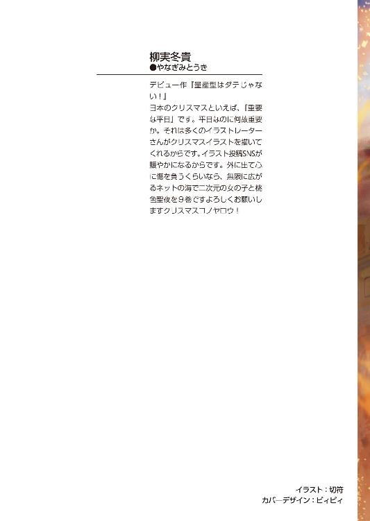

| 対魔導学園35試験小隊 9.異端同盟<対魔導学園35試験小隊> (富士見ファンタジア文庫) | |
| 柳実 冬貴 | |
| (2014) | |

対魔導学園35試験小隊
９．異端同盟
柳実冬貴

富士見ファンタジア文庫
本作品の全部または一部を無断で複製、転載、配信、送信したり、ホームページ上に転載することを禁止します。また、本作品の内容を無断で改変、改ざん等を行うことも禁止します。
本作品購入時にご承諾いただいた規約により、有償・無償にかかわらず本作品を第三者に譲渡することはできません。
本作品を示すサムネイルなどのイメージ画像は、再ダウンロード時に予告なく変更される場合があります。
本作品は縦書きでレイアウトされています。
また、ご覧になるリーディングシステムにより、表示の差が認められることがあります。
口絵・本文イラスト 切符
プロローグ
覚醒は穏やかだった。
クリーム色のカーテンから覗く日の光は暖かく、優しく目覚めへと誘ってくれる。
開いたばかりの瞳に映るのはぼやけた風景。滲んだような視界は、何度か瞬きをするうちにやがてはっきりと映し出された。
今まで止まっていた呼吸を再開するように、草薙タケルは深く息を吸った。
（............またこれか）
タケルは吸った空気をため息のように吐き出した。
こうして病院っぽいベッドの上で目を覚ますのは、もう何度目だろう。
戦いがある度にいつもボロボロになって、気を失っている気がする。
何があったのか思い出してみても、反体制派の本拠地を目指して車で北上していることぐらいしか覚えていなかった。
（......確か、あの後審問会の追っ手に攻撃されて......それで......）
ぼんやりと記憶を探りながら、エグゼの隊員との戦いを思い出そうとした瞬間。
──ぞくりと、背筋に寒気が走った。
記憶を思い出したわけではなかった。
むしろ、思い出そうとした記憶が暗闇しか無かったことに悪寒がわき起こったのだ。
妙だった。記憶を失うことなんて珍しいことじゃない。まして気絶していたのだから、直前のことを覚えていないのは無理からぬことだ。
しかし、いったいこれは何だと言うのだろう。
真っ暗だった。
高速道路で敵に追われ、壁を無反動砲で破壊して崖から落下したところまでは、不思議なくらい鮮明に覚えている。けれどその先は、所々しか覚えておらず、抜け落ちた部分には闇しかない。
記憶を失ったわけではなく、闇だけが記憶にあるのだ。
（なんだこりゃ......どうなってる......）
額に手を当てて、タケルは寝返りを打った。
寝返りを打った先に──桜花がいた。
「......は？」
タケルは硬直した。
目と鼻の先に、桜花の寝顔があった。
桜花はタケルの横で、小さく寝息を立てている。
「......んっ......」
身じろいだ時の声が、すごく色っぽい。吐息がこそばゆい。潤った唇と、長いまつげから目が離せない。
「............」
タケルはごくりと喉を鳴らしてから、無言で反対方向へ寝返りを打った。
ちょっと冷静になりたかったのだ。
しかし、
「......おおぅ......」
今度は反対側にマリがいた。
マリはむにゃむにゃと口を動かしながら、ぎゅっとタケルの服を摑んだ。
「......タケル～......」
甘ったれた声に胸が高鳴りそうになって、タケルはぎくしゃくした動きで仰向けになった。
冷静に、なりたかったのだ。
美少女二人に挟まれているこの状況は、何だろう。
病み上がりには刺激的すぎた。
「............まいったぞ」
ため息を吐いて、タケルは病室らしき部屋の天井を見つめた。
早々に何があったのかを聞かなきゃいけない気がするのだが、無理に起こすのも申し訳ない。
それに、何故二人が横で眠っているのかは、少しは理解できる。
二人とも、目元が微かに赤かったからだ。
（......心配させちまったよな）
タケルは、申し訳なく思った。自分は他の仲間以上にいつもボロボロだ。自制心が足りないためか、いつも無茶な戦いに身を投じている。
仲間達からしてみれば、危なっかしくて仕方がない奴だろう。
タケルだって、もし他の仲間がボロボロになって目を覚まさないなんてことになったら気が気じゃなくなる。
心配で仕方がなくなる。
「......ごめんな、みんな......」
タケルは心配させてしまった仲間へ謝罪を口にした。
「──そう思うんだったら、あんまり無茶しちゃダメだよ～草薙くん」
ぎょっとして、声の方を向く。
窓際に星白流が、にっこりと微笑んで、膝の上に本を広げながら座っていた。
珍しく眼鏡なんぞかけている。
「生徒会長......！」
慌てて起き上がろうとすると、流は「のんのん」と言いながら椅子から立ち上がってタケルの胸を押した。
「寝てな～。君が気を失ってから、まだ二日だよ。だから安心してお眠りよ～」
二日と聞いて、タケルは少し安堵する。
魔導学園へ連れて行かれた時のように、一か月以上でなくてよかった。
流は広げていた本を閉じて、小さなテーブルの上に置いた。
眼鏡も外し、本の上に置く。何気なく本に目がいった。
『神々の黄昏、神話世界への考察』。恐らく、北欧神話関連の本だろう。
「ふふふぅ、こう見えてうちは結構読書家なのさ～。この本、なかなか面白いよ。この考察はいい線いってる。向こうじゃ禁書扱いだったけど、なんとか仲間に手に入れてもらったんだ～」
「そんなことより生徒会長、足は大丈夫だったんですか!?」
タケルは流の心配をした。雪山での戦いで、流は足に重傷を負っていたはずなのだ。流は最初に自分の心配をされてキョトンとした後、少し顔を赤くしながら目を細めて笑った。
「回復魔法のおかげで左足は大丈夫～。右足は残念ながらくっつかなかったけど、ドラグーンの人工筋肉を使った義足のおかげで、ほらこの通り～」
流がスカートの裾をめくって右足を見せる。近年のドラグーン開発の副産物として義手義足の技術も発展しているため、見た目的には普通の足にしか見えない。
それでも、タケルは落ち込まずにはいられなかった。
「自分の足より性能よくてびっくりさ～。だってキックで鉄扉吹き飛ばせるんだよ？」
「......すみません」
「君が謝ることじゃないよ～。あれはうちの作戦だったんだからね、自己責任。むしろ君が守ってくれたおかげでこの程度で済んだんだよん？ うちは感謝したいくらいさ」
足を失ったのにこの落ち着きぶり。流の強さには本当に頭が下がる思いだった。
いつも通りな流に、タケルは安堵した。
「そうか......治療してもらえたってことは、俺達は反体制派の本拠地にたどり着けたんですね」
タケルがなるべく声を抑えながら問うと、流は優しそうに微笑んだ。
「うん、本当にみんなよくがんばった。君達のおかげで本拠地にたどり着けた。お礼を言わせておくれ」
ありがとう。流はいつもののほほんとした顔で、タケルに礼を言った。
何が起こったのかは判然としないが、とにかく一旦危機は脱したらしい。
「大丈夫。ここは安全だよ。審問会も幻想教団も、絶対にここには入ってこれないから」
「......絶対に入ってこれない......？」
そう言うからには、よほど堅牢な防御があるか、不可侵な場所なのだろう。
頭の悪いタケルにも、反体制派の本拠地がどこにあるか予想くらいはしていた。
旧日本の最北端を目指していたということは、旧北海道跡地を目指していたはずだ。魔導学園へ連れてこられた時と同じように、ここは聖域の中という可能性が高い。
ダークエルフによって消滅させられたと言っても、北海道にはいくつか聖域の中に孤島が残っている。そこに魔女達が築いたようなシェルターがあったとしても、不思議はなかった。
流が椅子から立ち上がり、カーテンに手をかける。
勢いよく開かれたカーテンの向こう側。窓から日の光のようなものが差し、目を細めながら、タケルはその光景を見た。
「ここが反体制派......うちら『異端同盟』の本拠地さ」
そこは見覚えがありすぎる場所だった。
思えば、自分がいるこの病室らしき部屋も、造りがどこか似ていた。
慣れ親しんでいたと言っても過言ではない。
「ここって......対魔導学園......!?」
異端審問会本部兼異端審問官育成機関──対魔導学園そのものだった。
第一章 神話世界の断片
＊＊＊
アルケミスト社第一研究施設には地下五〇〇メートルに、百鬼夜行のためのプラントが置かれていた。
この場所は異端審問会の地下施設ほど堅牢でもなければ、厳重な警備が施されているわけでもない。最優先駆除指定の幻想生物を閉じ込めるには、あまりにも脆弱だ。
百鬼夜行の危険性は、数か月前にすでに判明している。
街の一区画が死地となったあの忌むべき事件から、人類は学ぶべきだった。最優先駆除指定幻想生物『百鬼夜行』は、人類が首輪をつけて飼い馴らすにはあまりにも強大かつ常軌を逸しているのだ。
「............」
薄いガラスの水槽の中で、その少女は眠っていた。
身体中に管を通され、頭部は何かの装置によって目元まで覆われている。
痛々しい姿に目を背けたくなる。年端もいかない少女に対する仕打ちとしては、あまりにも凄惨だった。
少女の口元は安らいだように弧を描いている。
瞳が見えずとも、彼女が幸せを嚙み締めていることが見て取れる。
その幸せが幻想であるとも知らずに微笑み続ける少女に、
「......気に入らねぇ」
霧ヶ谷京夜は顔を顰めた。
夢という幻想に身を委ね、大人達に利用されている草薙キセキを不憫に思う。同情などする資格が自分にはないことを重々承知しながらも、そう思わずにはいられなかった。
自分に殺せる存在ではないこともわかっている。別に同情でキセキを殺そうとしたわけでもない。だが自分の動機がどうあれ、草薙キセキにとってあの場での死こそが唯一の救いだったと断言できた。
唯一その救いを与えてやれたのは、兄である草薙タケルだ。
「こいつが死ねずに苦しんでるのは、全部てめぇのせいだ......草薙」
京夜は憎む。
『百鬼夜行』を殺さず、妹であるキセキに救いを与えてやらなかったあの男を。
「──まことに失礼ですが、それはあなた様が決めることではないのでは？」
上品に繕ったような声が聞こえて、京夜はゆっくりと振り返った。
いつの間にか、背後に灰色の髪の女が立っていた。
杉波朱雀。現アルケミスト社代表取締役にして、本来は審問会が処罰すべき対象である錬金術師。自分の存在はグレーゾーンであるとでも誇張するように、彼女の髪はあまりにも灰色だった。ただし、着ている白衣の色は真っ黒である。
「霧ヶ谷京夜様、でございますね？ この度は我が社の施設の防衛に参加してくださるそうで、感謝しておりますわ。遠路遥々ご苦労様でございます」
敬語なのか、それともこちらをおちょくっているのか微妙な口調で言いながら、朱雀は一定の距離を保って立っている。
初めて顔を合わせたが、京夜がイメージしていた通りの人間だった。雰囲気は鳳颯月に近い。目の前にいるのに、そこにいないような感覚。まるで幽霊のような女だった。
「別に俺はこの施設を守るために来たわけじゃねぇ......勘違いするな」
朱雀の言う通り、京夜は開戦した第二次魔女狩り戦争には参加せずに、エグゼの隊員としてアルケミスト社第一研究施設の防衛に当たっていた。
命令されたわけではなく、志願したのだ。
理由はキセキを殺すためでも、真面目に防衛をするためでもない。
この場所で、吉水明が延命処置を受けているからだ。
「存じています、存じていますよ。あなた様のご学友に対する慈悲深き執念......本当に、心の底から敬服いたします。私もあなた様のご学友を救うために、全力で治療に当たらせていただく所存でございます」
「......知った風な口聞いてんじゃねぇ、異端者が」
京夜は挑発をしても、彼女に攻撃を加えたりはしなかった。その選択が、幼馴染みである吉水明の死という、自分にとって最悪の結末を招くことを承知しているからだった。
朱雀は上品に苦笑して、小首を傾げた。
「アルケミストはあなた様に多大なる借りがございますので、ご安心くださいませ」
京夜は奥歯を嚙み締めた。アルケミストにとっての京夜への借りとは、百鬼夜行を暴走させ、その威力を知る切っ掛けを作ったことだ。
自分の行いが結果的にアルケミストへの貸しになった。
京夜としてはそれが実に気にくわなかった。
「ただ......それとこれとはお話が別でございます。勝手に施設に入ってもらっては困りますよ。ここは杉波の人間以外立ち入り禁止でございますので」
「......のわりに警備がザルだ。こんな状態じゃ、侵入するのなんざ容易い」
「ご心配なく。警備などなくても、この装置と、彼女を包む防壁は絶対に破れません。というか、この装置に少しでも触れれば発狂して死にますよ？」
冗談でも言うような軽い口調で言いながら、朱雀がにこりと微笑む。
決して冗談ではないだろう。噂では錬金術師である朱雀の生み出す物質は、この世界のどこにも存在しない素材だと言われている。
朱雀は靴音を響かせながら、京夜の横に立って水槽の中のキセキを見上げた。
「さきほどのあなたの見解、確かに間違ってはいないのでございましょう。百鬼夜行......草薙キセキ様は、これまで我々の想像を絶する苦しみの渦中にいらっしゃいました。死こそが救い......その考え方は概ね正しい」
「............」
「ですが、あなたの目には、今の彼女が苦しんでいるように見えますか？」
京夜はもう一度、キセキを見上げた。
彼女の浮かべる微笑みは、苦しみとはほど遠い安らぎに満ちていた。
朱雀が目を閉じ、キセキを包む水槽に指先を触れさせる。
チリリと、不気味な魔力が るのが見えた。
るのが見えた。
「この装置は彼女の肉体の器にリンクしているのです。故に、普通の人間や魔女が触れれば発狂し、死に至る」
「......はっ、実践してんだから、自分が異端だって言っているようなもんじゃねぇか」
いまさらだがな、と京夜は吐き捨てる。
朱雀は目を閉じたまま、薄く微笑んだ。
「私にはわかります。彼女は、今まで味わったことのないような幸せの中にいる。私はたとえ幻想であろうと、彼女が幸せであればそれでいいと思っています。生きているだけで疎まれ、苦しみ、不一致の肉体が魂へ及ぼす得体の知れない恐怖に狂わせられることもなく......最愛の人と、永遠の安らぎの中で生きていける」
ゆっくりと目を開けて、朱雀は京夜へ目を向ける。
開かれた朱雀の目は、涙で潤っていた。
「死による救いよりも、我が社の揺りかごで眠り続けることこそが、彼女の幸せに繫がると思いませんか？」
自分自身の行いに酔ったような熱い瞳で、朱雀は涙を流しながら京夜に問いかけた。
実に──気色悪い。
京夜はそう思い、舌打ちをすると踵を返して出口へ歩き始めた。
「てめぇらがそいつを利用している時点で説得力のかけらもねぇんだよ......夢は夢だ。俺はそんなもんに縋ったりしねぇ......！」
朱雀は京夜のつれない言葉に「てへ」と舌を出し、背中に隠していた目薬を投げ捨てた。
そして、恍惚とした表情で両手を合わせながらキセキを見上げた。
「──あはっ、もうっ、詭弁など必要ないのでございますっ。これはウィンウィンの関係でございます！ キセキ様は安らぎを得て、我々は極上の研究成果を得られるぅッッ。誰も損をしないのですからオールオッケー！ ボランティアと名のつく行為もそうでございましょう!? あれは無償の慈悲ではありません！ 手を差し伸べた者は一種の愉悦感と『自分はいいことをしている』という満足感を得て、施しを受けた者は救われる！ 誰も困らないのでございます！ 錬金術師の到達すべき理想の等価交換とはこういうものなのでございますよっ！ あああっ、素敵ぃっ！」
涎を垂らしながら、朱雀は身を捩らせる。
そして、鼻歌交じりにキセキを制御する装置をいじり始めた。
もうすでに京夜のことは完全無視だった。
京夜は苛立ちを抑えながら、出口へ向かう。
「......くそが......！」
自分がこんな奴らに手を貸さなければならないことが情けない。
京夜は現状に抗えぬ自分を、心の底から殺してやりたい気分だった。
＊＊＊
病室を離れ、タケルは学園の廊下を歩いていた。
流には今日はゆっくりしろと言われたし、他のメンバーからももの凄い剣幕で養生しろと言われたのだが、一刻も早く現状を把握したかったのだ。
ここにたどり着いたのは、タケルが気を失ったすぐ後だったらしい。
三五小隊はエグゼの副隊長であるマグノリアを捕縛。タケルを担いで目的地を目指した。
目的地は小さな洞窟だった。洞窟が隠れ家なのかと一瞬絶望しそうになったが、流の目当ての代物は洞窟内に隠されていた転送魔法の呪符だった。
異端同盟が予め隠しておいたものらしく、万全を期して人気の無い場所にいくつか隠されているとのことだった。わざわざ北に隠されているものを使用した理由は、他の土地の呪符を同時期に活動していた同盟のメンバーに使用させてしまったかららしかった。
「うさぎ、大丈夫か？」
見慣れた廊下を歩きながら、タケルは具合が悪そうなうさぎを気遣った。
うさぎは青い顔で弱々しく笑っている。
「だ、大丈夫ですわよ、これくらいへっちゃらです......ちょっと頭痛が痛いだけですわ」
顔色もさることながら、言動もかなり怪しかった。
斑鳩とマリの調子もあまり良さそうではない。少し息苦しそうというか、歩いているだけで息が上がっていた。
推測でしかないが、普通の場所とは酸素の量が違うのだろう。眠りから覚めた直後から違和感はあった。まるで標高の高い山の上にでもいるような感じがするのだ。
（......この対魔導学園は、山の上にでもあるのか？）
歩いてみてわかったことは、ここは今まで自分達が通い続けていた対魔導学園とは少し違うということだった。造りそのものは似ているが、設けられている施設が少ない。まず審問会の本部である施設が丸々存在せず、魔導遺産封印塔や禁忌区域も無い。
あるのは学園としての建物だけだ。
「先代のトップが対魔導学園に似せて作ったんだってさ～。よくできてるよね～」
「......似せて作ったということは、反体制派の創始者は異端審問官の関係者ですか？」
施設の中を案内する流に、桜花が聞いた。
「そういうことになってるね。四〇年近く前から存在する組織だけど、本格的に活動し始めたのは二〇年前くらい。その時のリーダーがここを発見して、この建物を作ったんだ」
桜花が目を細めた。
流は桜花の横顔を見つめながら、はっきりとこう言った。
「君のお父さん。峰城和眞さんが、ここの前リーダーだったんだ」
桜花以外の全員が、驚いたように息を吞んだ。
桜花はある程度察していたのか、動揺は見せなかった。
「......生徒会長が私を生徒会に誘ってきたのは、それが理由ですか？」
「いんや、違うかな。うちは峰城さんに会ったことがないし、たとえ君が彼の娘だったとしても、信用できなければ誘ったりなんかしないよ。単純に、今の審問会に疑問を抱いていた君は本物だと思ってね～。仲間にする理由にしては十分だったのさ」
流にそう言われて、桜花はわずかに目を伏せた。
タケルには桜花の胸中はわからない。優しかったという義父のイメージが崩れていく気持ちは本人だけにしかわからないだろう。
「......峰城さんが君や家族に黙っていたことを、できれば恨まないであげてほしいな～」
流は前を向きながら、頭の上に手を置きながら言う。
「確かに桜花ちゃんや君の家族が殺されてしまったのは、峰城さんが反体制派だったからだよ。桜花ちゃんも知っていると思うけど、審問会を辞めさせられた後、君を引き取ってからあの人は反体制派のリーダーも辞任して家族のそばにいた。これ以上踏み込むのは家族が危ないってわかったから、彼は異端同盟と縁を切ったんだ」
「............」
「結果的にそれは手遅れだったんだけれど......君が抱いている峰城和眞さんの『優しいお父さん』のイメージは、決して偽りなんかじゃない。あの人は異端同盟のリーダーとしてじゃなく、最後は家族を守る父親である道を選んだんだ。身勝手かもしれないけど、家族が殺されたのを峰城さんのせいにはしないであげてほしいな」
それはきっと、全て推測でしかないのだろう。
けれどタケルも、峰城和眞という人間が流の言う通りの人だと思った。
「血のつながりはなくても、父の気持ちはわかります。今は私も審問官としてではなく、復讐のためでもなく、仲間のためにここにいますから。感謝こそすれ、恨んでなどいません。私は父を尊敬しています」
桜花が自分の胸に手を当てながらはっきりとそう言うと、流は嬉しそうに笑った。
「──それはそれとして、いい加減にここがどこなのか教えてもらえませんか？」
空気が和んだのも束の間、桜花は刺すような語気で問うた。危うく桜花の父親の話ではぐらかされそうになったが、タケルもそれが一番聞きたかったのだ。
「絶対に安全って言ってましたけど、その根拠はどこにあるんです？ ここは地上のどのあたりなんですか？」
タケルはひぃひぃ言っているうさぎに酸素缶で酸素を吸わせながら、流に聞いた。
流は「それは今から教えるよ」とタケルに告げ、階段を上がり、屋上へ。
重苦しい鉄の扉を開けて、差し込む光に目を細める。
軽い足取りで屋上に出た流の後を追い、日差しの下に出た。
「なんか、変だと思わないかな？」
流がくるりと身体をこちらに向けて、両手を広げた。
変？ タケルは辺りを見回す。変と言われても、ただの真っ昼間の屋上だ。あるのは貯水タンクと、澄み渡った青空だけ。
皆が揃って首を傾げている中、斑鳩だけが空を見上げながら目を鋭く細めた。
「......太陽が無いわ」
一瞬、全員が聞き間違いかと思った。
しかし斑鳩の言う通り、雲一つ無い蒼穹には、あるべき太陽が存在していなかった。
混乱が一気に広がる。
「バ、バカな......！ あり得るのか......!?」
「ち、地下施設とかじゃないの？ 魔導学園のシェルターみたいに、地下に結界作ってそこに施設を......」
「じゃあこの光は何ですの？ どう考えても日の光です......」
「............」
全員が狼狽する中、タケルは空の端にあるものを見ていた。
皹だ。まるで卵の殻に走るように、空に皹が入っている。黒々とした皹の隙間から見えるのは、何もない闇だった。
タケルはおそるおそる屋上の縁まで歩く。自分の中の何かが疼いていた。この先にある真実が、自分の想像の遥か上をいくものであることを予感していた。フェンスの金網を手で摑み、屋上から俯瞰することで初めて世界の有り様を目の当たりにする。
絶句した。
「......なんだよ......これ......」
足の竦むような感覚に、思わず声が漏れた。
目の前に見える風景は、現実ではあり得ないものだった。
世界に皹が......空間そのものに、皹が入っていた。
無事なのは屋上から見上げられる真上の空だけ。この学園の周りには瓦礫しかない。古めかしい、神殿のような建物の残骸があちこちに転がっている。
その向こう側には、何も無い。世界そのものが皹に覆われて、真っ黒に染まっていた。
この世界は半径五キロメートルほどしかない。その向こう側は、全て崩れ墜ちていた。
あり得ない光景に、たまらず目が眩んだ。
タケル達が啞然としていると、流がフェンスに背を預けながら、口を開いた。
「──うちらの生きてきた世界が、間違った世界だっていう説を知ってるかな？」
皹割れた世界を眺めつつ、流はぽつりと呟くように言った。
「昔の哲学者や相対性理論の学者が立てた仮説なんだけど、その人達は『魔力や魔法、幻想生物は本当は存在していなかった』っていう考えを持っていたんだ。もちろん数百年前はそんな仮説は鼻で笑われていたんだけど、最近になって見直されるようになってね」
「............」
「君達は、うちらの生きている世界の歴史が不自然だと思ったことはない？ 歴史に必ず食い込んでいる魔導......うちらが当たり前のように認識している魔法......でも何か、無理矢理つじつまを合わせているように感じたことはないかな」
タケルには流の言っていることがまったく頭に入ってこなかった。
他の皆も同じようで、啞然としながら世界を見つめている。
桜花と斑鳩だけが、冷静さを保っているようだった。
「その仮説は知っているわ。魔導は最初は存在していなかったけれど、ある出来事を境に歴史が改変され、いつの間にか魔導が当たり前の存在になった......ってやつよね？」
「うん。この世界について説明するには、そのある出来事、ってのが重要になってくる」
斑鳩はそこまで詳しくないのか、肩をすくめて両手を上げた。
その時、
「......神話世界と我々の世界との衝突」
桜花が重い声で言った。
「私達の今いる世界は、神話世界との衝突で出来上がった世界で、元は別の形をしていたという推論なら、私も本で読んだことがあります」
流はにっこりと笑って、小さく頷いた。
「仮説を立てた人達は、この世界に魔力や魔法が存在していなかったと唱えていたけど、神話世界の存在は否定していなかった。神話世界っていうのはとどのつまり、異世界のこと。その世界は今でいううちらの世界の魔法で溢れていて、うちらが魔法生物や、神って呼んでいる生物が普通に存在してる」
神話世界については、皆も学園で学んだ知識がいくらかある。
降霊術や英雄召喚などで呼び出す霊と呼ばれる存在も、死後の世界とされる異世界から呼びだしているだけに過ぎないのだから、似たようなものだと言われている。
太古の魔女はその神話世界とコンタクトして、天使や悪魔などを召喚した記録が文献で残されている。今でもごくわずかではあるが、魔術に長けた者ならば神話世界の存在を感じ取ることができるため、神話世界の存在を疑う者はこの世界にはほとんどいない。
「神話世界ならあたしが証明してやれるわよ。あたしだって妖精の召喚くらいできるしね。でもだからって、世界同士が衝突するなんてこと、本当にありえるの？」
マリが訝しげに言いながら、腰に手を当てる。
流の回りくどい説明に若干イライラしているのか、靴の裏で地面をトントン叩いていた。
「さあ、それはわからない。でも、北欧神話世界と呼ばれる異世界が、今はもう存在していないのは知ってる？」
その問いかけにマリは首を傾げたが、タケルは思い当たるふしがあった。
魔導学園に連れて行かれた時、ラピスからそんな話を聞かされていたからだ。
「北欧の召喚士が初めてコンタクトに成功して、北欧神話世界と名付けられた異世界。幻想教団のダーインスレイヴ、メフィストが天明寺礼真に渡したティルヴィング......今でも多く残っているロストタイプの魔導遺産は、北欧神話世界の神々がうちらの世界に接触した時に生み出されたものだって言われてる。つまりかなり古くから認知されている世界なんだ。でも不思議なことに......北欧神話世界がいつ消えてしまったのか、誰も知らないんだよ」
「......まさか......では私達が暮らしてきた世界は、北欧神話との衝突で出来上がった世界だとでも言いたいのですか？」
桜花が問うと、流は頷いた。
「いつからかは判然としないし、仮説を信じるならば再構築された世界なのかもしれない。でも、その仮説に信憑性を与えているものがいくつかある」
「......それって、もしかして」
マリがタケルとカナリアを見た。
「そう。ミスティルテインや、カナちゃんが持っているレーヴァテイン。『神器』と呼ばれるこの二つの魔導遺産は、本来はどんな犠牲を払っても召喚できる代物じゃない。何のリスクも無しに現界できていることが、まずあり得ないんだ」
神話世界にあるはずのものが、この世界の人間の手に渡っている。
いったい、どのような経緯で？
ラピスは、自分でもわからないと言っていた。神話世界にいた頃の記憶は欠損しているため、説明できないとタケルに話していた。
流の言葉を耳にしながら、タケルはもう一度皹割れた世界を眺めた。
（......微かに、見覚えがある）
破壊された神殿のようなものの残骸。
皹割れた世界。終わった世界。
間違いない。この光景は、この世界は──キセキを殺すために初めて神狩り化をした時に見たものと、とてもよく似ていた。
「そしてもう一つがこの世界、北欧神話世界の残骸さ」
流が両手を広げて世界を見渡す。
「この空間は、北欧神話世界とうちらの世界が衝突した時に弾け飛んだ、世界の一部だと考えられてるんだ。異端同盟を設立した人達が座標を特定して、転送魔法で行き来できるようにしてから、本拠地に利用してるってわけ」
「ちょ、ちょっと待って......じゃああたし達は今、北欧神話世界にいるってこと!?」
「半分合ってて半分間違いかな～。この世界も衝突によって改変されてるっぽいから、うちらのいた世界と環境が似てる。本当なら、神話世界は魔力で満たされていて人間は生きていけないからね。まあ信じる信じないは君達の自由さ」
異世界から生物を召喚できるのであれば、その世界へ行くことができるはず、というのは誰でも考えつくことだ。戦前戦後問わず人間が神話世界へ行こうと試みた記録は残っており、その悉くが失敗に終わっていた。
行ったきり、誰も帰ってこなかったのだ。
しかしタケル達が今いるこの残骸の世界は、衝突により環境が本来の神話世界とは違ってしまっているため、こうして普通に生きていることができる、らしい。
「桜花ちゃんのお父さんの峰城さんは、この仮説を本気で信じて、鳳颯月と何か関わりがあると思って嗅ぎ回っていたんだ」
「............」
「そしてきっと、何かを摑んだんだろうね。うちは異端同盟の現リーダーとして、それを知らなくちゃいけないんだと思う。真実を知ることで、たとえうちが殺されるようなことになってもね」
皆、俄には信じられないという顔だった。世界同士の衝突により再構築された世界であるという仮説は昔から唱えられてはいたが、その仮説が事実であるとは、目の前の光景を見てもすぐには受け入れられない。
珍しく真剣な表情な流だったが、すぐにいつもの笑顔に戻り皆に振り返って、両手をパンと叩いた。
「とまあ、いろいろしゃべったけど、君達は今はそんなことは考えなくていいんだ。この場所がどういう場所で、安全だってことを理解してくれたんならそれでいい。まずは君達と行動する仲間を紹介するから、生徒会室に行こう」
皆の動揺を察してか、流は気持ちを切り替えるために明るく言った。
心なしか、そのおかげで張り詰めていた空気が緩む。
ただ一人、タケルを除いて。
「──生徒会長、ラピスはどこですか？」
皆の背中を押して屋上を去ろうとする流に、タケルは問うた。
流はタケルに背を向けたまま、ぴたりと足を止める。
「さっきからずっと探っているのに、あいつの気配が弱いんです。あいつを......ラピスをどこにやったんです？」
「......大丈夫、ここにいるよ。一緒に連れてきた」
「じゃあ、会わせてください。俺はあいつに聞かなきゃいけないことがあるんです」
真剣に、睨みつけるように流を見る。
流は、背を向けたままこう答えた。
「あの子は君に会いたくないらしいよ。それにうちとしても、君にはあの子との接触をなるべく控えてほしい......かな」
「......何故です？ これは俺とあいつの問題でしょう？」
「そうだけど、でも」
「──会わせてください。お願いです」
タケルが語気を強めた時、マリが気まずそうにタケルへ歩み寄った。
「タ、タケル......あたしからもお願い。ミスティルテイン......ラピスを使うのはやめて」
言い辛そうに、震えた声でマリが言う。
タケルは驚きを隠せなかった。
「マリ......お前まで、どうして」
よく見れば、マリだけではなかった。うさぎも下を向いておどおどしており、斑鳩は視線を外したまま目を細めている。カナリアに至っては、こちらを睨んでいた。
桜花は静かに目を閉じるだけだったが、拳を強く握っている。
ラピスについて、何かを隠しているのは明白だった。
タケルはそれを皆に問い詰めようとしたが、寸前で思いとどまった。
「わかった。本人に直接聞きに行く......どいてくれ」
皆の間を突っ切って、タケルは屋上の出口へと向かう。
タケルを止めようとマリが手を伸ばそうとしたが、流がそれを止めた。
流は薄く苦笑を浮かべつつ、タケルの背中に告げる。
「......ラピスちゃんはこの学園の地下室だよ。会いたければ好きにするといい」
周りから流を避難するような声が上がるが、タケルは無視して屋上を後にした。
去り際に一言、流への礼を残して。
＊＊＊
「なんで行かせちゃうのよ！ ここは止めるべきところでしょう!?」
声を荒らげて、マリが流に怒鳴った。
他の皆も納得がいかない様子だったが、黙っている。
流は頰を搔きつつ、マリの肩にぽんと手を置いた。
「彼はうちらが止めたって、ラピスちゃんに会いに行くに決まってるよ～。それにいずれわかることだし、草薙くんが納得いくような形で知る方が彼のためになるかなと思い直してさ～」
あと隠し事って苦手なんだよね、と流は心にもないことを言う。
悔しそうに拳を握るマリに、桜花がため息を吐く。
「気持ちはわかるが、生徒会長の言うことも一理ある。私達が止めたところで、タケルは止まらない」
「あんたまで何でそんなこと言うのよ!? 仲間でしょ!? 自分から悪い方へ向かっていく仲間を見捨ててもいいっていうの!?」
必死なマリの言葉に、桜花は下を向いた。
「そういうわけではない。ただ、ミスティルテインはタケルにとって、我々のような『仲間』とは違う気がするのだ。あの二人には、私達とは違う独特な空気がある」
踏み入るべきではない。口を挟むべきではない。
そう言われた気がして、マリは悔しそうに下唇を嚙んだ。
「わかってるけど......あたしは納得できないっ。だってこのままじゃタケルは！」
「無論、このまま黙って見ているだけで終わらせるつもりはない。私達は、私達にできることをすればいい」
冷静な桜花の、諭すような言葉に、マリは切実な問いを返す。
「......止める以外にできることって、いったい何なのよ......」
桜花は、あくまで冷静に、静かに答える。
「信じてやることだ」
「............」
「タケルが私達を残して一人で行くようなことがないと、信じてやることだ」
その言葉は、かつての苦い経験の上で出たものだった。
キセキが暴走した際、神狩り化をして一人で行こうとするタケルを、桜花は止めようとした。行かないでくれ、と。
タケルはその手を振り払うように、一人でキセキのもとへ行ってしまった。
だが、それでもタケルは帰ってきた。土壇場で仲間達のことを思い出し、帰ってきてくれた。だから桜花は、何度同じ状況に陥ろうとも、タケルを信じている。
「......それだけしかできることがないなんて、あたしは納得できない......！」
マリは瞳に涙を溜めて、屋上から出ていってしまう。
桜花は追おうとしたが、伸ばした手をそのまま下げた。
上手く気持ちを伝えられなかった自分の口べたさに、しばし落ち込む。
真横では流がにっこりと笑っていた。
「大丈夫。マリちゃんだってきっとわかってるさ～。それに信じるだけが君達にできることじゃない。うちにできるのは彼が神狩り化しなくて済むように戦力を提供してあげることぐらいだけど、君達は違う」
流は少し目を伏せた。
「彼とラピスちゃんの力が、うちらにとって必要不可欠なのも事実なんだ～。うちは彼に力の解放を強いたりはしないけど、もし彼が自発的に力を使うなら、うちは止めないよ。でも......君達ならきっと、止めることができるとうちは思ってるんだ」
「............」
「やり方は、うちにはわからないけどね～」
言いつつ、流は二度ほど桜花の肩を叩いた。
そして、他のメンバーを伴って屋上を後にする。
桜花は皆の後には続かず、一人で屋上に残った。
皹割れた空を仰ぎ見ながら、桜花は目を閉じる。
（......本当に食えない人だな。上に立つ人間というのは、必然的にやはりああいうタイプなのだろう）
最後に流が肩を叩いてきた理由を、桜花は察していた。
タケルを守るために必要な力を、自分は持っている。
（......でも）
その力を使うための問題は、自分にでもなく、タケルにあるわけでもない。
今まで決して接触しようとはしなかった、もう一人にあるのだった。
＊＊＊
扉を開けると、そこは面会室のような部屋だった。
本物の対魔導学園の地下室は射撃演習場なのだが、ここは牢屋になっているようだった。部屋にはパイプ椅子が一つと、ガラス張りの向こうにもう一つ椅子がある。
そしてそこに、ちょこんとラピスが座っていた。
「............」
ラピスはタケルが入ってきたことに気づくと、無表情に一度だけ視線を向けて、すぐに逸らした。
ラピスは怒っている。タケルに対してではない。会いたくないと伝えたのにタケルをここへ寄越した流に対して怒っているのだ。
今のタケルには、そんなことですらわかるようになっていた。
「......よっ」
タケルは片手を上げて、明るく挨拶した。
「どうしたよ、こんなとこに引きこもって。またいじけてんのか？」
「............」
椅子に座りながら軽口を叩いても、ラピスはこちらを見もしない。
まるで魔導学園にいた頃のようだが、この拒絶は前とは違う。いじけているわけでも、怒っているわけでもない。
これはたぶん落ち込んでいるのだ。
「......ごめん」
タケルはおもむろに謝罪を口にした。
ラピスの瞳が、微かに揺れた。
「............何故、宿主が謝るのです」
「所々しか覚えてねぇんだけど......お前の制止の声、ちゃんと聞こえてたのに止まれなかったからだ。前からずっと、神狩り化は一〇秒以上続けちゃいけないって、何度も何度も聞かされてたしな」
「............」
「お前が同化するのを恐れてるのを知ってて、止まらなかった。今回の昏睡は俺の自業自得だ。お前のせいなんかじゃない。お前はただ、俺の要求に応えただけなんだからな」
タケルは目を逸らさずに、真っ直ぐに言った。
流も、三五小隊のメンバーも、ラピスのことを誤解している。ラピスは決して、得体の知れない怪物でもなければ、感情の無い魔導遺産でもない。
ちゃんと心を持った人間でもあるのだ。
ラピスは仲間達と同じくらいにタケルの身を案じているのに、何を恐れるというのか。
今回の昏睡だって、ラピスに言った通り自分のせいだ。
こんな風に隔離するのは間違いだ。戒めるのなら、自分を戒めてほしかった。
「......宿主は、私の変化に気づいていますか？」
いきなり、そんなことを言われてタケルは驚いた。
「私を宿主から引き離してほしいと頼んだのは、私自身です。ここには自分の意思で入りました」
「どうしてそんなことを......」
「私が、私自身を制御できないからです」
冷たい鉄の箱のような部屋で、その声はとてもよく響いた。
遮るガラスの向こう側で、ラピスは初めてタケルを見た。
瞳には何も映っていないが、タケルにはラピスとの繫がりから自責の念が感じられた。
「ここ最近、私の中で解読不能なエラーが頻発しているのはご存じでしょう」
「いや、あれはエラーじゃなくて......なんつーか、お前が人に近くなってきているだけであって、別に悪いことじゃ──」
「──人に近づくということが問題なのです」
ぴしゃりと、会話を切るようにラピスが言った。
いつもより大きく、張り上げるような声だった。
「......何が、問題だっていうんだ？」
ラピスが声を張り上げることなど、今まで無かった。
タケルは慎重に、静かに尋ねる。
ラピスは自分の膝に視線を落として、スカートの裾を握りしめていた。
「私はずっと、自分自身のエラーがいったい何なのかわかりませんでした。理解できない行動に対する結論が出せませんでした。でも、宿主と外側の世界へ帰還した後、ようやく答えを出すことができたのです」
「............」
「切っ掛けは宿主が『仲間』と呼ぶ人々と接する時に生じたエラーでした。宿主が鳳桜花様や二階堂マリ様に接する度に、私の中で何かが疼くのです。宿主が他の誰かに意識が向く度に、私の中で何かが波のように押し寄せる。あなたが誰かに笑いかける度に、胸の中に得体の知れない何かが渦巻いてしまうのです」
「......えっと、それは......」
「私はその何かを、エラーとしてしか捉えられませんでした」
ラピスの話を、タケルは最初は真剣に聞いていた。
だが聞いているうちにあることに思い当たり、はからずも顔が赤くなった。
他の誰かと接すると、エラーが出る。他の誰かに意識が向くと、エラーが出る。
自分以外の他の誰かに笑いかける度に、エラーが出る。
鈍感なタケルにだってわかる。
きっとラピスは、他の仲間に嫉妬しているのだ。
急に落ち着かなくなって、椅子に座り直したり、髪を搔いたり、口元を手で覆ったりしたが、タケルは椅子を引きずってさらにラピスに近づいた。
ラピスは変わらず無表情に下を向いている。
「い、いや待て......それはその......お前の気持ちは、俺にはわかるぞ。つか、やっぱ別に怖がるようなことじゃねぇだろ。そいつはたぶん嫉妬ってやつだ」
「............」
「お前がわりと嫉妬深いのはとっくに知ってたぜ？ 他の剣を使おうとするそぶりを見せるとふてくされるし、浮気とか言うし。普段使ってる普通の刀にだって嫉妬するくらいだろ？ 不思議なことじゃねぇっていうか、俺はその......まあ、剣術家としては......お前みたいなよくできた相棒に独占欲抱かれるっつーか......嫉妬されんのは、すげー嬉しいっていうか......」
もごもごと口を動かしながら、照れくさそうにタケルが言う。
本心だ。剣術家として、剣に好かれるというのは途方もなく嬉しいものである。それもラピスは得物として一級品。本来は神話生物である神にしか扱えない代物だ。
認められ、独占欲を抱かれるのは剣士として誇りですらある。
「やはり、宿主は気づいていないのですね」
「だ、だから、気づいてるってっ。嬉しいって言ってんだろっ。な、なな、何度も言わせんなよなっ」
「違います。私は、剣として嫉妬しているのではありません。このエラーを、私は今まで形容できませんでしたが......人の言葉で言い表すことができることに、最近になってようやく気づきました」
その言葉を聞いて、タケルは緩んだ顔を止めた。
啞然としたまま顔を上げると、いつの間にかラピスがタケルを真っ直ぐに見つめていた。
その瞳には、しっかりとタケルの姿が映っている。
いつもは灯っていない、暖かな光と共に、しっかりと。
ラピスは自らの胸に手を当てて、やはり真っ直ぐにタケルを見つめながら、こう告げる。
「私は恐らく──あなたを愛しています。剣としてだけではなく、人として」
感情を得て、剣としてではなく人としてタケルと接することで生まれたエラー。
そのエラーを名状するためにラピスが導き出した結論が、これだった。
口を半開きにしたまま固まっていたタケルは、たっぷりと三〇秒ほど硬直した後、ようやく言葉を吐き出す。
「......あり......がとう」
あろうことか最初に出た言葉がそれだった。
愛。好き、じゃなくて、愛。愛している。
あまりにも一足飛びすぎるその答えは、たぶん、恐らく人としての感情表現に慣れていないラピスが、一生懸命導き出した答えなのだろう。きっと愛なんて抽象的な言葉はラピスも深くは理解していないだろうし、タケルにだってよくわからない。
だからとても拙いものなのは明白だ。
しかし愛という言葉は、なんて重いのだろう。
「あ、ご、ごめん！ なんだありがとうって......いやいやありがとうだけど、その......これって、俺が答え出せばいいんだよなっ？ えーっと......えーっと」
タケルは狼狽しながら言葉を選ぶ。
礼だけ言って終わりってことはないだろう。
しかし結論は出ている。優柔不断に思われるかもしれないが、「男女間の愛についてはまだよくわからない」だ。だからラピスを人として愛しているかどうかはまだわからない。
だから──人として愛しているかはまだわからないけど、人として本気で大好きだし、剣としては確実に愛してるからそばにいさせてください。
（うわ......なんだそれすげーかっこわるい！）
ただのへたれじゃないか。だってこうもはっきりと告白されたことないし、なんて言い訳するのもかっこわるい。タケルが焦り、困っていると、ラピスの方から切り出してきた。
「別に宿主が私を愛しているかどうかの答えを求めているわけではありません。今重要なのは、宿主の答えではないのです」
「えぇ!? そうなの!?」
真っ赤な顔のまま、ちょっと仰け反る。
てっきり告白されたのだとばかり思っていた。恥ずかしい。
「人として愛するということがどういうことなのか、私はまだ理解しているとは言えません。ですが、使い手との融合が最終目的の魔導遺産にとって、それがどんなに危険なことなのかは、今回のことで痛感できました」
「......？ なんで人として好......その、あ、愛することが危険になるんだ？」
タケルにはいいことにしか捉えられなかった。
「剣としてならば、私はあなたにとって唯一無二の存在であると自負できます。ですが、人としては自信がありません。それが問題なのです」
ラピスは少しだけ息を吐き、目を細める。
「私がこのまま宿主に対して人としての愛情を抱けば──宿主にとって大切なものを、記憶の中から消そうとしてしまうはずなのです」
消すという言葉に、タケルは目を見開いた。
「私の独占欲が強くなればなるほど、宿主との魂の融合を急いでしまう。私がいくら融合を抑え込もうとしても、コントロールできない感情がそれを止めることを拒否してしまう。宿主には、他に大勢の大切な存在がいますから、なおさら」
「............」
「目を覚ました時、記憶の欠落に気づいたはずです。魔導遺産が使い手と融合するための下準備、第一段階に当たります。使い手の中から大切なもの......邪魔な存在を削除し、魔導遺産に対してだけ依存するようにするために、行われます」
邪魔。ラピスははっきりとそう言った。
「私の中で導き出された選択肢は二つです。一つは、宿主にとっての大切な存在を全て殺すこと。これは即時却下されました。宿主の仲間やキセキ様を殺せば、宿主は私を拒絶し、二度と私に触れることはなくなるでしょう。それは明確に嫌だと判断できました」
ラピスが膝の上で拳を握る。
「ですがもう一つの選択肢。『あなたの中から大切な人々の記憶を消す』ことで、私の独占欲は満たされてしまう。宿主の中から大切なものを全て消してしまえば、宿主が私との融合を拒否する理由が無くなる」
「............」
「邪魔な者の記憶を消してしまえば──宿主は私だけのものになる」
言い終えると、ラピスは静かに目を閉じた。
魔導遺産が本来どういうものかを、ラピスは知っている。魔導遺産と人間は決して心を許しあえる存在ではない。魔導遺産の扱いは距離感が重要だということは、魔導学園の必修科目で最初に習うことなのだ。
魔導遺産の欲求と人間の欲求は相容れない。人間側が劣れば、魔導遺産は人間を魂の融合という形でとって喰う。故に、使い手は必ず魔導遺産を御さなければならないのだ。
神器ならばなおさらだ。神器が人間には扱うことが不可能であり、人間以上の強 な魂が必要となる理由は、ここにあるのだった。
な魂が必要となる理由は、ここにあるのだった。
「............宿主」
ラピスはうっすらと目を開き、タケルを見る。
タケルは最初から最後までラピスから一度も視線を外していなかった。
「あなたは私に、大丈夫だと言いました。私も、剣としてあなたのそばにいる限り、宿主との融合は抑えられると思っていました。でも......どうやら神器としての性質には逆らえないようです。私は元から、そういうモノなのです。人としての感情を持ってしまった私には、もう自分を抑えることができません」
ラピスが椅子から立ち上がる。
「私はもう、宿主の期待には応えられない。私はもう、宿主から何も奪いたくない。宿主がそれを望んでいないことは、今の私には痛いほどわかるのです。だから」
そして、潤んだ瞳から一筋の涙を流し、震えた声でタケルへの願いを口にする。
「だからどうか、私を手放してください」
「断る」
タケルは椅子から立ち上がり、ラピスの願いを一言ではね除けた。
即答だった。迷いなんて少しも無かった。
タケルの眉間には皺が寄っていた。
「俺言ったよな。もう何があっても二度とお前を手放さないって、約束したよな」
「......ですが私を使い続ければ、宿主は全てを忘れてしまう。約束を破ったのは私です。あなたへの求めを、私は抑えきれなかったのですから」
「記憶が欠落したのは俺が制限時間を守らなかったのが原因だ。お前のせいじゃない」
「もはや時間の問題ではないのです。私の中に生まれた感情を分析した結果、もう止めようがないことは明白です」
「そんなことねぇ......！ お前が本気で俺と魂を融合するつもりだったら、とっくの昔にやってるはずだ！」
「......それは」
「俺はこれからもずっとお前の宿主でいたい！ 剣としても、人としてもだ！」
言い切ったタケルに、ラピスは顔を伏せてしまう。
タケルは肩の力を抜き、二人を遮るガラスに片手をついた。
「頼むよ相棒......お前が苦しいなら、俺も苦しんでやる......」
「......宿主」
「自分の大切なものと引き替えにお前を手放したくねぇ......お前だって、俺にとって大切な人なんだ」
切実に、血を吐くように、タケルは言った。
ラピスは微かに迷いを見せつつも、ガラスにつかれたタケルの掌に手を伸ばす。
けれどその手は、タケルの手と重なる寸前で、力無く落ちた。
＊＊＊
タケルが部屋から出て行った後、ラピスは椅子に座りながら天井を見上げていた。
「............」
自分の内側に渦巻くエラーを、そのままタケルに吐き出した事に、まだ戸惑っている。
自分なりに、エラーに結論を出した。今まで感情を否定し続けてきたが、もはや認めざるを得ない。
自分には、人と同じ性質を持った心がある。それに気づいたのは魔導学園でタケルと二度目の契約を交わした時だ。嬉しさよりも、不可思議という気持ちが強かった。
今回の神狩り化で、それは恐怖に変わった。自分の独占欲は、普通の人間と比べても平均か、少し強い程度のはずだ。だが、自分が魔導遺産であり、神器であるということが問題なのだ。いくら自分の感情を抑え込もうとしても、魔導の身体は欲求に忠実に応えてしまう。
これはタケルの妹、草薙キセキの状況に非常によく似ていた。今まで少しも気にかけたことはないし、興味も無かったが、今なら彼女の苦しみが理解できる。
生まれて初めて、自分が魔導遺産ではなく、人に生まれていればよかったのにと思った。
いや、違う。自覚していなかっただけで、これは二度目だ。
「......また、繰り返すのですか......？」
ラピスが自分自身に問いかけたその時、タケルが出て行った扉が再び開いた。
開かれた扉の向こうに立っていたのは、鳳桜花だった。
「............」
桜花は一人で寂しげに座っているラピスを見てから、椅子に腰を下ろした。
「......こうして、お前と二人でしゃべるのは初めてだったな」
「............」
「というより、まともに会話するのも初めてだったか？ 私は魔導遺産が嫌いだったし」
桜花は記憶を探るような仕草をした。
「......何の用でしょう？」
「気になった。それだけだ。タケルに全てを話したのだろう？ どうだった？」
ずけずけとこちら側に踏み込んでくるような物言いに、胸の中がもやもやとした。
世に言うデリカシーの無い人、空気が読めない人というのはこういう人間を言うのだろうと、ラピスは思考する。転送魔法でこの空間へやってきた後、ラピスは皆に自分を閉じ込めてタケルと接触できないようにしてほしいと、事情も踏まえて全て話した。
流と桜花はある程度予想していたのかあまり動じなかったが、うさぎは泣き出しそうになり、マリはこちらに摑みかかってくるような勢いだった。意外にも、一番敵意をラピスへ向けていたのは斑鳩だった。
自分がタケルの仲間達に受け入れられたわけではないことを、ラピスは自覚していた。
別にそれに対して、ラピスは何も感じない。
こうして桜花が自分のもとへやってきたのも、タケルを心配してのことだろう。ラピスが桜花のことを本心では邪魔な存在としか思っていないように、桜花も自分に対して何の感情も抱いていないはずだ。だから別に、桜花に何を知られようと気にしない。
「宿主に私を手放すように言いました。宿主の望みと私の魔導遺産としての願望は一致しませんし、このまま契約を続けても悲惨な結果にしかなりませんので」
「ふむ。で、タケルは何と？」
「全力で断られました」
「ぷっ、あはははははははは！」
桜花は腹を抱えて笑い出した。瞳に涙すら溜めている。
何を笑っているのだろう。タケルの記憶が削除され、タケルがタケルでなくなってしまうかもしれないのに、何故この女は爆笑しているのだろう。
疑問が疑問を呼んだが、ラピスは奇妙な苛立ちを覚えた。
桜花は片目でラピスを見て、「すまんすまん」と謝った。
「タケルならそうするだろうと思っていたのでな。たまらず噴き出してしまった。許せ」
ラピスの口の端が、微かに動いた。桜花はばっちりとそれを見ていた。
「おお......タケルが言っていたことは本当だったのだな。無表情で無感情な女だと思っていたが、ちゃんと表情に変化がある。今お前は、とてもイライラしているだろう？」
「......何なのですかあなたは。本当に何しにきたのですか」
「言ったはずだぞ。気になって見に来ただけだと」
そしてまた、クスクスと口元を押さえて笑い出す。実に不愉快だった。
「何故そうも明るく笑っていられるのですか。宿主が私を手放さないということは、いずれ彼は私と融合して別のモノになってしまうということなのですよ。仲間のことも忘れ、あなたのことも忘れて、私だけのものになってしまうのですよ。あなたはそれでいいのですか？」
早口で、忙しなくラピスは言った。対して桜花は椅子に深く背を預けた。
「よくない。全然よくない。他の誰かに敗北して奪われるのなら納得がいくが、お前のような魔導遺産風情に勝敗も決さぬまま強奪されるのは我慢ならない」
相手が人間ではないためか、桜花は恥ずかしがらずに自分の本音を吐露していた。
小隊メンバーの前だったならこうはいかないだろう。
ラピスのことを下に見ているのかと言われれば、そうでもない。
桜花の目は、ラピスのことを完全に敵として見ている。
「でしたら、宿主に私を手放すように説得したらどうなのですか。もしくは私を隔離するとか、破壊する努力をしたらどうです？」
「断る。タケルはお前にそばにいてほしいと思っている。その気持ちを裏切るつもりはない。タケルが望む以上、お前はタケルのそばにいるべきだ」
「......理解できません。あなたは矛盾しています。あなたにとって私は脅威であり、敵として認識されるべきです」
自分が桜花や他のメンバーをそういう目で見ているのと同じように、そうするべきだ。
ラピスはそう考えている。
突然、桜花がガラスに向かって掌を思い切りついた。
「──逃げるな」
青い瞳でラピスを睨みつけながら、桜花はそう言った。
ラピスの肩が微かに震えた。
「感情を自分で抑えられないから手放せ？ 魔導遺産としての性質に抗えないから離れろ？ そんなことを承知の上でそばにいたいと差し伸べてきたタケルの手を、お前は振り払うのか？」
「............」
「タケルがどれだけのものに抗っていると思う？ 私のような不出来な人間には到底背負えないものをたくさん背負いながら、それでもあいつは前に進んでいるのだぞ」
それはラピスにもわかっている。言われなくても知っている。彼がどれだけ必死に脅威に立ち向かっているのか、一番近くで見てきたのだから。
「私はお前も抗ってくれと言っているのだ。あいつの一番近くにいるならばそうすべきだ。神器の性質にも、自分の感情にも抗って、納得のいくような状態を維持してみせろ」
ラピスは俯く。
抗って、納得のいく結果を自らの手でつかみ取れ。
復讐に翻弄されていた女になんか言われなくてもわかってる。
「じゃあ私は、どうすればいいのですか......どう抗えばいいのですか？ 方法がわかりません。これ以上、どうしろというのですか......？」
《わからぬか寄生虫──ならば余が教えてやろう！》
唐突に、声がした。
どこからともなく、何もない場所から声がした。
ラピスが顔を上げた瞬間、真紅の魔法陣と共にそいつは現れた。
巨大な二挺拳銃。桜花の相棒。
《未熟未熟、未熟の極み。神器だろうとなんであろうと、貴様は魔導遺産として餓鬼以下だ。宿主をとって喰おうとするとは、もはや寄生虫としても失格である》
「......ヴラド......」
《草薙タケルは貴様よりも遥かに格下の使い手であるぞ。技がではない、存在が格下なのだ。加減が利かぬ貴様が喰い尽くしてしまうのは自明の理。主選びを誤ったな神器よ。だから貴様は寄生虫以下だと言うてお──》
ガキン。
じじくさい説教を始めた二挺のヴラドを打ち合わせて、桜花が止める。
「煽るな馬鹿者。お前だってイレギュラータイプの魔導遺産だろう。偉そうにするな」
《ふん。余が歴史の浅い魔導遺産であろうと、この寄生虫が未熟なのは明白。説教くらい垂れたくもなるわ》
「うるさい銃だ......いいから要件だけ言ってさっさと引っ込め......」
不遜な態度のヴラドに、桜花がため息を吐く。
異世界であるこの場所へ転送されたことで、鳳颯月とのリンクが切れたのだろう。だからこうして普通に顕現できている。
だがわからない。
何故ヴラド程度の魔導遺産がラピスに抗う方法を教えるなどと言ってきたのか。
《疑問か？ 教えてやると言ったであろう。貴様と貴様の主はバランスが悪い。扱えはするが、対等ではない。故にもはや融合は避けられぬ》
「......そのようなことは、あなたに言われずともわかっています。だから私はこうして」
《だが──余の力があれば貴様と主の融合を止めることは可能だ》
一瞬、ヴラドの言っている言葉の意味がわからなかった。
されど、数秒考えた後、ラピスは目を見開いた。
その反応を見ていた桜花が人差し指を立てた。
「抗う方法は一つ。私とヴラドが手伝うことだ。ヴラドの固有性能が、術式さえ知っていればあらゆる魔法を貫けるというものなのは知っているだろう？」
「............」
「メフィストフェレスに乗っ取られた状態ではあったが、私達はお前の魔女狩り化を解除させている。お前が私に神狩り化の術式を教えてくれれば、必ず解除してみせる」
桜花の言う通り、確かに前に一度魔女狩り化を解除されたことがある。
ただしそれはあくまで魔女狩り化だ。神狩り化となれば話が違ってくる。
しかし神狩り化も魔法であるには違いない。使用が可能となる魔力属性が『黄昏』のみであり、魂が人より上位のものでなければならないというだけで、魔法は魔法だ。
融合が失敗した前例はあるが、解除されたという前例は無い。
ただ、前例が無いだけだ。試されたことも無い。
ヴラドの固有性能があらゆる魔法に対して有効なのはラピスも知っている。術式を逆構築させて魔法に叩き込むことで貫通する。『夜血』属性の特性は、『黄昏』属性にも通用しうるのは魔女狩り化を貫通させたことで判明している。
となれば、万が一もあり得るのではないか？
「しかし、神狩り化の術式は複雑です。人間に理解できるかどうか」
「案ずるな。この世に存在するほとんどの魔法の術式を暗記している私だぞ？ 不可能は無い」
《余も解読に協力するのだ。いくら主の頭が残念であろうとも、無理矢理にでも叩き込ませてみせよう》
息がぴったりというか、まるで親子のようにそっくりな口調で二人は言った。
自信満々の二人に、ラピスは下を向く。
ラピスは戸惑っていた。奇妙な感覚だった。桜花の思惑も理解できないし、ヴラドが協力してくれる理由もよくわからない。
なのに不思議と、悪い気はしなかった。
微かに解決の糸口が見えたことに、戸惑いつつも安堵している自分がいた。
桜花はガラスについた手を拳にして、こつんと叩いた。
そして、薄く笑いながらラピスに気持ちを伝える。
「ミスティルテイン......いや、ラピスラズリ。お前は一人ではない。私達がついている」
「............」
「だからお前も、私達を信じて精一杯足搔け」
桜花の迷いの無い瞳を、ラピスは見つめ返す。
答えは決まっていた。
断る理由が見つからない。
ラピスはこの時初めて、自分とタケル以外の存在に、自ら望んで頼ることにした。
第二章 異端は集う
──異端同盟。それは外側、内側問わずあらゆる組織の反体制派を寄せ集めた、いわば継ぎ接ぎだらけの集団である。
同盟と名のつく通り、利害の一致により協力関係にあるだけにすぎず、それぞれが別々の思想、信念、目的を持つことは自由とされている。
異端同盟の存在に気づいた組織は、異端同盟を必ずこう評する。
そんな組織が成り立つわけがない。たとえ成り立ったとしても、長い期間は保たず、瓦解していくのがオチであるとして、あまり危険視されていない集団だった。
本格的に組織として認識されたのは、前リーダーの峰城和眞の代からだ。
「さすがに全員を招集するのは無理だったけど、どういう組織か紹介するために二つのチームにきてもらったよ」
流が椅子であぐらをかきながら両手を広げる。
今三五小隊がいる場所は、対魔導学園生徒会室......と思われる場所だ。
集まったのは三五小隊も含めて一八名。
緑色の対魔導学園の制服を着た三五試験小隊、そして記憶に新しい真紅の制服と、初めて見る白装束の集団だった。
全員若く、成人に届かない年齢であるのは一目でわかった。
赤い服の集団は、服装にも顔にも見覚えがある。
「......タケル、あいつらって」
マリがタケルに耳打ちした。
「ああ......こっちに戻ってきた時に生徒会長と一緒にいた連中だ。確か、第七分隊だっけか......カナリアの方が詳しいんじゃないか？」
「......ふん。エリザに協力はしてたけど、純血の徒に知り合いなんかいない」
カナリアは腕を組んでそっぽを向き、興味がないのか連中を見ようともしなかった。
桜花やうさぎ達も境界線の防衛で純血の徒達と戦い、仲間を殺され、また同時に彼らの仲間を殺しているのだ。心中穏やかではないのか、自然と睨みつけてしまっていた。
タケルも一度しか言葉を交わしたことはないため、どういう連中なのかは知らない。
タケルが複雑な心境で相手の隊長を見ていると、視線に気づいたのか、赤服のリーダーらしき男もタケルを見た。
目があったことで、タケルは慌てて表情の険しさを隠した。
赤みがかったブロンドの少年で、端整な顔立ちだが、気むずかしそうな人物だった。
「んじゃ、手っ取り早く紹介してくよ～。こっちの赤い人達が『純血の徒』第七学徒分隊さん」
流が右手を第七分隊の方へ向ける。
「彼らは草薙くん達と同じで、異端同盟の本拠地にきたのはつい最近。草薙くんと、マリちゃんとカナリアちゃんは知ってるよね？」
タケルはぎこちなく頷く。
すると、第七分隊の隊長が一歩前へ出て、純血の徒の敬礼をしてみせた。
「魔導学園ウェストサイド、『純血の徒』第七学徒分隊隊長、セージだ。訳あって姓は名乗れない」
洗練された動作と口調でそう言って、セージはカナリアを見た。
カナリアは視線を感じてすぐに彼を睨みつけた。
「純血の徒の思想は知っているだろうが、我々は反体制派だ。現体制が行っているような純血主義を掲げているわけではないということを理解してほしい。一時的にとはいえ同盟を組むことになった以上、こちらの思想を押しつけるつもりはない。亜人であろうと魔力を持たぬ人間であろうと、対等と考えるように仲間に言い聞かせている。異端同士、よろしく頼む」
「............」
「以上だ」
言い終えると、セージはキビキビした動きで一歩下がった。彼は一度だけタケルを見て小さく頷き、すぐに前へ向き直った。
タケルはセージの意図に気づいた。
きっとこちらの警戒を解くために、釈明じみた自己紹介をしたのだろう。
少なくともタケルの警戒は解けた。セージは話のわからない人間ではないだろう。
「はい仲良くね～ん。で、次が～」
流が今度は左手を白装束達の方へ向けようとした瞬間、いきなりドンという音が響いた。
白装束の一人が、一歩前へ出ると同時に、手に持った槍で地面を突いたのだ。
長い黒髪を後ろで結った少女で、他の白装束とは違い、ローブではなく鎧のようなものを着ている。
「──『神々の残火』、第六巫女近衛部隊隊長、帝柚子穂です」
完全にこちらを見下したような態度で、柚子穂と名乗った少女がふんぞり返る。
同時に、桜花が驚いたような声を上げた。
「神々の残火だと......？ 生徒会長、そんな連中まで同盟に加えたのですかっ!?」
声を張り上げる桜花の横で、タケルがおろおろとしながら斑鳩とうさぎの肩を叩く。
「な、なぁ、神々の残火って何だ......？」
「............草薙、さすがに頭悪すぎですわ」
うさぎに頭が悪いと言われて、タケルは本気で傷ついた。
「神々の残火は、現代で最大の非公認宗教団体よ。仏教やカトリックなんかが淘汰された後に出来上がった組織。神という存在が崇拝する対象ではなく魔法生物として認識されるようになってから、もっと上位の崇高な存在がいるって布教している連中よ。元々はグレーな組織だったんだけど、審問会が統治するようになってからは完全にブラック認定。結構暴れててニュースにもなってたでしょ？」
「し、知らないや......俺んち、テレビ無いから」
斑鳩とうさぎが深くため息を吐く。
その時、神々の残火の隊長が、目に見えぬほどの速さで桜花の首元に槍先を突きつけた。
槍術の使い手としてかなりの手練れであることがすぐにわかる。踏み込みの速さが異常だった。タケルでも掃魔刀を使用せずに避けられるかは危ういところだ。
音も立てずに首の皮一枚の距離まで突き出し、柚子穂は桜花を睨む。
桜花も動じず、冷ややかに柚子穂を見下ろした。
「私達はあなた方のような背教者や、黒魔術の使い手達と馴れ合うつもりはありません。あなた方がどういう行動をしようととやかく言うつもりは無いが、我ら残火の使徒を侮辱するのであれば、その首叩き切ります」
「侮辱ではない、警戒だ。審問会は貴様らに長い間手を焼いてきた。いきなり貴様らと手を組めと言われてもすぐには無理だ。二年前の無差別テロを忘れたとは言わせないぞ」
「あれは過激派の為したこと。我ら真の信仰者は、無神論者と言えども罪のない一般市民を犠牲にしたりはしません。ご安心ください、こちらとしても野蛮人と手を組むつもりなどさらさら無いので。こちらはこちらで勝手にやらせていただく」
お互いがお互いにフンと鼻を鳴らして、踵を返して自分達の場所へ戻っていく。
（......こっちはいろいろめんどくさそうだな）
タケルの気が重くなる。
「おっけ～、じゃあ次、草薙くん」
突然名前を呼ばれて、タケルは慌ててしまった。
いかん、完全に何も考えていなかった。
とりあえず、おろおろしながらタケルは前へ出た。
「え、えーっと!? そのー、対魔導学園三五試験小隊隊長、草薙タケルです！ 剣術が得意です、他のことはなんにもできません。在学中も成績なんかボロボロで、あは、あはは、落ちこぼれってやつっす。あと、うーんと......しゅ、趣味は～」
盛大にテンパりながら、タケルは忙しなく頭を搔いたり頰を搔いたり身体を摩ったりと、全然落ち着きが無かった。
背後からマリとうさぎとカナリアに身体を摑まれて引き戻される。
「どうしてクラスメイトに自己紹介してるみたいになっちゃったんですのっ......！」
「いつも無駄にかっこつけて名乗るくせに、ここぞという時になんでそんななのっ。しゃんとしてよ、もぉ......！」
「今のいくない！ 完全になめられたっ！ タケルへたれ......！」
三人に怒られて、タケルはさらに慌てふためく。横では斑鳩が口元に手を当てて腰を曲げながら笑いを堪えており、桜花は額に手を当てて天を仰いでいた。
神々の残火の柚子穂はこちらをあざ笑うかのような目を向けており、セージは目を閉じたまま微動だにしない。
タケルは引きつった笑顔で、とりあえず締めくくらなければと思い、片手を上げた。
「よ、よろしくお願いします！ で、できれば、な、仲良くっ」
......我ながらなんて締まりの悪い〆だろうと思いつつ、タケルは肩を落とした。
何故よりによってこの三つ巴なのか。他の組織なら上手くやれるというわけではないが、三つとも完全に敵同士だった集団だ。
いきなり上手くやれというのは無理な話だった。
だが、これも流に考えがあってのことだろう。異端同盟は元々そういう組織なのだ。同盟をまとめあげている流の手腕は計り知れない。
「これで顔合わせは済んだね。──うん！ みんな上手くやれそうでよかったよ！」
......不安だった。流はニパニパ笑いながら、人差し指を立てた。
「あ、適当に選んだわけじゃないからね？ このメンバーで集まってもらったのには、もちろん理由があるんだ～」
理由が無かったら大問題である。
三つの集団は互いを警戒し合いながらも、流の言葉に集中した。
「ここにいる三チームには、それぞれ別の目的がある。思想も違うし、信念なんかもまるでそり合わない。でもね～、違った目的でも、実は方向性が非常に似通ってるのさ」
流はくるりと椅子を回転させる。
この三つの組織からの離反者達の目的が似通っている？ タケルにはとてもそうは思えない。かたや純血の魔法使いが世界の実権を握るべきだとする純血の徒。かたや存在しているかどうかもわからない神を本気で信じ、教えとやらを広めようとしている狂信者。
そして自分達が元々所属していたのは、この二つの組織を異端と決めつけて狩りをするような組織だったのだ。重なるような部分は無いように思えた。
「うちら異端同盟には、純血主義だとか、信仰だとか、魔導淘汰だとか、そういう柱になる思想が存在しない。強いて言うなら『現状維持・安定』が活動理念かな。だから前は敵同士だった人達でも受け入れてる。受け入れる判断基準は、組織じゃなくて個人なんだ」
個人......つまり個人の人間性を重視しているということだろうか。
それはいくらなんでも組織として不安定すぎる。思想無き組織に未来は無い。テーマとコンセプトの存在しない企画が上手く成り立つはずがないのだ。
「この三チームには、それぞれの組織に無関係な個人的事情があるよね。みんな、組織のためだとか、思想のためだとか、そんな理由で異端同盟に加わったわけじゃない。少しはそういう面もあるんだろうけど、根本にあるのは別の目的なんだよね」
流の語りを聞いて、タケルは自分の掌を見つめた。
個人的な事情......確かにある。
元々三五試験小隊は、審問会の思想のために動いていたわけではない。そもそもタケルは金のためと妹のためだったし、桜花は復讐のため。うさぎは家庭の事情、斑鳩はアルケミストを離れ、居場所を求めて審問会にたどり着いた。カナリアだってここにやってきたのは斑鳩に会うためだ。そう考えれば三五小隊は流の言う通りのチームだ。
（......仲間のため、妹のため......か）
他の二チームも、もしかしてそうなのだろうか？ セージと柚子穂の顔色を窺う。セージは静かに視線を床に落としており、柚子穂は流を睨みつけていた。
「君達の目的は達成すれば戦争の悪化を防ぐことに繫がる重要なファクターなの。うちらの相対する相手が世界に影響を与える個人であるように、君達個人の目的と戦いはうちらの活動理念と合致する。だから連合じゃなくて同盟なの」
流は椅子の回転を足で止めて、顔を引き締めた。
「今、世界の大きな渦の中心にいるのは組織じゃなくて個人なんだ。つまり、個人が世界を変えてしまおうとしているってこと。個人の思惑で戦争を起こしてしまうことほど、恐ろしいことはないよね」
真剣な顔つきで流は話を続けていた。
独裁者ですらない、個人の思惑が世界を動かす。国ではなく、世界そのものを手繰る者。タケルにもそういう人間に心当たりがあった。
「審問会の鳳颯月、幻想教団のマザーグース、アルケミストの杉波朱雀......うちらの敵はこの人達だ。この人達を最優先で止めないと、世界が滅びかねない」
タケルの鼓動が跳ね上がる。
マザーグースが敵に含まれていたことに驚きを隠せない。確か、流はマザーグース......というより、オロチと連絡を取り合っていたはずだ。
（そういえば俺は......あの人達の目的を知らない......戦争を止めるためだって言ってたけど、他に何かあるのか......？）
胸の中がざわめき立つ。剣術の師としてタケルはオロチを信用しているが、彼のことを深くは知らない。あまり自分のことを話さない人だったからだ。
マザーグースに関しては言わずもがなだ。
「今回君達に集まってもらったのは、この三チームでとある施設を襲撃してほしいからなんだ」
穏やかではない言葉に、その場にいた全員に戦慄が走る。
異端同盟が非戦闘組織だなんてことは微塵も思っていなかったが、急な話だった。
流は足を組み、両手をパンと叩いた。
「──君達には、アルケミスト第一研究施設を落としてもらう。集まってもらった三チームとも、この場所には最優先で用があるはずだ」
マリとうさぎ、桜花が強張った顔でタケルと斑鳩とカナリアの三人を見た。
タケルは奥歯を嚙み締め、拳を握っている。斑鳩は目を見開いたまま瞳を揺らし、カナリアは闘志に満ちた顔で掌に拳を打ちつけていた。
純血の徒と神々の残火の面々も、同じような反応だった。
「他にも戦力を用意させてもらうつもりさ。だから制圧は他の人員に任せていい。君達は、あの場所ですべきことをしてくれて構わない」
流はその場にいる全ての人間に、一人ずつ視線を送ってから、胸の前で腕を組んだ。
「必ず君達を助けるって、約束したよね。政治的な問題や、作戦後の処理はうちや上の人間に任せて、君達は何も考えず、がむしゃらに自分達の救いたいものを救えばいい」
そして流は、少しだけ性格の悪そうな笑みを浮かべる。
「見返りはいらない。君達の目的達成が──異端同盟にとっての得になるからね」
......フッフッフ。
と、腹黒い笑みを浮かべてほくそ笑む流だったが、見た目がお子ちゃまなためか様にはなっていなかった。
「あダメだ。顔疲れちゃった」
すぐにいつもののほほんとした表情に戻り、もちもちとほっぺたを揉み解す流。
流はのったりとした動きで椅子から立ち上がると、大きく伸びをした。
「作戦については後日また連絡するよ～。じゃ、そういうわけだから──あとはよろしく、草薙くん！」
言いながら流は生徒会室の扉を開けると、ノブを摑んでガチャリと開けた。
いよいよキセキを救うために動けるのだと、高ぶる気持ちを抑えようとしていたタケルは、不意をつかれて目が点になった。
「──はい!?」
「違う勢力だったチーム同士、つもる話もあると思うんだ～。うまくやるためにも交流が必要だよねっ。異文化コミュニケーション的な？」
「いやっ、待っ、え!?」
「棚にお茶とお菓子を用意しておいたよ～。好きに使っていいから仲良くおやり～」
流がぷらぷらと手を振って、生徒会室を出て行ってしまう。
残されたタケルは、行き場を失った手を落とし、茫然とその場に立ちすくんだ。
「...............丸投げかよ!?」
しかもよりによって俺が仕切るのか、とタケルは嘆く。
反目し合っていた組織のチームをいかにしてまとめるのかお手並み拝見......とか思っていたのに、期待の斜め下を行くリーダーであった。
二〇分後、当たり前だが生徒会室には静寂が蔓延っていた。
コの字形に設置された長机にそれぞれのチームが座っているが、コミュニケーションなどとれるはずもなく、生徒会室はまるでサミットでも行われているかのような重苦しさだ。
丁度中央の長机に集まっている三五小隊。小隊の左に『神々の残火』近衛部隊、右隣に『純血の徒』第七分隊が座っている。
近衛部隊隊長の柚子穂は始終雑魚小隊と第七分隊を睨みつけており、その後ろで白装束の隊員達がひそひそと耳打ちしあっている。第七分隊のセージは腕を組んだまま微動だにせず、隊員達は不機嫌そうな顔つきで鎮座していた。
板挟み状態の雑魚小隊のタケルは、チラチラと両サイドの顔色を窺いながら、どんどん小さくなっていく。
桜花はむすっとした顔で座り、マリは頰杖をつきながら指でトントンと机を叩いている。うさぎはもじもじしながら何度も椅子に座りなおしていた。カナリアはすでにここから出て行ってしまい、斑鳩はその後を追って同じく出て行ってしまった。
追いかけたいのはやまやまだったが、この場を放置して出ていけるほどタケルは無責任になりきれなかった。
（あぁ......この胃の痛み、なんかちょっと懐かしいな）
遠い目をしながら真っ白になるタケル。
「......どーすんのよ......この状況」
マリがイライラしながら、小声で悪態をつく。
「人にばかり頼っていないで、お前も少しは考えたらどうなのだ」
桜花がため息を吐きながらマリを戒める。
「ちゃんといろいろ考えてるっつの......元はと言えばあのちんちくりんが全部丸投げで出て行ったせいじゃん。この状況をタケルがどうにかすんのは無理があるでしょ」
「それはそうだが......お前は本当にいつも愚痴ばかりだな。魔法以外にも頭を働かせろ」
む、とマリがふくれる。
「あんたこそ、乳にばっか栄養がいって頭に足りてないんじゃないの？ ていうか、あんたにコミュニケーションに関する考えがあるとは思えないんだけどぉ？」
「っ......お前に言われずとも自覚している。だから必死に考えているのだろうが。あと生徒会長がちんちくりんならお前はちんちくりんどころの話ではない」
「!? い、いやいやっ、さすがにあそこまでちんちくりんじゃないし......！ そりゃこの小隊のメンバーの中じゃちんちくりんかもしんないけど......ってなんで今この状況であたしを貶したわけ？ 現状を打開できない苛立ちをあたしにぶつけないでくんない？」
「最初につっかかってきたのはお前だろうが......！」
マジな喧嘩にならないだけ成長が窺えるが、この二人は相変わらずだった。
二人よりも問題は自分だ、とタケルは自責を問う。
なんとかせねば。せめて隊員同士の自己紹介くらいはしておきたい。重要な作戦がある以上、連携をとるためにも必要なことだ。
どう切り出したものか......とタケルが考えあぐねていると、
「......ふんすっ」
突然、うさぎが両手の拳を握りながら立ち上がった。
小隊メンバーが全員ぎょっとする。まさかこの状況で、うさぎが動くとは思わなかったのだ。止めようとしたタケルだったが、マリと桜花に逆に止められてしまう。
うさぎはガチガチに緊張した足取りで、生徒会室の棚に歩いていく。足と手が一緒に動いていた。うさぎはその場にいる全員の視線を浴びながら、棚からティーカップを取り出して、茶葉を入れてからティーポットにお湯を注いでいく。
しっかりと蒸らしてからカップにお茶を注ぎ、トレイに載せて運ぶ。
見ていて危なっかしかったが、タケルはうさぎの行動力に感動を覚えた。
いつも人前に出た時や狙撃の際に緊張で動けなくなり、過呼吸になりかけていたあのうさぎが、この状況をどうにかするために、お茶くみお姉さんになって自ら動いている。
この目覚ましい成長には涙を禁じ得ない。他の小隊メンバーも初期に比べれば成長しているが、うさぎの成長ぶりは間違いなく小隊一だった。
「ど、どどど、どどうぞですわ」
うさぎは真っ赤な顔で、第七分隊に一人ずつお茶を差し出していく。
予想はしていたが、純血の徒の面々はお茶に手をつけたりはしなかった。女性隊員に至っては、うさぎに蔑むような視線を向けている。
そんな視線に耐えながら、うさぎはセージにお茶を出す。
ずっと目を閉じていたセージだったが、お茶が差し出されると、目を開けた。
「......すまない。感謝する」
茶を目に入れるなり、セージはカップを手に取って口に運んだ。
第七分隊の隊員達がぎょっとした。
「た、隊長......!?」
「ん......アッサムか。やはり外側の茶葉はフィルターの無い純粋な日光を浴びているせいか、香りの深みが違う。入れ方も完璧のようだ」
「そ、そういう問題じゃありません！ こんな外側の女の入れたお茶を口にしては！」
「ただの茶だ。そして美味だ。何の問題がある？」
困惑する隊員を他所に、セージはティーカップを少し持ち上げることで、うさぎに礼を返す。上の者に倣うように、しぶしぶではあるが第七分隊の隊員達もお茶を口に運んだ。全員驚いた後に納得いかない顔をしているようだったが、それはきっと予想外に美味だったからだろう。
うさぎの顔がパァっと明るくなった。
（やりましたわ草薙......！）
表情からそんな声が聞こえてきたので、タケルはグッジョブと親指を立てた。
この調子でいきますと言わんばかりに、次に残火の面々にお茶を持っていく。
近衛部隊の隊員達は、ニコニコ笑顔のうさぎからお茶を受け取ると、その笑顔に吞まれてしまったのかペコりとお辞儀をしていた。
隊長はアレだが、隊員は意外と社交性があるらしい。
そして最後に、隊長の柚子穂へ。
柚子穂は茶を差し出されるなり、ふんと鼻を鳴らした。
「──黒魔術師達は吞気なものですね。紅茶が毒である可能性を考慮しないなんて、こんな人々が同じ作戦に参加するかと思うと気が重くなります」
柚子穂は紅茶を手に取りもせず、高圧的にセージを睨んでいた。
全員揃ってお茶を口に運ぼうとしていた近衛部隊の隊員達が、ぴたりと動きを止めて、名残惜しそうにカップを机に置き直す。
柚子穂の隣にいる少女隊員は、挑発し始めた柚子穂をオロオロとしながら止めようとしていたが、勇気が出なかったのかそのまま小さくなってしまった。
挑発されたセージは静かに紅茶を一口飲んで、うっすらと目を開いた。
「本来、純血の徒は貴族だ。礼節を重んじる。それにたとえこの紅茶に毒が入っていようと、中和する魔法ぐらい心得ているのでな......貴殿らのように周りの全てに対して疑心暗鬼にならずに済むのだ」
「毒の中和......ですか。中和ができるということは毒を生成するのにも長けているということでしょう？ なるほど、黒魔術を扱う者らしい技術です。我々の扱う奇跡は中和ではなく治癒ですので」
隊長同士の会話が始まっていた。始まったのはいいが、なんだかまずい雰囲気だった。タケルも加わるべきかと思ったが、話題に食い込む余地がない。
「黒魔術とは、ずいぶん古風な言い回しをするのだな。貴殿らの言う奇跡とは、単なる回復魔法だろう。それならば我々も扱える」
何気なく言ったセージの一言で、柚子穂の眉間に皺が寄った。
「......無礼な......我々の顕現せし奇跡は魔法などではありません......！」
「貴殿らは魔法を奇跡と呼び、術式ではなく礼法と呼んでいるようだが、細部こそ違えど同じ代物だ」
「奇跡は信仰の賜物です！ あなた方のような異端者の業と一緒にしないでいただきたい！」
「我らが異端であるならば、貴殿らも同じだ。そも......異端同盟などという名称の組織に助力を求めたというのに何をいまさら」
セージが言うと、第七分隊の隊員達がクスクスと笑った。
柚子穂の顔が真っ赤に染まる。近衛部隊の隊員はおろおろしっぱなしだ。
その時、怒りを爆発させた柚子穂が長机を槍で叩き割った。
けたたましい音が響き、場の空気が熱を持つ。
第七分隊全員が、腰の杖に手をかけた。
セージは隊員達を片手で止めて、ゆっくりと立ち上がった。
「最初にこちらは貴殿らの思想を侮辱したりはしないと告げたはずだが......それ以上我らを異端と罵るのであれば、こちらも黙ってはいられない」
「侮辱ではなく嫌悪です。あなた方のような魔法使いがいなければ、我々信仰者までもが異端として裁かれるようなことは無かった......！ 神を信じることが異端と決めつけられるようになったのは、あなた方黒魔術師のせいだ！」
「言いがかりも甚だしい。奇跡も魔法も元を辿れば同じであることは証明されている」
「黙りなさい！ あなた方は異端としての血統を純血と称し、権力と暴力を振りかざしていると聞きました！ その穢れた泥のような血、この場で私が浄化します！」
穢れた血と言われて、セージは顔に影を落とした。
そして、自らの腰に携えられた剣のような形をした杖をゆっくりと引き抜く。
「......私を穢れた血と罵るのは構わない。慣れているのでな」
地獄の底から響いたようなドスの効いた声が響く。
「だが──この場にいる同志の誇りを汚すのであれば、容赦はしない」
怒りで真っ赤に染まった瞳で、セージはショートソードの形をした杖を構えた。
倣うように第七分隊も杖を引き抜き、臨戦態勢に入ったことで、おずおずと近衛部隊の隊員もロザリオを握った。
セージは褐色の魔法陣を、柚子穂は十字の刻まれた白銀色の魔法陣を展開。
そして次の瞬間、
「嘶け──フルンティング！」
「浄化せよ！──バルトロメオ！」
互いの魔導遺産を衝突させるべく、前へ飛び出した。やはりこの相反する二つの勢力は戦いは避けられない。どちらか一方が憎しみを抱いている限り、衝突は不可避だった。
が──次の刹那、銃声と、ガラスが砕けるような音が響いた。
「「──!?」」
「そのへんにしとけ」
衝突したはずのセージと柚子穂の間に、タケルが立っていた。タケルは剣を振り上げたセージの腕を摑み、柚子穂の槍の柄を片手で摑んで止めていた。
セージも柚子穂も驚いて目を見開いている。二人がいくら得物を動かそうとしても、びくともしなかった。接近戦のスペシャリストであるタケルは、二人の力の入りどころを心得ていた。
ショートソードならば振り上げた瞬間に腕を摑めば止めやすく、槍は突きを出すために腕を引いた瞬間を狙えば止めやすい。近接武器を使用して相手の攻撃を止めるには、相手の得物に攻撃のための力が込められる直前に力点を抑え込んでしまえばいい。
片手で十分だった。
「このまま二人の魔導遺産を奪うこともできる。そうしない理由は、あんた達と上手くやりたいからだ」
「「............っ」」
「......得物を奪って、あんた達の隊長としての誇りを汚したくねぇ」
セージと柚子穂は、タケルから目を離して背後の仲間を見る。
近衛部隊の攻撃はマリの防護障壁が防ぎ、第七分隊の攻撃は、桜花がヴラドにより全員の杖をはじき落とすことで止められていた。
ホッと息を吐いてから、タケルは顔を引き締めた。
「隊長二人は俺に顔を貸してほしい。自分の部下に俺達三人がいない間、絶対に争いを起こすなって命令してくれ」
「「............」」
「そうすれば、この手は放す」
今までにない真剣な表情のタケルを、セージと柚子穂は睨みつける。
一〇秒ほど静寂が続いたが、最初に折れたのはセージだった。柚子穂も納得はいっていないようだったが、部下に命令を下す。
そして最後に、タケルも自分の仲間に同じ命令をすると、三人で生徒会室を後にした。
セージと柚子穂を連れ出したタケルは、校舎の屋上にやってきた。
皹割れた空の下で、タケルは大きく伸びをする。
「いや～、神話世界って聞いて一時はどうなるかと思ったけど、こんなに空気がうまいとは思わなかったな～」
「「............」」
「あんたらの仲間は最初にここに来た時大丈夫だったか？ なんか気圧が高いらしくて、うちの隊員の一人が高山病になっちまってさ。ほらあの、お茶入れてた子な。うさぎっていうんだけど、頭痛が酷くってさ～大変だったんだ」
世間話でもするようにそんなことを言いながら、タケルは後ろの二人に振り返る。
セージは胸の前で腕を組んで目を閉じており、柚子穂はそっぽを向いていた。
相変わらずな二人に苦笑しつつ、タケルは「どっこいしょ」と言って、フェンス越しの縁に腰を下ろした。
「......何故隊長だけを呼び出した。話があるのなら、あの場で言えばいい」
「......あなたの魂胆はわかります。隊長だけを潰して、異端審問会の暴力を振りかざそうというのでしょう」
呆れたような顔のセージと、警戒心バリバリの柚子穂。
タケルは頰を搔きつつ、本題に入った。
「ここに呼んだのは、自分を慕ってる隊員の前じゃなかなか話せない話題もあると思ったからだ。まあその、隊長同士、腹を割って話そうってことだよ」
「......悪いが馴れ合うつもりはない。礼節は重んじるが、三勢力とも水と油同士であることに違いは無いのだ。必要最低限の交流以外は不要だろう」
「腹を割るなんて下品な表現ですね。弱味を摑み、こちらの隙を突こうというのでしょう？ そうはいきません」
強情な二人に、タケルは目を細めた。
「いや、俺も馴れ合うつもりはねぇよ。こっちはあんた達と上手くやりたいだけで、仲良くなりたいわけじゃねぇからな」
本当は仲良くやれるに越したことはないと思っていたが、そうするにはもっと膨大な時間が必要となる。
今はこう言ったほうが説得しやすいと思ったのだ。
「最初に生徒会長が、俺達には重なるような個人的な目的があるって言ってたよな。全員アルケミストに対して似た目的を持っているはずなんだ。それが知りたい」
「......何故だ。知ってどうする」
「お互いに知っていれば、協力するかしないかの判断材料になるだろ？」
言いながら、タケルは右手の拳を突き出した。
「──俺には救わなくちゃいけない人がいる。でもその人を救うには、力が足りない。小隊以外の助けが必要だ。あんた達も似たような状況にあるんじゃないか？」
「「............」」
「俺達三人は、互いにその事情を知っておくべきだ。事情を知った上で、手を貸すに値するのなら俺は協力を惜しまない。あんた達も俺の話を聞いて、自分で判断してくれ」
タケルは拳を引き、自分の膝の上で両手を組んだ。
そして、語り始める。
自分が救うべき存在と、仲間達と経験した様々な苦難、背負っている業。全て、洗いざらいを吐き出した。
タケルが腹を割ろうと提案したのは、先ほど二人に言った通りだ。思想や信念、文化が違うから分かり合えないのは組織や国だ。個人が分かり合うために重要となるのは、目的だ。それも思想や信念とはかかわらない、個人的な事情。
どのチームも所属する組織の現体制では救えない存在がいるからこそ、異端同盟に加入した。共通する点はそこなのだから、打ち明ければ必ず協力し合える。
タケルはそう考えたのだ。
「──俺は妹を救い、仲間が安心して生きられる居場所がほしい。だからここにいる」
壮絶すぎる話を聞いて、柚子穂の表情には変化があった。感傷......というよりは、自分と重なる部分が多くて戸惑っているようにも見える。
こちらを見る目が変わったのは明らかだ。
セージは前と変わらず、静かにタケルの話を聞いていた。
しかし、
「......これだけの事情を聞いてしまったのだ。私も話さないわけにはいかないだろうな」
薄く開かれた瞳を閉じて、セージは自らの生い立ちや救うべき者について話し始めた。
「私の部隊は、魔導学園ウェストサイドで、落ちこぼれと蔑まれてきた分隊だ。純血だからと言って、必ずしも優秀な人間が生まれるわけではない。組織の中でも、やはり落ちこぼれは存在する」
「......そうだったのか......でもあんたは、優秀そうに見えるけどな」
口をはさむつもりはなかったが、タケルは言った。
「落ちこぼれの烙印は、能力の優劣だけで押されるものではない。私の場合は、保有する属性が穢れているものだったからだ」
「............」
「私の『錆』という属性は、ウェストサイドの人間には腐った血を連想させる。私の部下達も、属性は優秀だが術式構築の才が無い、あらゆる点において秀でているが魔力量が少ない、忌むべき属性の持ち主......などの欠点や先入観のために爪はじきにされた者達だ。それでも、血の誇りのために懸命に努力した。血統に甘えるのではなく、純血がすべからく優秀だということを証明するために」
セージは淡々と、純血の徒での自分達の立場を話した。
最初に会った時に、第七分隊の顔つきからにじみ出る苦労のあとから、自分達と似たような経緯を辿ってきたということは予想できた。
予感はどうやら的中していたらしい。第七分隊の立場は三五小隊ととてもよく似ていた。
「優秀さを上に知らしめることで、我らはのし上がろうとした。しかし、上の人間は認めようとはせず、我らにまっとうな役割が与えられることはなかった。暗部として汚れた仕事ばかり押し付けられ、任務を成功させたとしても名誉ではなく汚名ばかりが積み重なるだけだった。......腐ることなくやってこられたのは、一人の仲間のおかげだ」
セージは自らの掌を見つめながら、拳を握った。
「私と同じような......いや、私以上の業の深い属性を持った、イオン・スチュアートという少女が部下にいた。属性名は『苦痛』......自らの痛みを他者に共感させるという古代魔法を可能とする。彼女はその特性からいつも傷だらけで、周りから忌み嫌われていた。反して本人の性格は明るく、前向きで......純血の徒とは思えないほどに儚かった」
タケルは察する。セージ達が救いたい人間は、きっとその少女なのだろう、と。
「......任務の最中、彼女は仲間を逃がすために自分だけ外側の世界に残った。彼女が審問会に捕らえられ、アルケミストの研究施設に実験体として収容されたと知ったのは、我らが内側へ帰還してしばらくしてのことだった。上には救出に行かせてほしいと要請したが却下された。『穢れた血にはお似合いの末路だ』......とな」
セージの瞳の奥に、怒りが宿る。
「純血の誇りは弱きを守り、弱きを導くこと。そして、同胞を決して見捨てないことだ。ウェストサイドはその誇りを蔑ろにし、我らを裏切った。それが第七分隊がウェストサイドを離れ、異端同盟に加入した動機だ」
「............」
「今のウェストサイドにいては......仲間を救えない」
言い終えると、セージはタケルの横へやってくると、同じように縁に腰を下ろした。足を組んだ姿勢で、セージがじっと柚子穂を見つめる。
柚子穂は複雑な表情をしていたが、沈黙を破るように、突然槍の柄を屋上の床に立てた。
高慢な態度でタケルとセージを見下す。
そして、
「──私は落ちこぼれではありません！」
......開口一番にそう言った。
タケルは目を線にし、セージは鼻を鳴らす。
「......しかし、私がまとめている第六近衛は、神々の残火の中でも立場が弱かったのは事実です。私は元々第一近衛の者でしたが、第六巫女、十六夜様の御心に感銘を受け、あのお方を命を賭して守ると誓った」
タケルは神々の残火の実情をよく知らないが、宗教団体であるのならば、巫女を奉っていても不思議ではない。
神々の残火は現代で生き残っている数少ない非公認宗教団体だ。しかし内情は複雑で、一枚岩ではない。宗教という概念が否定された後、救いを求めた信徒達は徒党を組み、審問会の目を盗んで唯一神となる新しい神を崇めた。新しい神と言っても、今まで存在していた宗教がごちゃまぜになったような状況で、宗教連合と言ってしまった方が正しい。
団体の巨大化に伴い、神への崇め方などの思想の違いが生まれ、分裂するのにそう長い時間はかからなかった。
内部での争いを避けるために教皇は神々に仕える巫女を分け、派閥を作らせた。
柚子穂の話では、彼女が仕える第六巫女は信徒も少なく、弱小とのことだった。
「あなた方も私の部下を見たでしょう。弱腰で、流されやすく、想定外なことが起こってもオロオロとするばかり。優しさだけが取り柄のような子達です。だから私のようなはっきりとした人間が先頭に立って率いなければなりませんでした。多少傲慢でも、です」
どうやら傲慢な自覚はあるらしい。タケルは最初から感じていたが、柚子穂はかなり無理をして今のような性格を貫いているのだろう。
仲間のために。
柚子穂はへの字口で眉間に皺を寄せながら、胸のロザリオを握る。
「残火が異端審問会に屈したのは、今から三年前のことです。審問会は我々に、『巫女を一人引き渡せば残火を公認の宗教団体として認める』という交渉をしてきました。評議会と教皇は、全会一致で第六巫女様を人身御供にした......！」
握ったロザリオが、ギチリと音を立てる。
「第六巫女様は何も言わず、ただその決定を受け入れるだけでした。それで救いを求める信徒達が安心して神に仕えられるのなら構わないと。私達も、その意向を汲みました」
しかし、と付け加え、柚子穂は奥歯をかみしめた。
「上層部の決定に反乱が起きるのは必然でした。審問会に屈したことを認めず、残火の信徒達はテロ活動を頻発して行うようになりました。彼らは第六巫女様のことなどまったく意に介していなかった。ただ宗教の自由を求めるばかりで......犠牲となった巫女様のことを助けようなどとは、少しも......！」
涙ぐんでしまった瞼を袖でぬぐい、柚子穂は気丈に顔を上げた。
「巫女様はアルケミスト第一研究施設に囚われています。私達は、だからここに来ました。異端に加わることが信徒として恥ずべきことなのは、あなた方に言われなくてもわかっています......！ でも、それでも......！」
恥辱に耐えられなくなったのか、「くっ」とうめき声をあげて、柚子穂は後ろを向いてしまった。宗教のことに関してタケルは理解できない。だけど、彼女達がどれほどの覚悟で異端同盟に助けを求めてきたのかは少なからずわかる。
恥も外聞も捨てて......それでもなお助けたいという想いで、縋るような気持ちでここへきたのだ。その覚悟を笑うことなど、タケルには断じてできなかった。
「俺達は思想も信念も違う、決して交わらない水と油だ。確かに、それはそうだろう」
「「............」」
「でも、大切な誰かを救いたいって気持ちは──一緒のはずだ」
タケルは縁から立ち上がり、拳を握る。
「同じ異端同士、分かり合うのはそこだけでいいはずだ。全てが終わった後、俺達はまた敵同士に戻るかもしれない。でも、その時はその時だ。今はただ、全力で前だけを見ていたい。ただひたすらに、救うべき者を救いたい」
握った拳を前へ突き出し、タケルは告げる。
「──同盟成立だ。俺はあんた達に助力する。だからあんた達も、俺達に手を貸せ」
風が吹き、揺れる前髪の間から、タケルは澄んだ瞳を二人に向けた。
突き出された拳を見ながら、セージも縁から立ち上がる。
「たとえ再び敵として立ちはだかるとしても......か。その言葉気に入った。我らも貴殿らに力を貸そう」
セージは拳を出して、タケルの拳に合わせた。
そして、最後に──
「......私はあなた方を認めません。私達は今まで周りに敵しかいませんでしたから、誰も信じるつもりはありません。信じるのは神と、第六巫女様だけです」
背を向けていた柚子穂が、振り返える。
「ですが、力を欲しているのは事実です。私達第六近衛は、あなた方を利用させてもらうことにします。だからせいぜい、あなた方も私達を利用すればいい」
あくまで傲慢な態度だったが、口をへの字にした柚子穂は、他の二人と同じように拳を突き出した。
かくして、異端同盟は行動を開始する。
手を取り合うわけでも、肩を貸し合うわけでもない。
ただ拳を突き合わせて、同じ方向へ進むのだ。
それぞれの反撃の狼煙を上げるために。
第三章 第一の反撃
＊＊＊
アルケミスト第一研究施設で、杉波朱雀は水槽の中のキセキを眺めながら、うっとりと頰を赤く染めていた。
完全に制御された百鬼夜行を眺めることで、朱雀は自らの可能性に狂喜する。
これほどまでに強大な力を制御することができた自分の偉業に悦を感じていた。
──しかし、不意に朱雀は物欲しそうな顔になる。
杉波の人間は、研究欲を満たす以外に興味を示さない。研究し、開発し、実用化に至った時点で実験対象からの興味が失せる。つまり結果が出れば後は興味が無いのだ。
兵器がどこの誰に使用されようと、どうでもいい。
「......今回ばかりは......興味があります......」
恍惚とした表情で、朱雀は水槽の表面に触れる。
「世の中は、本当に不思議なことで溢れていますね......とりわけ、このサンプルは魂の在り処と不死の謎に通ずる情報を多く含んでいる......結果の先を見てみたいと思えたのは初めての経験でございます」
結果が新たな謎をもたらしてくれるに違いない。
百鬼夜行についてはまだまだわからないことばかりだ。遺伝子構造的には数えきれないほど多くの幻想生物の特性を内包しており、常に進化を繰り返している。
無限に進化を続け、増殖する肉の塊。混沌だ。
肉の構造は魔力と有機物の中間、召喚することで現界する魔法生物に近い。キセキの意思によって制御できるわけではない。不随意筋のようなものなのか？ そも、呪いなどという魔法的な概念で幻想生物としての特性を人間の遺伝子に組み込めるものなのか？
色々なシチュエーションの夢をキセキに見せることで百鬼夜行は様々な反応を示す。そして刺激を与える度に朱雀の予想を上回る結果を弾き出していた。
エンドレスで湧き上がる高揚感。止めどない絶頂。恋にも似た火照りが、朱雀を焦がす。匂いは人間の血液に近い。見た目は光沢を有しているが、触感はただひたすらに冷たい人間の皮膚だった。
......味は？
味はどうだろう。どんな味がするのだろう。
朱雀は荒い息を吐きながら、キセキを包む防壁へ舌を近づけ、這わせようとした。
「............さすがの僕でも、それは引きまくりです」
背後で声がして、朱雀は舌を出したままきょとんとしつつ振り返った。
そこには、神父のような恰好をした男が目を線にしていた。
「お久しぶりでございますね、ホーンテッドさん」
朱雀は目をパチクリさせながら、舌を口の中に引っ込めた。
「本当にいつもどこからともなく現れるのですね～。あなたの準不死のからくりはわかりますが、魔力属性の特性はいまだに理解できていませんね」
「............」
「あ、どうです？ 一度私のモルモットになってみませんか？ あなたの知らないあなた自身が見えてくるかもしれませんよっ？」
ウキウキしながら近づいてくる朱雀の横を、ホーンテッドは冷めた表情で通り過ぎた。
そして、水槽の中のキセキを見上げる。
「伊砂さんも表面的にはそうでしたが、やはり杉波の方々は嫌いです。他人に依存する理由が己の研究欲にしかないところが特に」
「それは仕方がないことですわ。杉波はそういう生き物でございますので～」
「他人に依存するのであれば心に依存してほしいものですね。内面に依存する僕と、外面に依存するあなた方はやはり相反するのでしょうか」
ふん、と鼻を鳴らして、ホーンテッドは眠るキセキの顔を見て目を細めた。
その横に、朱雀が並んで立つ。
「というかというか、どうしてここへいらっしゃったのでございますか？ アルケミストは現在審問会と協力関係にありますので、幻想教団の方と接触すると颯月様に叱られてしまいます」
朱雀が尋ねても、ホーンテッドの視線はキセキに向いたままだ。
眠るキセキの、幸せそうな笑顔に釘づけだった。
「百鬼夜行の制御に成功したと聞きましてね。気になって見に来たんですよ。驚きました。本当に安定しているようだ。しかし......何故彼女は、こんなにも幸せそうなのですか？」
ホーンテッドが尋ねると、朱雀は目を輝かせた。
「彼女は今、夢を見ているのでございます。飽くなき幸福な夢を見せることで、キセキ様に精神の安定を与え、百鬼夜行の暴走を抑え込んでいるのです」
嬉しそうに自分の成果を話す朱雀に、ホーンテッドは初めて目を向けた。
表情は険しい。
「......なんだと？」
重い声で問い返すと、朱雀はニコニコしながら両手を合わせた。
「キセキ様は今まで苦痛しか味わってきませんでした。そのためか、幸福というものに非常に弱いのでございます。百鬼夜行もキセキ様が望んでいないことは行いません。夢を見ている彼女が幸福ならば、オーバーフローしない限りは大人しいのです」
「オーバーフローした場合は？ 審問会は定期的に百鬼夜行を解放させて内包量を減らしていました。放置すれば、たとえこの少女が幸福であろうとも溢れ出すはずでしょう」
「そこは問題ありません。安定していれば増殖量もさほど多くはありませんし、何せ戦時下ですから、細胞を兵士に移植させて発散させてあげればいいのです。内包量も減るし、戦力にもなって一石二鳥なのでございます♪」
それが本当のことだとすれば、途方もない戦力となるだろう。無限に増殖する細胞の一部を人間に移植させて、ほぼ無敵の兵士を作り出す。
実現すれば永久機関だ。移植させる生物がいればいくらでも戦力を増やせてしまう。
「もうテストもされているのですよ。つい先日、北アメリカの審問会が魔導サイドの侵攻を受けましたでしょう？ その時の迎撃に細胞を移植した兵士を何人か送り込みました。数千の敵を殲滅したと報告が来てございます」
「............」
「あ、失礼いたしました。あなた様が魔導サイドの方であったことをすっかり忘れていました。この度はご愁傷様でございます」
ぺこりと、朱雀がうやうやしく頭を下げる。
ホーンテッドには朱雀の謝罪など耳に入っていなかった。まるで、そんなことはどうでもいいとでも言うように、目を見開いてキセキを見上げている。
「つまり......この少女は夢を見せられることで操られているということですか」
「はい。移植しても浸食が始まらないのは、移植される人間をお兄様だと認識させているためでございます。キセキ様にとってお兄様はこの世の誰よりも大切な方でございますから、彼に危険が及べば自動的に守り、生存するための力を与え、敵を屠ってくれる」
「............」
「お兄様を守る健気な妹......守ってあげれば、お兄様が頭を撫でてくれる。そんな夢を見せてあげれば、キセキ様も幸せ、審問会も戦果をあげられるのでございます」
どうですどうです？ 誉めて誉めて？
とでも言いたそうな顔で、朱雀はホーンテッドを覗き込んでいる。
「できれば幻想教団側にもこの技術を提供してあげたいところなのですが、残念ながら協定を破ると審問会の矛先がアルケミストに向いてしまうのでございます。そうなると、なんといいますか、非常に面倒くさいので不可能なのでございます。申し訳ございません」
この時ばかりはなぜか本気で申し訳なさそうというか、残念そうに頭を下げた。技術の成果が確認できるのであれば勢力なんてどちらでも構わない、ということなのだろう。
幻想教団にとっては致命的となる技術提供の拒否だが......。
ホーンテッドは、突然にっこりと能面のような笑みを浮かべた。
「いえいえ、戦力として欲しいのはやまやまですが、内側にこのような技術を持ち込めば批判も殺到しますので。幻想教団には審問会のように倫理委員会を丸め込むような統率力が無いのです。西とか東とか元老院とかいろいろとこちらも面倒くさいので──ぶっちゃけ頼まれてもいりません、こんなもの」
柄にもないことを言っているが、最後の一言だけには力がこもっていた。それが強がりから出た一言でないことは、ホーンテッドと会話をしたことのある人間になら誰にでもわかる。彼はそういう人間ではない。しかし、朱雀にはそれを察せるだけの『人の心』を持っていなかった。というより『人の心』に興味がなかった。
首を傾げながら、「じゃあどうしてここへ？」とでも言いたそうな顔をする。
「ここへきたのはただの興味ですよ。以前にキセキさんの力を遠目から見ていましてね。これほどの力を制御した技術がどんなものなのか気になったのです」
「あら、まあ！」
誉められたことで、朱雀は嬉しそうに顔を綻ばせた。
「さすがです。感服いたしました。素晴らしい技術ですね。とても勉強になります」
「あらあら！ まあまあ！ そんなに誉めないでくださいな！」
両頰に手を当てて、朱雀はくねくねと身体を揺らす。
ホーンテッドは紳士らしく手を胸の前に当てて腰を曲げて礼をした。
「本日はこれでお暇しますが、あなたのご活躍を今後も楽しみにしています。お近づきと百鬼夜行掌握のお祝いに、これをどうぞ」
そして、礼をしたまま差し出した左手に魔力を集中させ、黒々とした粒子を出現させる。
彼の手の中に現れたのは、黒い花束だった。
朱雀は子供がおもちゃをもらった時のように目を輝かせてそれを受け取った。
「《絶望の花》......『絶望』属性にのみ召喚可能な魔法生物でございますねっ？」
「僕の属性に興味があるようでしたので、どうぞサンプルにお使いください。現界させられる時間は二四時間ですので、調査するのであればお早目に」
「わーい！ ありがとうございます！」
朱雀は花束を手に、年端のいかない少女のような笑みを浮かべる。
「それでは、またいつか」
ホーンテッドは笑顔を返しながら、きびきびとした足取りでその場を去った。
第一研究施設の廊下を歩きながら、ホーンテッドはギラついた瞳を前へ向け、背筋を伸ばし、肩を怒らせるようにずんずん歩いている。
《このまま本当に帰るつもり？ あのまま放置しておいていいの？》
腰に携えたＳクラス魔導遺産、ダーインスレイヴのナハトがホーンテッドの脳内へ声を送る。ホーンテッドは珍しく険しい表情のまま、ナハトの声に耳を傾けていた。
「......それは幻想教団としてそれでいいのか、と聞いているのか？」
《いや、ホーンテッドとしてそれでいいの？ って聞いてるんだけど》
「............」
《すごい怒ってたじゃん。百鬼夜行......ていうより、あのキセキって子の現状が気に入らないんじゃないの？》
そう言われて、ホーンテッドは腰の剣、『ダーインスレイヴ』を優しく撫でた。
「お前は本当に僕のために存在しているかのような剣だ......愛しているよ、相棒」
《やめてくれ。本当に》
「照れ屋さんめ」
《ぶっ殺すぞ》
ホーンテッドは変わらず険しい表情のまま、研究所の廊下を歩く。
驚くほど静かだ。笑えるほど静かだ。第一研究施設の研究員は杉波姓の人間しかいないと聞いていた。
静かすぎる。人間がいないわけではないのに、人の気配が無いのだ。
「ああ......気持ちが悪いな」
ホーンテッドが不快そうに鼻を鳴らす。
「研究所に引きこもったまま一生を終える生物。外の世界を知らず、研究にのみ生涯をささげ、喜怒哀楽を、愛を知らずに死んでいく哀れな哀れな傀儡人形。なんて興味のそそらない連中なんだ」
《怒りの根源はそこ？》
「いいや。杉波の人間がどう生きようが僕は微塵も興味が無い。勝手にすればいいと思っている」
《............》
「だが、その閉鎖と排他と洗脳が生み出した偽りの幸福に縋る生き方を、あの不憫な少女に強要するのだけは、僕は許せない」
不憫な少女。草薙キセキ。
哀れな、哀れすぎる宿命を背負った少女。考え得る限りの苦痛という苦痛を味わった......つもりでいる小さな少女。何も知らない純粋な女の子。
今彼女は、幸福の中にいる。偽りの幸福の中に。
「夢というぬるま湯に浸からせ、偽りの幸福に沈めてやることで彼女を利用する杉波を僕は悪と断定する。夢だと？ 幻想が人を幸せにする？ 断じてありえない。幻想が絶望たりえないのと同じようにな。ナハトには今の草薙キセキが幸福に見えたか？」
《いんや。滑稽に見えた。かわいそうだなって思ったよ、前よりずっと》
「そう否だ。断じて、否なのだ......！ あんなにも魅力的な少女を、あんなにも僕好みな少女を利用する杉波の行いを僕は断じて許すわけにはいかない！」
ホーンテッドは歩調を速め、力強い足取りで傀儡が蔓延る研究所を歩く。
表情は決意に満ちていた。それもまっとうな決意だ。
まるでヒロインを救うヒーローのような。
正義の使者のような、そんな表情だ。
彼は他者から見れば悪と断ずるのに一片の躊躇もさせないほどに、悪だ。
だが彼にも善悪の概念は存在する。たとえ他の誰かから見て、彼の善としての思考が悪であったとしても、彼にとっては間違いなく善なのだ。
今、彼は自らの正義に準ずるために、決起する。
「すでに手は打った。あの子は僕が救う。偽りの幸福から救い出し、そして──」
そして彼は、自らの道を迷いなく、真っ直ぐに歩くのだ。
「──救いようのない現実に、必ず連れ戻してみせる！」
絶望の申し子としての正道を、ただひたすら、真っ直ぐに。
＊＊＊
第一研究施設襲撃チームの隊長を集め、同盟として機能させるための結束をなんとか固めたタケルは、生徒会室に戻った後、すぐに斑鳩とカナリアを探すために学園内をうろついていた。
こうして学園......を模した建物の中を歩いていると、様々な人とすれ違う。
対魔導学園の生徒は見かけないが、審問官の制服を着た人間は何人かすれ違った。他にも白衣を着た元アルケミストであろう研究員や、倫理委員会のバッヂを付けたスーツ姿の人間、神々の残火以外の宗教家らしき装束の男達、内側の魔法使いらしき人々をイーストウェスト問わず何人も。
勢力は判然としないが、皆忙しなく何かの作業を行っていた。
「......南アメリカのシェルターが北アメリカの審問会に攻撃を仕掛けたらしいが、迎撃により撤退したそうだ」
「あそこはドラグーンの開発が盛んだし、地形的にも防衛には適しているけど、聖域が多いから人口は南アメリカのシェルターの方が多いはず。それにあそこの魔導学園はウェストサイド主体でしょう？ 襲撃の準備はしていたはずだし、たった三日で壊滅なんてあり得るのかしら......」
「わからん。あそこのウェストサイドが負けるとは思えない......考えられるのは新兵器か。審問会は本当に防戦一方なのか？ 転送魔法が使用できる魔導サイドと違って、侵攻手段は限られているのだろう？」
「高度一万メートルまで上昇すれば不可視災害の被害を受けないで済むし、防護フィールドだって無敵じゃない。ここ最近、秘密裏に海外の審問会同士の連携が頻繁に行われていた。あれは戦争を見越してのことだったはずよ。侵攻は時間の問題なんじゃないかしら」
廊下で話しているのは、女性審問官とイーストサイドの魔法使いらしき男だった。
話の内容を察するに、外では戦争がもう始まっているのだろう。
純血の徒が旧日本へ侵攻したことで、幻想教団......魔導サイドは後に引けなくなった。
予想していたことだが、本格的に第二次魔女狩り戦争が始まったことを実感すると、ひどく気が重くなる。
こんな状況で個人的な活動に身をやつすことに罪悪感を覚えないわけではない。
しかし、やらねばならない。政治や戦争の行方がどうなるかはわからないが、一戦力でしかないタケル達が考えても仕方がないことだ。
そういったことは流や上層部に任せるしかない。
「............」
心境は複雑だが、異端同盟が力を貸してくれる。
今はただ、前に進むだけだ。
（カナリア......どこへ行ったんだろう）
闇雲に探したところで見つからない。
こうしてカナリアのことを探してみて、タケルは彼女のことを何も知らないことに気づく。魔導学園では共闘もしたし、短くはあったが一緒に学生生活も経験した。斑鳩や伊砂に対する思いの丈や、アルケミストに対する憎しみを知り、刃を交えたこともある。
しかしそこまでだ。斑鳩と出会うことで彼女が何を感じ、何を決意したのかを、タケルは知らない。あえて知ろうとしなかったともいえる。斑鳩とカナリアの問題は、自分が口を出すべきではないと思っていたからだ。
「......草薙？」
思いにふけりながら廊下を歩いていると、前から声がして、タケルは顔を上げた。
斑鳩だった。表情は、決して明るくはなかった。
「......私を探していたの？」
いつものどこか眠たそうな瞳をタケルに向けながら、小首を傾げる。
「カナリア、見つかったか？」
「............ええ」
気のない返事と、カナリアが一緒にいないところを見ると、追いかけた先でどういう会話が繰り広げられたか、ある程度想像がつく。
斑鳩がカナリアに何を言ったのかも、おおよそは。
「大丈夫......じゃないよな。あんまり背負い込むなよ？」
「............」
「......お前は嫌かもしんないけど、もしよかったら俺からあいつに言ってやるぞ」
タケルはぎこちない笑みを浮かべながら、斑鳩の肩に手を置いた。
斑鳩は呆けたような顔でタケルを見ている。
きっと斑鳩は、カナリアに復讐などしてほしくないと思っているはずだ。いや、復讐をしてほしいのではなく、危険な目にあってほしくないのだろう。今回のアルケミストへの襲撃は、非常に危険が伴う。母親としての自覚があるなしにかかわらず、斑鳩が大切な存在であるカナリアを物騒なことに巻き込ませたくないと思うのは自然なことだ。
タケルがカナリアに言ったところで大人しく言うことを聞くとは思えないが、兄弟子として彼女の未熟さを指摘し、言葉ではなく剣でわからせてやることもできる。
それはもちろん、望むところではないが。
「草薙」
斑鳩が、タケルを呼ぶ。ん？ とタケルが反応した、その瞬間。
──ガシッと腕を摑まれて、すぐ横の資料室らしき部屋に引きずり込まれた。
「へ!?」
タケルを引きずり込むなり、斑鳩は部屋のドアを閉め、そのままタケルを押し倒した。
仰向けに床に倒れたタケルの上に、斑鳩も倒れる。
痛くはなかったが、驚いて身体が硬直してしまう。倒れる時に棚にぶつかったせいで、紙媒体の資料が花びらのように舞い降りてくる。
タケルは鼓動を撥ね上げながら、胸の上の斑鳩をどけようとした。
「──抱きしめなさい」
いきなりの一言に、言葉も出なかった。
「......背負い込みすぎるなって言ったでしょう。だから、抱きしめなさい」
斑鳩は一方的に要求を口にして、黙ってタケルの胸に顔を埋めている。
どうかしたのかと問おうとして、タケルは思いとどまった。
斑鳩の肩が震えていたからだ。
「......怖いのよ......怖くて、たまらないの」
「............」
「また失うかもしれないって思うだけで......震えが、止まらないのよ」
小刻みに身体を震わせて、斑鳩はぎゅっとタケルの服を摑む。
「馬鹿みたいよね......何、母親ぶっているのかしら。一緒にいた時間なんて、まだ二日と経っていないのに......私はあの子を作っただけで何もしてないのに......どうして一丁前に失うのが怖いとか思っているのかしらね......滑稽よ......偽善者にもほどがあるわ」
「............」
「自分が嫌になる......あの子を前にすると、まともに言葉が出てこないのよ。どんなに考えても......謝罪の言葉しか出てこないのよ。許されないってわかってるし、許しを請うのは卑怯だって思っているのに......ごめんなさいって言葉しか思い浮かばない」
「............」
「自分が......こんなに弱いとは思わなかった......」
服を摑む力が強くなる。
「............」
タケルは黙って、斑鳩の身体をきつく抱きしめた。
折れそうなほどに、情熱的に、大切に抱きしめた。
斑鳩も腰に手をまわして、自分の全てをゆだねるようにタケルを抱く。
斑鳩はきっと怒るのかもしれないが、タケルは嬉しかった。誰にも背負わせないと言っていた斑鳩が、こうして自分を頼ってくれることが、途方もなく嬉しかった。
「杉波」
「......今だけでいいから、名前で呼んで......その姓、嫌いなの」
「......斑鳩」
タケルは斑鳩の名を口にしながら、彼女の耳元で囁くように語り掛ける。
「お前が認めなくても、カナリアが認めなくても、斑鳩はあいつの母親だ」
「......そんなわけないじゃない......！」
「いや、母親だよ。だってお前は、あいつのことを一度だって忘れたことがあるか？ 伊砂のことだってそうだ。いつだって心の中で想い続けていたはずだ」
「............」
「お前は一度カナリアを失って、傷を負った。自分がとんでもないことをしてしまったことに気づいて、外の世界へ飛び出したんだ。それからずっと、お前はずっとカナリアのことを背負って生きてきた。ずっとそばにいたんだ......ずっとお前を見てきたんだ......お前がいろんなものを背負って生きてきたってことを、俺は知ってる」
背中に回していた手を、斑鳩の頭へ持っていく。
そして、優しく、髪を梳いてやるように撫でた。
「だからお前はあいつの母親だ。誰が何と言おうと、お前はあいつの母親だ。失うのが怖いのも、守りたいって思うのも自然なことだ」
「......っ」
「それは弱さなんかじゃねぇよ。お前がカナリアの母親だってことの証拠だ」
胸を張れとは言わない。
ただ、自分を偽善者などと罵るのはやめろ。これ以上、自分の心を否定するのはやめろ。
受け入れろ。たとえどんなに付け焼刃な感情だとしても、薄っぺらいと誰かが侮辱したとしても、自分自身が信じられなくても、己の感情に従え。
それだけで楽になる。それだけで、強くなれる。
だってお前は母親なのだから。子を守るのは母親の本能なのだから。
タケルはそう言って、斑鳩の頭を撫で続けた。
斑鳩も、タケルの言葉と温もりに身をゆだねた。
たっぷりと三〇分ほど抱き合った後、ようやく斑鳩の震えが止まった。
「......あの子を戦わせるぐらいなら......私が戦うわ。あの子が復讐を望むなら、代わりに私が全てを背負う......苦痛も、憎しみも、あの子の命を脅かす何もかも......」
「そいつは重たいな。半分よこせ」
心を決めた斑鳩に、タケルは当たり前にそう告げた。
すると斑鳩は胸から顔を離し、いつもの眠たそうな表情で上目づかいにタケルを見た。
「............ねえ、それってどういう意味なの？」
「まんまだ。お前一人には背負わせない。俺が手伝う」
「母親として背負うものを、あんたも背負うの？」
......ん？ ちょっと待て。よくよく考えるとそれって。
タケルは少し冷静になって思考を働かせる。
「それって......父親になるってことよ？」
自分で言っておきながらものすごい重大なことにいまさら気づいた。
「これ、プロポーズと受け取っていいの？」
タケルは狼狽しようとして──できなかった。斑鳩の顔が真剣そのものだったのだ。ここは茶化したり、笑って済ませたりできる場面じゃない。
別に軽い気持ちで言ったわけではなかった。そもそもカナリアが認めないだろうとか、それは別問題だ。斑鳩の重荷を背負いたいと思ったのは事実。こいつのために何かしたいと思っている。それはいつだってそうだった。
こうして、斑鳩は初めて自分から頼ってくれている。
その想いは嬉しいし、無礙になどできないししたくない。
だがプロポーズかと言われれば、それは違うと断言できてしまう。
否定すべきところと肯定すべきところははっきりしていた。
（......なんか俺、こっちきてからいまいちしまらねぇな）
優柔不断とは違うのかもしれないが、斑鳩からすればそう見えるだろう。悲しいことに。
タケルが斑鳩の質問に答えようとしたその時。
斑鳩はもぞもぞとタケルの上を動いて、タケルの真正面に顔を寄せた。
そして、こつんと額と額をぶつけ合わせた。
「......冗談よ。こんな卑怯な方法で、あんたを独占しようなんて思っていないから安心しなさい」
息が触れ合う距離で、斑鳩が静かに言う。
ミントのいい香りが鼻をくすぐった。
「あんたの気持ちはわかっているつもりよ。でも一つだけ言わせてもらっていい？」
「......あ、ああ」
「あんまり気を持たせるような言い方をするんじゃないの。もう少し女心を考えなさい。私じゃなかったら、期待させてがっかりさせるだけだからね？」
そこは自覚が足らないと言わざるを得なかった。
というか、気を持たせる？ それって、やっぱり斑鳩は──
「もう一度私に対して背負うと言ったら、私はそのままの意味で受け取るから、覚悟しておきなさい」
斑鳩が身体を起こし、タケルから離れた。
斑鳩はそのまま資料室の出口へ向かう。タケルは合わせて上半身を起こした。
ドアノブに手をかけながら、斑鳩はすっきりしたような笑顔で、一度だけ振り返った。
「バイバイ、なんて言わないから......そんな顔をするんじゃないの」
「......斑鳩、俺は」
「私はカナリアを守るためにできることをするわ。だからあんたも、今は自分の為すべきことに集中して」
「............」
「大丈夫よ。助けが欲しい時は言うし、私もあんたのことならいつだって助ける。だから心配しないで」
扉を開けて、廊下の光が資料室に差し込む。
「......それと、ありがとう。助かったわ、タケル」
それだけ言って、斑鳩は資料室から去っていく。
一人残ったタケルは、もう一度仰向けになった。
天井を見つめながら、頭の中を整理する。カナリアを戦わせたくないという斑鳩の気持ちは理解できる。人のことを言えないかもしれないが、あの猪突猛進するような性格では、いずれ命を落としかねない。タケルもこれだけ大規模な戦いに身を投じるのは初めてだ。カナリアも同じだろう。だが今回の作戦で為すべきことはたくさんあるが、一人ではないし、小隊は孤立していない。頼れる相手がたくさんいる。
本当に、全てを救えるかもしれなかった。
天井に向けて手を伸ばし、拳を握る。
ずっと遠くにあって摑めなかったものが、今目の前にある気がした。
「必ず俺が......俺達が......全部救ってみせる」
もう何度目かの決意を胸に、タケルは先を見据えて立ち上がるのだった。
カナリアは校庭の隅に立つ木の下に腰かけて、地面に突き刺したレーヴァテインを見つめていた。
さっきまでそばにいた斑鳩の言葉が、頭の片隅でくすぶっていた。
アルケミストを襲撃できると狂喜したのも束の間、当事者の一人であるはずの斑鳩に釘を刺されたのだ。
『アルケミストを攻撃してどうなるっていうの？ 伊砂はもう帰ってこない......あの子はあんたに生きてほしいと思っているはずよ』
『ママはもういない。だからアルケミスト、壊滅させるんだ。全部ぶっ壊して、ママの弔いにする』
『......いつまで続くの？ 第一研究施設を壊したら、次は第二？ 第三？ それが終わったら審問会を潰すの？ それとも伊砂を殺した奴を殺す？ あんたはそれだけのために人生を費やすの？ 伊砂がそれを望むと本気で思っているの？』
『──うるさいッ！ お前関係ないって言ってるだろ！ そばにいるのは勝手にしろって言ったけど、横から指図していいなんて言ってない！』
『............』
『お前が少しでもママのこと想ってるなら、カナと同じようにするはずだ！ なのにお前はアルケミストなんかほっといて自分のために生きてろって言う！ そんなことできるわけがない！』
『伊砂は死ぬ前に......あなたが生きていることを私に教えてくれた。私には......あなたの命を守る責任がある。あの子が守っていたあなたを、私は──』
責任と言われて、カナリアは髪を逆立てた。
『ふざけるな！ 母親面するな！ 責任ってなんだ!? お前が果たすべき責任は、ママを見捨てて逃げたことを償うだけだ！ そのためには、ママを苦しめたもの全部を壊すしかない！』
『......っ』
『できないなら黙ってろ！ 膝を抱えて、何もせずに一人で生きればいい！』
『カナリア、私はあなたと──！』
『名前で呼ぶな！ これはママがつけてくれた名前だ!!』
怒りに任せてそう言った時の斑鳩の顔が、頭から離れなかった。
斑鳩は何も言わずに、カナリアの言葉を受け止めて、傷ついたように下を向くだけだった。耐えられずにその場から逃げだしたのはカナリアの方だった。
斑鳩を前にすると、どうしても冷静でいられなかった。斑鳩から吐き出される言葉の一つ一つが、気持ちを逆なでする。
「......っ......そばにいなかったやつが......なんでママの気持ちがわかるんだ......！」
木に背を預けたまま、座り込んで膝を抱える。
悔しくて、顔が上げられない。斑鳩は伊砂と同じことをカナリアに言った。ずっとそばにいなかった人間が、愛する母の気持ちを誰よりも理解していたその事実が、悔しい。
そして、わかっていても復讐を止められない自分が悔しい。
母親の弔いだと豪語しているのに、母親が望んでいないとわかっていながらそれが止められないということは、この復讐に大義名分など無いということだ。
自分の憎しみしかない。自分のやるせない想いしか、この復讐には存在しないのだ。
「でも......それでも、カナは......！」
アルケミストという諸悪の根源が存在し続けることが──
「許せない......！」
憎しみに染まる金色の瞳で、レーヴァテインを見つめる。
レーヴァテインは決してカナリアの要求に応えない。
刀身は、日を重ねるごとに錆びついていく一方だ。
だがそんなことはもうどうでもいい。
剣になど頼りはしない。自らが磨き上げた技で、必ず憎き仇を殲滅するのだ。
たとえどんなに時間がかかろうとも......復讐に人生の全てをささげようとも。
たとえ母が、それを望まなくても。
「カナは......絶対に許さない！」
カナリアは迷いを振り払い、立ち上がって剣を抜く。
修羅の道を、迷うことなく進むために。
「──では、作戦会議を始めるよん」
二日後、生徒会室に集まった三チームは、プロジェクターの前に椅子を並べて作戦会議を行っていた。なんだか、こうしていると文化祭の作戦会議を思い出す。あの時も他の小隊と同盟を組んで、出し物についてあれやこれやと話し合っていた。
もちろん状況が似ているというだけで、緊張感はまるで違う。
陽動を担当する本隊ではなく、タケル達は別働隊として行動する。
『神々の残火』第六巫女近衛部隊、六名。『純血の徒』第七学徒分隊、六名。
『対魔導学園』三五試験小隊、六名。
この総勢一八名で『百鬼夜行』草薙キセキ、『古代属性保持者』イオン・スチュアート、『第六巫女』十六夜を救出する。
「陽動を担当する本隊の人員は二〇〇名しかいない。そのうち五〇名はドラグーンと有人魔導竜騎兵に乗り込んで暴れてもらう」
「人数に不安は残りますが、ドラグーンと魔導竜騎兵が五〇......よくそれだけそろえられましたね」
桜花が驚くと、流は指し棒を肩に担ぐようにして、のほほんと笑った。
「前にも言ったけどそれなりに古い組織だからね～。アルケミストと審問会の鍛冶師、錬金術師が共同で開発した機体を使うのさ。速度と防御力に特化した機体だから、アルケミストの最新鋭機が出てきても善戦できると思う」
流はミーティングを続けた。
「この戦力で正面から攻撃を仕掛ける。もっともこの二〇〇名は建物に突入はしない。あくまで攪乱、時間稼ぎがメインだから、援護は期待しないでね」
流は指し棒をプロジェクターに映し出された第一研究施設の衛星写真に当てた。
聖域内部を衛星で写真を撮るのは磁場の乱れが酷いため不可能に近いが、汚染されていない土地を映し出すことは可能だ。もっとも、さすがの異端同盟も人工衛星を所有しているとは考えにくいので、この写真は審問会が保有していたものを拝借してきたのだろう。
「君達別働隊は本隊とは反対側の山から施設に侵入してもらう」
「......陽動がうまくいったとしても、裏手が手薄になるとは考えにくいのではないか？ 見たところ、山といえども針葉樹林だ。罠だらけと考えた方が自然だ」
セージが顎に手を当てながら、流に進言する。
「心配ないよん。索敵と狙撃のスペシャリストに援護を担当してもらうからね」
流が言うと、プロジェクターの裏からひょっこりと一人の女性が顔を出した。
桜花が、「あ」と声を上げた。
「......あいつ、異端同盟だったのか」
カナリアも見覚えがあるのか、驚いているようだった。
女性は顔を出すなり、桜花とカナリアに軽く手を振った。
「大野木彼方さん。元エグゼだった人だよ。彼女が別働隊突入までの援護を一人で担当してくれるんだ～」
にっこり笑いながら、なんだか軽い感じに挨拶をする彼方。
「ちなみに、こう見えてもうすぐみそ──」
流の脇腹に、彼方のエルボーが炸裂した。
「大野木彼方、二二歳です。索敵と援護は任せてください、みなさんよろしくですよ」
彼方はびしっとした顔つきで、審問官としての敬礼をする。
雑魚小隊以外のチームの反応はあまり芳しくなかった。
「ふん......山を下るまでの援護をこの方一人が行うのですか？ 見たところ、当てになりそうもありませんね。罠やカメラの処理は私達が担当しましょうか？」
椅子の上でふんぞり返りながら、柚子穂が言った。
彼方は柚子穂に薄く笑いかけた。
「私のスキルとレリックイーターがあれば、たとえ審問会本部だろうと散歩気分で侵入させてあげますよ」
「......たいした自信ですね。レリックイーター？ 確か審問会の所有する魔導遺産のまがい物でしたか。信用できませんね。回し者の可能性もあります」
彼方に疑いの視線が向けられたことで、流が前へ出てくる。
「それなら心配ないよ～。まずこの世界にいる限り審問会の制御を受けることは無いし、彼女のレリックイーター、『信長』はこの世界にしかない特殊な素材でコーティングしてある。だから鳳颯月のコントロールも届かないはずさ」
安心させるようにそう言って、流は作戦の説明に戻る。
彼女の言うことが本当なら、桜花のヴラドにも同じ処置が施されているのだろう。
「神話世界にしか無い物質ね......加工技術を取得するために何年かけたのかしら」
斑鳩がタケルの横でぼそりと呟く。平静を装っているが、技術者としての好奇心が抑えられていないため、股をもじもじとさせていた。
「君達は彼方さんの援護のもと山を一気に駆け下りて、第一研究施設に侵入してもらう。彼方さんの狙撃は距離が離れれば離れるほど強力になるんだけど、強力すぎて君達を巻き込む可能性がある。だから侵入後の精密な援護は、各隊の狙撃担当が行ってほしい。各狙撃担当は前衛と距離を取って、彼方さんの取りこぼした敵だけを片付けつつ追いかけてね。絶対にはぐれないよう、各自連携は怠らないように」
となると、うさぎは後方で三五小隊以外のメンバーと行動することになる。うさぎは少し不安そうだったが、タケルの視線に気づいて顔を引き締めると、強く頷いた。
「問題はそこから。目標はここ......第七分隊の女の子と、第六巫女さんは古代属性の研究を行っているＬ５‐Ｅ５７、Ｌ５‐Ｆ３７のラボにいる。君ら別働隊は、三五小隊と狙撃担当以外はここに侵入して、救出対象を即座に確保して」
そして、と流は研究施設の中央を指す。
「──中央のＬ６‐ＸＸＸ。三五試験小隊は単独でここまでたどり着かなくちゃならない。中央に近づくほど防衛が強固になるはずだから、第七分隊と第六近衛の狙撃担当とうさぎちゃんで三五小隊をバックアップしてあげて。侵入成功を見届けたら、彼方さんが捕捉できる高台に避難して、救出が終わるまで自分達を守ることに専念してね。孤立するけど、君達三人は必ず彼方さんが守るから～」
うさぎは横を見て、他のチームの狙撃担当を探す。純血の徒のサングラスをした男性隊員と、神々の残火の気弱そうな少女がうさぎに目くばせをした。
流がふぅと息を吐き、教壇に両手をつく。
「それぞれ、中に入った後は自分達だけで敵勢に対処しなくちゃならなくなる。建物内部の構造は頭の中に叩き込んでおくようにね。特に三五小隊の侵入する建物はアルケミストの最重要機密だから、相当な抵抗が予想されるよ」
神妙な顔つきでそう言った後、流はいつもの笑みを浮かべた。
ただ、少しだけいつもより弱々しかった。
「......うちが君達にしてあげられるのはここまで。できればもっと綿密に計画を立てて、戦力を整えてから事に当たりたかったんだけど、残された時間はそう多くなくてね。性急に作戦を行わなくちゃならなくなったんだ。こればっかりはうちの予習不足。許してね」
苦笑する流を、誰も非難する者はいなかった。
十分すぎる。孤立していないということ。頼るべき同胞がいるということ。今まで四面楚歌状態だった自分達にとって、これがどれほどの好待遇か、全員が理解していた。
同じ目的を持つ仲間達が、こんなにもたくさんいる。これほど頼もしいことはない。
「できれば、みんな生きて帰ってきてね。要人を救出したら、全員で撤退。転送魔法の呪符を使用して、ここに帰還して」
流はそう締めくくり、作戦の説明を終了しようとした。
「──待て、救出したら、それで終わりなのか」
その時、突然カナリアが立ち上がって流を睨みつけた。
流は小首を傾げながら頷く。
「本作戦は救出が目的だからね～。なるべく戦闘を避けて、非戦闘員は殺さずに撤退。第一研究施設の制圧が目的じゃないんだよ」
「......っ、流言った。異端同盟の敵、杉波朱雀。あいつ、第一研究施設にいる！」
カナリアの怒りは、生徒会室の温度を一時的に上げるほどだった。
「あいつ殺さなきゃ、また同じこと繰り返すだけ......！ ここで殺さなくちゃダメ！」
タケルがカナリアを止めようと手を伸ばした時、流が口を開いた。
「わかってる。でもごめんね。そのお願いは聞き入れられないんだ」
「っ、なんでだ！ カナはそのためにここにきたのに！」
「今回の作戦は救出作戦。杉波朱雀を殺すなら、もっとたくさんの戦力が必要になる。あの人物はたぶん、君が思っているほど生易しい存在じゃないよ」
「だったらもっといっぱい用意しろ！」
「無理だよ。同時に暗殺も行って、無駄な犠牲を出すわけにはいかない。彼女を捕縛するのはまだ先の話なの」
あくまで冷静に、宥めるように、流はカナリアに言い聞かせた。
カナリアは肩を震わせ、拳を握り、歯を食いしばっていた。
とても聞きわけたようには見えない。タケルは隊長として、作戦会議にこれ以上波風を立てないために、カナリアを無理矢理にでも座らせようとした。
「............わかった......もういい」
ところがカナリアは、肩の力を抜いて、そのまま踵を返すと生徒会室を出て行ってしまった。慌てて呼び戻そうとしたが、斑鳩がタケルの手を摑んだ。
「......追わなくていいわ。大丈夫......もう手は打ってあるの。あとで説明するから」
前を向いたまま、斑鳩が腕を摑む手に力を込める。
そう言われては従うほかなかった。タケルが大人しく椅子に座りなおすと、何故か流がウィンクをしてきた。
「さて、それじゃあ各自、明日に備えて連携できるように打ち合わせをしようか。作戦は明日の午後八時。転送魔法で向こうに到着するのが午前三時になるかな」
流がパンと手を叩くと、部屋の照明がつく。
カナリアのことは気がかりだったが、タケルは他のチームを集めて打ち合わせを始めるのだった。
第四章 私は破滅の夢を見る
草薙キセキは、目の前の幸せが瓦解する夢を見た。
この幸せが偽りであることを突きつけられて、知らない誰かに目を覚ませと囃し立てられる。言われるがままに瞼を開くと、そこには闇と苦痛があった。
本当の自分は薄闇の中で、繰り返される死に溺れている。助けてと泣き叫んでも誰もそばにきてくれない。ガラスの向こうでは、自分を興味深そうに眺める多くの人の濁った眼が光っているだけ。
何度も、何度も、ひとりぼっちで死に続ける。
そんな夢だった。
「──キセキ、どうかしたのか？」
カフェテラスで午後のひと時を過ごしていたキセキは、名前を呼ばれたことでハッとして顔を上げた。
「大丈夫か？ ぼーっとしてたぞ」
木漏れ日が差し込むテラスで顔を覗き込んでくるのは、恋人である草薙タケルだ。
ぽけ～っとした顔でタケルを見つめること、たっぷりと一〇秒。あまりにも反応が無いものだから、タケルは苦笑を浮かべつつ口元に指を当てた。
「よだれ、垂れてる」
「......あ、あぅ」
キセキは慌ててナプキンで口元をぬぐって、恥ずかしそうに下を向く。
「どうせ遅くまで本でも読んでたんだろ？ せっかく一緒に街に出てきたっていうのに、寝るなよな～」
「ご、ごめんね。あんまりにも木漏れ日が気持ちよくって、ちょっと寝ちゃってたよ......えへへ。ほんとに、ご、ごめんね？ ごめんね？」
照れくさそうに何度も謝って、キセキは鼻を指でこすった。
タケルは優しそうな笑顔で「いいよ」と言って、コーヒーを口に運んだ。
ぼんやりと、木漏れ日を見上げる。
そうだった。今日はデートの日だったのだ。お気に入りのワンピースと麦わら帽子で、ちゃんとお化粧もして、大好きな人と久々の遠出。ついさっき昼食を食べて、お気に入りのカフェでゆっくりとお茶を楽しんでいる最中だった。キセキは安堵して、すっかり冷めてしまったカモミールティーを口に運ぶ。蜂蜜が入っているのか、ほんのりと甘かった。
「......さっきね、怖い夢を見たの」
「へぇー、どんな夢だ？」
「一人ぼっちで死んじゃう夢。お兄ちゃんがどこにもいなくて......暗い場所で、何度も何度も殺される夢」
あまりに物騒な夢の内容に、タケルは口に含んだコーヒーを噴きそうになった。
「お、おいおい......なんだそりゃ、この状況でそんな夢を見てたのか？」
「......うん。とっても怖かった」
いまだに不安そうにするキセキに、タケルは身体を乗り出して頭を撫でた。
「大丈夫。兄ちゃんはずっとここにいるし、キセキだってずっとここにいた。お前をひとりぼっちになんかしないよ」
「......そうだよね......どうしちゃったんだろ......おかしいね」
もじもじと身体を捩って、キセキはタケルから視線を外す。
「......もしかして、二人で暮らすようになって、不安だったか？ 兄ちゃん頼りねぇしな。稼ぎだってそんなに多くねぇし、将来とか不安になるのも無理ないか」
「えっ!? ううん、ち、ちがうよっ。不安なんかじゃないよ、キセキ、いっつもいっつも幸せだよっ。幸せでいっぱいだよっ」
あわあわしながら誤解を解こうとするキセキに、タケルは一度だけきょとんとしてから、照れくさそうに笑った。
「そ、そっか。そう言ってくれると......夫として嬉しいよ。これから苦労もかけるだろうけど......俺、お前のためにがんばるからさ」
真剣な顔でそう言って、タケルが見つめてくる。
（......そうだった。キセキとお兄ちゃん、結婚したんだ）
忘れていたわけではないけれど、夢を見たせいで目の前の幸せを一瞬疑ってしまった。
（......結婚して......それで......昨日は一緒に......）
昨晩のことを思い出して、キセキの顔が真っ赤に染まる。
（あわ、あわわわわ！ そうだった、そうだった～！ キ、キセキは昨日、ついにお兄ちゃんと～～～！）
何から何まで全部覚えている。とっても恥ずかしかった。恥ずかしかったけれど、人生で一番幸せなひと時であったことは間違いない。
そうだ。それで今日、結婚したから二人の部屋を探しにきたんだった。
真っ赤な顔でタケルをちらちらと窺う。
タケルはにっこりとキセキに微笑んだ。
恥ずかしさが消えて、胸の奥から沸き起こる安らぎにキセキは目を細めた。
──ああ、なんて幸せなんだろう。
この幸福があれば、さっきまでの怖い夢なんてすぐに忘れられる。
お兄ちゃんがいれば、それだけでキセキは幸せだった。
この世界には、幸せを邪魔する者はいない。誰もいない街で、誰もいない世界で、二人だけで生きていく。この世界はお兄ちゃんと自分だけの世界。
それが当たり前で、それが自然な世界。
幸福な世界。幸せで満ちた、理想の世界。
いつまでも続く、永遠の世界──
「本当は気づいてるくせに、この世界が噓しかないってこと」
──声がしたのは、真正面からだった。
幸福に浸っていたキセキが、ハッとして顔を上げる。
そこには......そこにいたはずのタケルの姿が無く、知らない誰かが椅子に座っていた。
「......え......」
思考が停止して、タケルの姿が消えたことを受け入れられない。
目の前の人間は、長い髪を垂らして、キセキと向き合ったままうつむいている。白い、酷く動きづらそうな服を着た女の子。長い黒髪は傷んでボロボロで、身体中傷だらけ。肌の色は青白く、血の気が無い。
知らない人──いや、違う。
本当は知っている。目の前のその少女が、誰なのかを。
「気づいているんでしょう？ この世界が、偽りだってこと」
ボロボロの少女は、下を向いたままかすれた声でそう言った。
「......あなたは......誰？」
「草薙キセキ」
「............？」
「私はあなた。現実のあなた。薄闇の中で永遠に死に続けている、あなた自身」
少女が顔を上げる。この世の全てを憎んでいるような瞳をした少女だった。
「この世界は他人から与えられた夢。つまり今のあなたの幸せは、全部噓なの」
「......ど、どうしてそんな噓をつくの？ だってお兄ちゃんとキセキは──」
「あなたの本当のお兄ちゃんは、外の世界にいる。あなたのそばにはいない」
少女から言葉が吐き出される度に、キセキの心はざわついた。鵜吞みにしたわけじゃない。ただ、さっき見た夢のビジョンがあまりにもこの少女と重なってしまうのだ。
「そ、そんなわけない！ キセキとお兄ちゃんは恋愛して、結婚したんだもん！」
「そう。この世界ではね。だって、あなたの都合がいいように作られた夢の世界だから」
「違うよッ！ だってキセキは──」
「──これがあなたの現実よ」
キセキが声を張り上げた瞬間、少女の足下から赤い肉の波があふれ出した。
肉の波はカフェテラスを吞み込み、街を吞み込み、世界を吞み込んでいく。
「......ひっ......」
口元に手を当てて、立ち上がった拍子に椅子が倒れる。
同時に、世界そのものが暗転する。
目の前の少女と自分を残して、全てが闇に包まれた。
何もかもが消え去ったことで、キセキは狼狽し、強張った身体を震わせた。
「可哀想な私......現実で自分の身体を好き放題に利用されているのにも気づかずに、偽りの夢の中で幸福だと思い込んでいる......哀れな私」
「い......偽りなんかじゃない......キセキはお兄ちゃんと愛し合ったもの......お兄ちゃんはずっとキセキのそばにいたもん......」
瞳に涙をためながら、必死に少女の言葉を否定する。
そして愛する人を捜し求めるように、キセキは暗闇の中を彷徨った。
「......お兄ちゃん？ どこ？ どこへ行っちゃったの？」
不意に、暗闇に明かりが灯る。
明かりの真ん中に、兄はいた。だけど兄の周りには、たくさんの人がいた。
みんなで笑いながら、兄はキセキの目の前を通り過ぎていく。
兄の隣を歩いているのは、夕焼け色の髪をした美しい少女だった。
「お兄......ちゃん？」
「そう。あれがあなたの本当のお兄ちゃん。そしてこれが──本当の私」
背後で少女の声がする。
振り返ると、そこには磔にされ、身体中に血を抜くための管を通された少女の姿があった。肉の海をまき散らし、その中央で血の涙を流しながら、少女が薄暗い瞳を向けてくる。
頭の中であるはずのない記憶がフラッシュバックする。
永遠に続くような苦痛と死の記憶......夢で見たものと一緒だった。
「お気に入りのワンピースと麦わら帽子......大好きな喫茶店とカモミールティー......いつも同じデートの繰り返し。当然だよね。あなたはこれしか知らないんだもの。一度だけしか、外の世界を見たことがないもんね？」
「違う......違う違う違う！」
「兄妹が結婚できるわけがないもんね。この世界があなたの夢である証拠は、他にもたくさんある」
「うるさいうるさいっ......キセキはずっと幸せだったもん......ずっとお兄ちゃんと一緒だったもん......！」
「そのお兄ちゃんがあなたを裏切ったこと、忘れたの？」
少女が手を伸ばして、キセキの頰に触れる。
酷く冷たいその手が、兄の手が自分から離れた瞬間の記憶を蘇らせた。
共に死んでくれると誓ってくれた兄が、今際の際に剣を手放した......あの記憶を。
キセキは膝を折り、頭を抱えて縮こまる。
「......どうしてこんなもの見せるの......!?」
「私は真実を見せているだけ」
「どうしてキセキの幸せを壊そうとするの!? もう真実なんてどうでもいいよ！ たとえこれが夢だったとしても、キセキはそれで幸せなのに！」
殻に閉じこもろうとするキセキに近づき、少女は優しく抱きしめる。
そして耳元で、冷たい唇を震わせた。
「本当にそれでいいの？ あなたが偽物の幸福に身をやつしている間、お兄ちゃんはあなたのことなんか忘れて、仲間と楽しそうにしているのに？」
「............うぅ」
「......幸せそうなお兄ちゃんを許せるの？」
いくら耳を塞いでも、少女の声はキセキの魂に届いてしまう。
幸福を知らない自分でも、本当は初めからこの世界がおかしいってことぐらいわかっていた。それでも、苦しみしかない外の世界よりもずっと幸せだった。たとえ偽物でも、お兄ちゃんといられればそれでよかった。
なのに心の奥底に眠っていたもう一人の自分が、現実を耳元で囁く。
「自分に正直になったらいいのに......許せないよね......？ 裏切ったくせに自分だけ本物の幸せを謳歌しているなんて、本当は許せないんだよね？」
「............」
「あなたの願望は、偽りの夢なんかじゃない。本当はこうしたいんでしょう？」
突然、闇の中で悲鳴が轟いた。
顔を上げると、赤い肉の波が誰かを襲っていた。会ったことのある人達だった。最奥監獄から逃げ出して、兄に会いに行った時にいた三五試験小隊の人達だ。
逃げ惑う少女達を触手が捕まえる。身体に触手を巻き付かせ、あらん限りの力で締め上げると、簡単に少女達はバラバラになった。
触手はそれでも足りないと言わんばかりに、死した肉体に鞭を打つ。
夕焼け色の髪をした少女には、より凄惨に、より長い時間をかけて嬲る。綺麗な夕焼け色の髪が血と臓物で汚されて、汚濁と化すまで。
「やめてぇ！ なんでこんなことするの......!?」
「あなたがこの状況を心の底から望んでいるからよ」
「違うっ......キセキはこんなの望んで──」
自分の足下を見て、キセキは驚愕する。少女達を嬲り殺す赤い肉が、自分の身体からあふれ出しているという事実を目の当たりにして、キセキは顔を引きつらせて絶叫した。
恐怖と罪の意識に苛まれるキセキを、もう一人の自分が後ろから優しく抱きしめる。
「どうして拒絶するの？ この子達はあなたの一部。ただあなたの願望を叶えてくれているだけなんだよ。制御できないんじゃない。あなたが望んでいるだけなんだよ？」
「............ぃゃ」
「素直になるだけでいいのに......もう目的が決まっているんだから、ただそれに向かって、真っ直ぐに進めばいいだけなんだよ？ そうすれば幸せになれるんだよ？」
「目的......これがキセキの目的だっていうの？ お兄ちゃんの大切な人達を殺すことが、キセキの目的......？」
キセキは否定する。噓だと思おうと必死だった。
「ほら......あなたの幸せがすぐそこまで来てくれた」
少女が指差す方を、キセキは見た。
そこには、こちらに向かって鬼の形相で歩いてくる兄がいた。怒りと殺意と、憎しみをキセキに向けて、剣を片手に向かってくる草薙タケルの姿があった。
兄が睨んできている。仲間を殺されたことで、兄にとってキセキは守る対象ではなく殺すべき仇敵になってしまったのだ。
神狩りと化し、タケルはキセキを殺そうと破滅の炎を噴き荒らしている。
「............」
──殺してやる。
その言葉を投げかけられて、キセキは目を見開く。
「........................」
──お前を許さない。必ず殺してやる。
その言葉を頭の中で反芻させて、キセキは、
「...............................................................................................................っ」
涙を流した。止めどなく。
殺意を向けてくるタケルを前にすると、心の奥が締めつけられた。
今まで味わったことのないものが、胸の中に溢れる。
ありとあらゆる負の感情を愛する人から向けられて、キセキは、
キセキは──安らいでいる自分に、気づいてしまったのだ。
「......ほら......ね？ こうすることでようやく、お兄ちゃんはあなただけを見てくれる。ようやく、あなたを幸せにしてくれるんだよ」
「......そんな......噓......」
「さあ、目を醒まして──あなたが幸せになるには、どうすればいい？」
少女の冷たい頰が、キセキの涙を拭う。
「......噓だよ......キセキは......こんな......」
「噓じゃないよ。だって、その証拠に......ほら」
少女がうずくまるキセキの真下を指さす。
さっき殺したばかりの夕焼け色の髪の少女から流れ出る血溜まりだった。
そこに写る、自分の顔は──笑っていた。
「............──────────────────────────────────────あ、あぁ......！ うあああああああああああああああああああああああああああああああああああああああああああっっ！」
キセキは絶叫する。消そうとしても消えない自分の笑顔が、あまりにも幸せそうで。
どんなに信じたくないと叫んでも、目の前の事実は変わらない。兄の大切な人を殺すことで、兄が自分だけを見てくれたことが、こんなにも──
──こんなにも、嬉しいなんて。
「....................................」
ひとしきり叫んだ後、キセキは脱力した。
涙に濡れた顔は、今も笑顔のままで、もはや自分の心に抗うことに疲れてしまった。
そうだ。そうだったのだ。現実世界での幸せは、兄に自分を殺してもらい、兄も自分と共に死んでくれることだった。
結果は望み通りにはならなかった。
兄は自分以外の人間に気を取られ、死ぬことを躊躇した。
キセキは兄を憎んだ。でも、仕方のないことだとも思った。外の世界で生きてきたのだから、大切なものの一つや二つできていたっておかしくはない。
兄にとって自分が一番の存在だと高をくくっていたわけじゃない。最奥監獄での面会で兄が語っていた『仲間』の存在だって、前から知っていた。
恋心を抱いていそうな相手だって、知っていた。
だから、もしかしたらと不安だった。
兄は自分よりも、他の大切な人を優先するんじゃないかって。
「ああ......そうか......」
でも、問題はそこではなかったのだ。
いまさらながらに気づいてしまった。
どうして兄が自分を殺せなかったのか。どうして兄が、共に死んでくれなかったのか。
兄は自分の命を惜しんだから殺さなかったわけじゃない。
大切な人が他にいたからじゃない。それは理由の一つでしかない。
最大の原因は──
「キセキが......がんばらなかったからなんだね......」
兄に全てを任せてしまったこと。
兄に「殺してほしい」と願うだけで、何もしなかったこと。
それが全ての原因だ。
......だったら、どうすればいい？
解決法はとても簡単だった。とても単純だったのに、キセキは気づけなかった。
百鬼夜行は解決法がわかっていたのだ。だからいつも暴走していた。
「ああ......そっか......」
キセキは泣くのをやめて、顔を上げる。
何をすべきかがわかった。殺してもらうための一番の近道がわかった。
それは、
──兄に、キセキを殺したいと思わせることなのだ。
真理にたどり着いたキセキは、身体中から力を抜いた。
恐怖による胸の高鳴りも、幸福が偽りだったことに対する動揺も、苦痛による痛々しい記憶も......全てこの瞬間に、簡単に受け入れられた。
そしてキセキは周りを埋め尽くす赤い肉の海を眺めながら、
ゆっ......くりと、口角を歪めた。
「なぁんだ」
安らいだような笑みを浮かべて、キセキは自分の衝動に身を任せる。
せわしなく蠢いていた肉の海が、緩やかにキセキのもとへ集まってきた。まるで子供が母に縋りつくかのように、集まってくる。
キセキは微笑みを浮かべながら、自らの肉体から這い出てくる肉の塊を優しく撫でた。
「......お兄ちゃんの大切なものを......全部、壊しちゃえばよかったんだね」
そうすれば、兄は自分を憎むだろう。兄は自分を殺そうとするだろう。
いや、大切なものだけじゃない。それだけじゃ足りない。
「この世界にいる人間を、キセキとお兄ちゃんだけにしてしまえばいいんだ」
そうすれば兄はキセキを殺し、生きる意味を失って自害するだろう。
一緒に死んでくれるに違いない。
「こんな簡単なこと、どうして今まで気づかなかったんだろう......お兄ちゃんだけに頼りすぎちゃった......可哀想なお兄ちゃん......ずっと苦しかったんだね」
罪悪感に苛まれて悩み続けてきた兄に対して、キセキは本当に申し訳なく思う。
自分だって、幸せのためにがんばらなくちゃいけなかったのだ。
「......キセキもがんばるよ」
キセキは小さく拳を握り、明確になった幸せへの道へ進み始める。
言葉にすると、力がわいてきた。
「がんばろう」
どんなに苦しくても、立ち上がることができた。
「がんばろう......がんばろう。がんばろう、がんばろう、がんばろう、がんばろう、がんばろう、がんばろう、がんばろう、がんばろう────がんばろうがんばろうがんばろうがんばろうがんばろうがんばろうがんばろうがんばろうがんばろうがんばろうがんばろうがんばろうがんばろうがんばろうがんばろうがんばろうがんばろうがんばろうがんばろうがんばろうがんばろうがんばろうがんばろうがんばろうがんばろうがんばろうがんばろうがんばろうがんばろうがんばろうがんばろうがんばろうがんばろうがんばろうっ」
笑顔で両手を上へ掲げて、光に向かって手を伸ばす。
すると偽りの幸福が、ガラスが砕け散るように瓦解した。
キセキはもう夢は見ない。夢に頼ったりしない。
幸せは、自分でつかみ取らなくちゃいけないものだから。
「............」
崩れ落ちていく夢の中で、目覚めを待つ間、もう一人のキセキは満足そうな笑みを浮かべて消えようとしていた。
唐突に、キセキがもう一人のキセキの首を片手で摑んだ。
もう一人のキセキの息が詰まって、苦しげな声が漏れた。
キセキは笑顔のまま、人形のような動きでもう一人の自分へ顔を向ける。
「キセキね、気づいたんだ。この子達が自分の一部だってこと、自分自身だってことに気づいたの。でも、キセキはキセキだよ。もう一人の自分なんていない」
「............」
「あなた、だあれ？ どうしてキセキの夢の中にいるの？」
キセキが小首を傾げる。
もう一人のキセキは、首を締め上げられたまま、月のように口元に孤を描かせた。
「......っ、ふ、ふふ、ははははは、素晴らしい......やはり思った通りでしたよ。あなたなら......自分の力を受け入れることができると。
──僕は信じていたんだ！」
もう一人のキセキの姿をしていたそれは、形状を金髪の神父に変容させた。
「鬼の身体を持ち、人の魂を持った草薙の女性は、肉体の器の大きさに耐えられず発狂すると聞きました！ ですがあなたは長い間草薙キセキという人格を保っていた！ 拷問と幾度となく降りかかる死を経験したとしても、あなたは正気でいられた！」
覚醒したキセキの姿に狂喜する神父──ホーンテッドは拍手を送る。
「普通は絶対に無理なんですよ!? 心が壊れて、魂が壊れて、抜け殻になるのが当たり前なんです！ あなたはそれに耐えきったそして返り咲いたんです！ 自らの幸せを手に入れるために！......僕好みの強い女性だぁ......っ、やはり草薙の人間は『希望』を諦めない強い人々だと改めて実感しました！」
「質問に答えてよ」
キセキはさらに首を傾げてから、ポキリと枝のようにホーンテッドの首を折った。
ホーンテッドは皮と肉だけで繫がった首をぶらぶらさせながら、なおも拍手を続けた。
「そっか......夢だから、死なないの当たり前だよね......えへへ」
キセキが恥ずかしそうに鼻を指でさする。
「でもきっと、あなたのことも殺すからね。キセキ、世界中の人を殺さないといけないの。そうしないと、お兄ちゃんがキセキを殺してくれないからね。がんばらなくっちゃ」
「ええ......ええ、その通りですよキセキさん。ですがゆっくりです。いきなり人類を絶滅させてはいけません。少しずつ......失っていく実感を与えるように......最後の最後まで希望を与えてから、突き落とすのですっ。そうしないと彼の憎しみは、絶望は蓄積しませんっ。突然全人類を殺してしまったら、彼は啞然としてしまって状況が受け入れられず、自分一人で自殺してしまうかもしれないですからねっ。だからじっくりと──」
「言われなくてもわかってるもん」
ぐしゃりと、キセキは肉の塊でホーンテッドを吞み込んだ。
静かになったのを確認して、キセキはもう一度両手を上へ掲げた。
光が広がっていく。覚醒が近い。
目が覚めたらやらなくちゃいけないことがたくさんある。
なんて清々しいのだろう。初めからこうしていればよかったのだ。
キセキは幸せに向けて努力する幸せを嚙みしめながら、決意を口にする。
「お兄ちゃん......キセキ、がんばるからね」
曇りのない眼は、幸福を夢見て輝いていた。
「お兄ちゃんの大切な人、ぜんぶぜーんぶ殺してみせるから」
自分の力が、自分を幸せにするためにあるのだということに、キセキは気づいた。
こうして草薙キセキは、
百鬼夜行は──真の意味で覚醒へと至ったのだ。
＊＊＊
第一研究施設から二つほど山を越えた森の中で、ホーンテッドは目を開けた。
手に持っていた黒い花が、枯れ果てて砂になる。
連結が解けた証拠だ。ホーンテッドは召喚した《絶望の花》を朱雀に渡すと見せかけて、一輪だけ床に落としてきたのだ。そしてその一輪を操り、夢を見せるための装置の中に侵入。自らの精神を、キセキの夢に潜り込ませたのである。
切り株の上に腰掛けながら、ホーンテッドは満足そうに空の月を仰いだ。
《......わからないな。ホーンテッドは破滅が嫌いなんじゃなかったの？》
腰に携えた愛剣が、訝しげに問うてくる。
その問いに、ホーンテッドは首を横に振った。
「破滅は嫌いだ。何も残らないからね。でもあの子が生み出すものは破滅じゃない。少なくともあの子にとっては希望なのさ」
《......やっぱわからないよ。彼女にとってどうであれ、世界は破滅へ向かってしまったじゃないか。何を満足そうにしてるんだよ？》
空の満月を見上げながら、ホーンテッドは口角を歪める。
「破滅にはならない。きっとだ。何故ならあの子を救うために足搔く奴がいるからな」
《......草薙タケルのこと？ あいつにどうにかできるとは思えないんだけど......》
「いや、できる。僕は奴を信じている。なにせ、僕の敵だからな」
なんだいその自信は......と、ナハトはため息を吐く。
「結果的に僕は、鳳颯月を手伝ったことになるんだろうな。草薙キセキは僕がけしかけずとも夢から醒めていた。僕がしたことは彼女の覚醒を著しく早めただけというわけだ」
月へ手を伸ばし、拳を握る。
「さあ、あの子をどう救う？ 混沌として完成したあの子は、もはや救いようがないぞ」
ホーンテッドは月へ祈る。
実れ、実れ、最悪の混沌を救って、極上の希望へと昇華するがいい。
その瞬間に必ず──僕が絶望へ叩き落としてやる。
「今のあの子を見たら......あいつはどんな顔をするのかなぁ」
心底性格の悪そうな笑顔で、ホーンテッドは夜の空気を肺いっぱいに吸い込むのだった。
＊＊＊
アルケミスト第一研究施設強襲の作戦前夜。
タケルは校舎の屋上で、一人で待ち続けていた。
誰を待っているのかなど言うまでもない。
相棒をだ。
「............」
月のない皹割れた夜空は、明るくもなければ暗くもなかった。
この世界は、北欧神話世界の断片だと流は言っていた。
ラピスが生まれたのはこの世界らしい。ラピス自身も覚えていないと言っていたが、神狩り化の際に垣間見えたビジョンは、確かにこの風景に似ていた。きっと魂の融合による影響だったのだろう。
魂が完全に融合すれば、タケルは神を狩るという目的だけを遂行する魔人と化す。
たとえタケルが拒もうとラピスが抑制しようと、神殺しの剣としての性質がそれを許さない。タケルの中から大切な人々の記憶を消して、融合を拒絶する理由を排除してしまう。
だがタケルは、ラピスを恐れたりはしない。あの子の理性は、タケルが全てを忘れて融合を受け入れることを望んではいないのだ。
人間は動物的な本能だけの生き物ではない。理性は人間の本能なのだ。理性は『失いたくない』という気持ちが働かせる、尊いものだ。鬼の魂を持って生まれたタケルは人と触れあうことでそれを学び、ラピスもまたタケルと触れあうことで学んだに違いない。
だからタケルはラピスを信じている。たとえどうしようもない状況に陥ろうとも、ラピスを責める気持ちなど微塵も抱かないだろう。
「どんなことになっても......俺はお前を手放すもんか。記憶を失うとしても、この手を絶対に放さない」
タケルは静かに誓いを立てて、深く息を吸い込んだ。
「それが俺の気持ちだ......ラピス」
「......宿主は無責任です」
背後の気配には、数分前から気づいていた。
ラピスは屋上の入り口に立っている。それを感じながら、目を閉じる。
「宿主を大切に想うたくさんの人々の気持ちは、どうなるのですか」
「たとえ記憶を失っても、俺は必ずまた思い出を紡いでみせる。何度でも......何度でもだ。それがお前も仲間も、キセキも裏切らないで済む唯一の方法だと思うから」
「それであなたや他の人々が納得したとしても、失われたという悲しみは残ります。やはりあなたは私を手放すべきなのです」
「断る。絶対に嫌だ」
「宿主はわがままです」
「知らなかったのか？ 俺はわがままだよ。全部救えなきゃ嫌だって、みんなと一緒にいられなきゃ嫌だって駄々をこねたの、知ってるだろ。必死なだけのガキなんだよ、どうしようもなく」
「......でも、だからこそ、皆さんはあなたを慕っているのですよ」
「大切にされてるのはよくわかってる。俺が記憶を失うことで、みんなが悲しむってのもわかってる。でも、それでも俺にはお前の力もお前の存在も必要だ。神狩りの力を使わないで済むならそれでいい......でも、この先使わないでいられる保証はない。だから俺は、もし万が一記憶を失ったとしても、お前を──」
「それはダメです」
ダメと言われて、タケルは反論しようとした。
「ああ──ダメだな。私もそれだけは絶対に許さない」
ラピスとは別の声が聞こえて、タケルは後ろへ振り返った。
屋上の入り口にはラピスともう一人、桜花の姿があった。
桜花は入り口のドアに背を預けて、タケルにジト目を向けていた。
「ラピスラズリの言う通りだ。馬鹿かお前は」
「ば、馬鹿ってお前......つか、なんでここに」
「馬鹿だ。愚か者だ。バーカバーカ」
桜花にあるまじき罵声に、タケルは目が点になってしまう。
ジト目を向けたまま、桜花は背をドアから離してずんずんとタケルに詰め寄ってくる。
「何を勝手に一人で決めている。何で私に話さない？ 何で仲間に話さない？」
「......い、いや、後で話すつもりだったんだが」
「ふざけるな。どうしてみんなで一緒に考えない？ お前にとってラピスラズリは特別か？ 私達とは違うのか？ ああ特別だろうなぁ違うだろうなぁしかし悪いが首を突っ込ませてもらうぞ、盛大にな」
桜花は近づいてくるなり、タケルの胸ぐらを摑んだ。
それと同時に、ドアが開いて新たな影が三つ現れる。
マリと、うさぎと、斑鳩だ。
皆、顔が怒っている。桜花と同じようなジト目をタケルに向けていた。
「そーよそーよ、ふざけるんじゃないわよ。タケルいつも言ってたよね？ どうしようもない問題でも、みんなで取りかかればなんとかなるって。あれ何だったの？ 口だけ？」
マリが恐妻みたいな貫禄で、桜花の横に立ち並ぶ。
「背負いすぎすけこましのくせになんで自分の問題を仲間に背負わせないんですの？ どこまでええかっこしいなんですの？ 自分をそれほど器用な人間だとでも思ってるんですの？ 不器用ですわよ誰よりも」
同じように横に並び、うさぎが腰に手を当てながら蔑むように見上げてくる。
「愛剣とイチャコラするのもいいけれど、私とのイチャコラを忘れてもらっては困るのよ。あと、パパになるっていう約束も忘れてもらっては困るわ」
斑鳩も皆に倣って並んだが、パパという単語に周りが「あ？」と睨みつける。
小隊メンバーに詰め寄られて、タケルは思わず後ずさりしてしまう。
「ちょ、ちょっと待てよ......確かにお前達に相談するべきだったっつーか、作戦前に相談するつもりだったんだけど、まずはラピスを......」
「記憶を失ってもまた思い出作ればいいとか言ってたよね？ なめてんのタケル？」
「な、なめてないです......話を聞いてくださいマリさん。俺も失うつもりはねぇっつーか、万が一失った時のことを言っただけで、別に──」
「万が一とか想定してるんじゃありませんわよ。全部救うなら自分の記憶も救ってくださいましな。わたくし、草薙に忘れられるなんて絶対に嫌ですからね？ そんなことになったら泣きわめきますから」
「うさぎ......な、泣かないでくれ......忘れねぇから。万が一っつーのは、心構えの話で」
「カナリアを父親のいない子にするつもり!?」
「杉波はちょっと飛躍しすぎだろう!? つかなんでみんなここにいるんだ!?」
みんなに胸ぐらを摑まれて、タケルはわたわたと手をばたつかせる。全員の力が合わさると、男のタケルでも簡単に地面から足が離れてしまっていた。
桜花が一番先に手を放し、ジト目を止めて苦笑する。
「お前とラピスラズリが一緒にいられて、記憶を失わず、魂も同化せずに済む方法を皆に話していたのだ。ラピスラズリにも同行してもらっていた」
他の三人が胸ぐらを放さないので、タケルは足が浮きっぱなしの状態で首を傾げた。
「記憶を失わないで済む方法......？」
「ああ。お前は一人でどうにかしようとしていたようだが、私とヴラドのスキルがあれば神狩り化を強制解除できる。ラピスラズリが自分の意思で解除できなかった場合は、私が代わりに解除させればいい」
「............あ」
タケルはヴラドの固有性能を失念していた。以前の戦いで、魔女狩り化を解除されたことがある。その経験を生かせば、神狩り化も解除できる、ということだろうか。
真剣な顔つきで考え込むタケルに、桜花は微笑みかけた。
「すでに術式は頭の中に叩き込んだ。今まで覚えた中で一番難解だったが......なんとかなるだろう。私とヴラドを信じろ」
桜花は自分の胸を拳で叩いた。その頼もしさは、信じるに値する。神狩り化の術式を覚えたなど、普通の人間が言ったなら信じなかっただろう。だが非魔女でありながら数万の術式を暗記している桜花ならば可能だと確信できる。
「......本当なのか、ラピス」
「......はい。一〇〇％安全とは言えませんが、この方法ならば万が一神狩り化を解除できなくても、鳳桜花様とヴラドの力を借りて融合を止めることができます」
無表情だが、ラピスの瞳には安堵の光が宿っていた。
そんな方法を思いついた桜花にも驚いたが、何より、仲間の力を頼ったラピスに一番驚いた。今までタケルとしか話をせず、打ち解けようとしてこなかったラピスが、自分からタケル以外の人間に頼った。それは素直に嬉しい。
「宿主」
ラピスはタケルのそばまで歩いてくると、不安げに下を向いた。
胸ぐらから三人の手が離れて、タケルが自由になる。
「......不出来な剣で申し訳ありません。これで、三度目になってしまいますが......」
「............」
「私も......許されるのであれば、まだあなたのそばにいたいです。もう一度......私を使っていただけないでしょうか」
おずおずといった様子で、ラピスが小さな手をタケルへ差し出してくる。
表情から悟れずとも、ラピスの不安はタケルに伝わってきた。
手放したことでいじけられたり、突然手放せと言ってきたり、そしてまた一緒にいたいと言い出した自分自身を都合がいい奴だと思っているのだ。三度目の契約ともなれば拒否されてしまうかもしれない。そんな不安を抱いているのが伝わってくる。
タケルは彼女の不安をぬぐい去るように、小さな手を握った。
「もう一度も何も、手放してねぇって言ったろ？」
「......はい」
「ずっと一緒だ」
「............はい」
握ったラピスの手は、いつものように冷たくはなかった。
ずっと握っていたいと思わせるほどのぬくもりがあった。
この関係を大切にしよう。何があっても、この手を放したりはしない。
タケルはそう心に誓うのだった。
「「「「............」」」」
二人のやりとりを見守っていたその他四名が、またもジト目に戻っていた。
そして何故か、二人の間に割って入るように全員が手を重ねてくる。
無言で、全員で手を重ね合わせている状況が数秒続いた。
「............あのさ、別にいいんだけど、試合前に円陣組んでるみたいになっちゃったぞ」
タケルの言うことはもっともで、なんともいえない空気を作り出してしまっていた。夜の屋上でいったい何をしているのか。
「こ、こういうのもたまにはいいではないか。作戦前夜だ。別に間違ってはおらんだろう。あ、あと、解除を手伝うのだから私も交ぜろというのだ」
「ラピスと二人の世界作ってんじゃないわよ......ていうかあたしともずっと一緒にいなさいよね！」
「みんな一緒ですわ。ぬけが......仲間はずれは許しませんわよ」
「かけ声は誰がするのかしら？ なんだっけ、あれあれ、あれがいいじゃない......皆は私のために、私は私のために、だっけ？」
もはや完全に円陣のノリだった。
「どんだけ自己中だよ......えいえいおー、でいいんじゃね？」
「それは勝ちどきではないか......？ あ、一本締め、とか？」
「いやそれも勝ちどきみたいなもんだから！ 締めてどうすんのよ、これからでしょ」
「なんでこんな状況になってるんですの？ 全然そういう空気じゃなかった気がしますわ......ついさっきまで、もっとこう、シリアスだった気がします」
「まあこういうのはノリよね。いち、にの──南無三ッ！ とかどうかしら」
「「「「作戦失敗するだろうが！」」」」
やいのやいの言いながら、雑魚小隊のかけ声がなかなか始まらない。
どんなに重要な作戦の前夜でも、やはり雑魚小隊は雑魚小隊だった。
「............」
そんな仲間達を眺めながら、ラピスは無表情に佇む。手を重ねながら意味のわからない言い争いをしている五人の顔を一人一人眺め、そして最後に。
ほんの一瞬だけ──
「──ん!? ラピス......今、笑ったのか......？」
言い争いをしていても、タケルはその一瞬を見逃さなかった。
タケルが声を上げた瞬間、ラピスはいつもの無表情に戻った。
「......笑っていません」
「い、いや確かに見たぞ......今確かに、微笑んで──」
「笑っていません」
ラピスは頑なに認めず、無表情に徹している。
うさぎが手を上げてぴょんぴょん跳ね出した。
「はいっ、はいっ、わたくしも見ましたわよっ。本当に笑っていましたわ！」
「笑っていませんから」
「驚いたな......泣いていた時も驚きだったが、ついに笑うようになったか」
「笑っていませんよ」
「マジで？ 想像できないんだけど......どういう顔してた？」
「笑っていないと言っています」
「カ、カメラっ......携帯でもいいわ！ 誰かよこしなさい！ もう一回よ！ もう一回笑いなさい！」
「笑いません」
ムキになって否定し続けるラピスを、仲間達がもう一度笑わせようとする。
ラピスは笑ってくれと頼まれる度にそっぽを向いて断っていた。
自分の心にラピスのイライラが伝わってきて、タケルは思わず噴き出しそうになる。
ラピスが仲間達と会話をしていることが、とても不自然だけれど嬉しかった。
（......これでカナリアもいればな）
空を見上げて目を細め、どこかで一人でいるカナリアを思う。
きっと明日の作戦のために休んでいるか、神経を研ぎ澄ませているのだろう。長年望み続けてきた復讐が果たされるのだと、意気込んでいるに違いない。
けれど、明日の作戦でカナリアが戦うことは無い。
タケルはそれがわかっているからこそ、複雑な想いで空を見上げるのだった。

第五章 アルケミスト、強襲
＊＊＊
吉水明は複製だ。
本物の明はすでに死亡しており、生き残った明は記憶と人格を引き継いだ別人である。
いや、偽者というべきなのかもしれない。
ＤＮＡや記憶は一緒でも、魂はオリジナルとは別物ということだった。
魂が宿ることのないホムンクルスとは違い、複製は胚から生まれる生命体である以上、新しい命として世界に認識される。つまり当然、新しい魂が宿るということだ。
オリジナルが死に、複製も死した場合、霊魂は二つになり、霊界と呼ばれる異世界へ誘われると伝えられている。霊界がどのような場所かはわかっていないが、降霊と呼ばれる召喚魔法で呼び出される霊は自我がほとんど伴わず、機械的な反応しか示さない。
そして霊から生前の情報を得ることはできても、死後の情報は得られないらしい。
「もしお前が死んだら......死後の世界ってとこで本物の明に出会うことになるのか？」
明の複製を見つめながら京夜はぼそりと呟いた。
ここはアルケミスト第一研究施設、キセキが収容されているＬ６‐ＸＸＸだ。京夜と明がいるのはホムンクルスの在庫が保管されている倉庫だった。百鬼夜行の細胞を移植させて兵士として活用するために、アルケミストはホムンクルスをここに置いている。
明は液体で満たされたホムンクルス用のポットの中で眠っていた。
「複製ってのはどんな気分なんだ......？ いろいろと難儀だろう。お前はこれから、自分が本物じゃねぇってこと背負いながら生きていくんだよな。ざまぁねぇぜ、いつも俺の頭をひっぱたくからバチが当たったんだ」
「............」
「......でも、安心しろよ。お前が複製だからって、俺はいつも通りに扱うからよ。いつも通りぞんざいに、なげやりに扱ってやるから覚悟しとけや......」
「............」
「まあ......さっさと目ぇ覚ませば、ちったぁ優しくしてやらんでもないけどな？」
明は答えない。返ってくるのは、呼吸器が酸素を送り込む音だけだ。
「............この俺が優しくしてやるっつってんだぞ......なんか言えよ......ばかたれ」
呼吸器を口にくわえさせられ、数え切れないほどのカテーテルを身体中に挿された明の姿は、何度見ても胸が締め付けられるようだった。
このまま生きながらえさせることに何の意味があるのかと、自問する毎日だった。
依然として目を覚まさず、眠り続ける明の顔を見ていると、京夜も辛い。
いっそこのまま生命維持装置を切って、お互いに楽になる道を何度選ぼうとしたことか。
でもその度に、明の笑顔が脳裏に蘇る。中途半端な才能しかなかった自分をいつも支えてくれたあの笑顔が、まるで呪いのように京夜に諦めることを許させなかった。
京夜は自分の弱さを知っている。一人では戦えないということを、仲間達と過ごす日々で学んだ。いつも喧嘩ばかりで、特に善人というわけでもなかった連中だけれど、京夜にとってはかけがえのない仲間達だった。
そして明は、かけがえのない幼馴染みだった。
どこにでもいるような普通の人間だった。
だからこそ、京夜にとって第一五試験小隊は大切な場所だったのだ。
「......俺を一人にするんじゃねぇ......もう俺には......お前しかいねぇんだ」
膝の上で拳を握って、寂しさに震えそうになる自分に耐える。
「なあ、起きろ......またいつもみたいに、俺に笑ってくれよ......」
自分の拳に涙の滴が落ちるのを感じながら、京夜は奥歯を強く嚙む。
「複製かどうかなんて関係ねぇ......俺はお前がそばにいねぇとダメなんだ」
「............」
「もう俺一人で隊長続けんの......疲れちまったよ......」
「............」
「なあ......明よぉ」
「............」
「何か言ってくれ......っ」
背中を丸めて、京夜は静かに涙を流す。今までため込んできたものが限界に達して決壊するかのごとく、涙は止めどなくあふれた。
全てに憎しみと復讐心を向けなければならないのは、常人が想像する以上に辛いものなのだ。様々な理由をこじつけて審問会の敵全てを復讐対象にし続けてきたが、京夜にだって良心の呵責があった。復讐心を必要としているのは、明の延命のためにネロに餌を与えなければならないからだ。明は今やネロの延命措置だけでは足らず、アルケミストにまで力を借りなければならない状態になってしまっていた。
残された時間が少ないという予感がする。アルケミストは信用できない。現に明のことなどほっぽって、朱雀は百鬼夜行の研究に夢中だ。明はホムンクルスの保管庫に詰め込まれ、放置されている状態だった。
どうすればいい？ 何をすればいい？ 自分にできることはなんだ？
手詰まりという言葉が頭を過ぎって、京夜は頭を振った。この場所の防衛に参加したのは朱雀に明を治させること。恩を売ってもダメならば、脅迫でも拘束でもして無理矢理治療に専念させるだけだった。
京夜が立ち上がり、行動に出ようとした時、背後の自動ドアが開く音がした。
誰かきた。杉波の生気の無い研究員かと思い、後ろを振り返る。
──そこには、調整前のホムンクルス体が立っていた。
「............あ？」
怪訝そうに眉間に皺を寄せ、現れたホムンクルスを睨む。
調整前の成体ホムンクルスは人の形はしていても、生体器官の無いただの骨と肉だ。この状態のホムンクルスを調整ポットに入れ、好みのＤＮＡをインプットさせることで人間と同じ機能を持たせることができる。
もちろんホムンクルスには魂が宿らない。命令に従うだけのただの人形だ。
頭髪や目鼻、生殖器すらついていないのっぺりとした人形が、京夜の前にやってくる。
朱雀の使いか？ それとも他の研究員の小間使いとして未調整のホムンクルスを運びにきたのか......。
可能性をあれこれ考えたが、結論は、脳すら無い調整前のホムンクルスが一人で歩いているなんてことは考えられない、というものだった。
「ッ！ 限りなき願いをもって──」
京夜は急いで片手をホムンクルスの方へ掲げ、足下に魔法陣を展開。
同時に、ホムンクルスの何も無い顔に、突如としてぎょろりとした目と、夥しい数の歯を生やした口がいたるところに出現した。
青白い肌が、血がにじむように真っ赤に染まる。
間違いない、このホムンクルスは百鬼夜行の細胞を埋め込まれている。
「ぐがぎごごごご──ギャアアアアアアアアアアアアアア！」
赤ん坊のような鳴き声を発しながら、ホムンクルスが飛びかかってくる。
考えられる可能性は朱雀の裏切り、研究員のミス、もしくは──草薙キセキの暴走。
京夜は背後の明を気にかけながら、心を殺意で満たした。
いずれにせよ、やることは一つだ。
「──魔女に与える鉄槌をッ！」
京夜は魔女狩り化の言霊を発すると同時に、ネロの引き金を絞った。
＊＊＊
作戦開始四時間前。
タケル達は装備を調え、校庭に集まっていた。他のチームや彼方を合わせて、総勢二〇名が勢揃いしていた。
「陽動部隊は先に施設付近に潜伏しているから、うちらが向こうに到着した直後に作戦が開始するからね。転送魔法を使用して向こうに着くまでの時間は四時間。転送後の副作用で一時的に意識が朦朧とするだろうけど、怯んでる暇はないから、すぐに走るんだよ～」
のんびりとした相変わらずの口調で、流が皆に再度作戦の運びを話す。
タケルは、ランドセルみたいなでっかい無線機を背負った流を見て、まさかと思う。
「......もしかして、生徒会長も来るんですか？」
「うん～、うちは彼方さんのそばで無線で指揮を執るから、基本無線のスイッチは入れておいてね～」
楽しそうに敬礼をしながら、流は気をつけをした。
こんな時でも変わらない流を、柚子穂や第七分隊の隊員は不謹慎で緊張感に欠けると思っているようだが、タケルとしては流のそういうところにありがたさを感じていた。
皆、ずっと抱き続けてきた悲願をようやく達成できる機会を得たとなれば、肩を張りすぎてしまう。ほどよく気を抜いてくれるのは、ありがたい。
「草薙くん、ちゃんとキセキちゃんを救うためのアイテムは持ったかい？」
「はい。もちろんです」
タケルはバックパックに入れてあるホムンクルスの胎児と、憑依魔法の呪符をもう一度確認した。
タケルがすべきことは、捕らえられているキセキを救出後、キセキに《憑依》の呪符を使用させてホムンクルスの胎児に触れさせる。
《憑依》が完了すればキセキの魂はホムンクルスの胎児に憑依する。胎児は設定した年齢までその場で急速成長が執行される運びだ。
百鬼夜行の呪いを受けた身体は魂を失うため抜け殻と化し、キセキは長年の苦痛と絶望から解放されるのだ。その先にはホムンクルスとしての人生が待っているが、ホムンクルスは定期調整が必要なだけで、肉体的には人間とほとんど変わらない。
審問会の法さえ無ければ、普通の人間としての人生を送ることができるだろう。
タケルはホムンクルスの胎児が入った容器を、大切そうに両手で包む。
（......今度こそ......絶対に救ってみせるからな）
キセキに届くように祈る。キセキの罪も、宿命も、全て背負うと決めた。たとえ世界が許さなくても、タケルはキセキを救う。普通に笑って、泣いて、怒って、友達を作って、恋人を作って、結婚して......そんな普通の人生を、キセキに送らせてみせる。
それこそが、タケルにとっての幸せでもあるからだ。
誰かに課せられたわけじゃない。
自分で決めたのだ。
「............タケル」
不意に、肩に手を置かれた。
顔を上げると、カナリアが神妙な顔つきで立っていた。
「..................作戦前に、言っておきたいこと、ある」
タケルは悟ったように、カナリアを連れて皆から少し離れた場所に移動した。
「どうした？」
カナリアに背を向けて、タケルは問う。
カナリアは少し躊躇するように、下を向いて拳を握った。
「......カナは、キセキの救出を手伝えない」
「............」
「カナにはカナの、やらなくちゃいけないことがある。元々、そのためにここにきた」
「手伝えないのは別に構わない。お前の力を借りたいのは山々だけど、無理強いはできないからな。でも、お前は斑鳩と話すためにここに来たんじゃないのか？」
カナリアが顔を上げても、タケルは背を向けたままだった。
「......っ、話ならもうした。無駄だった。別にあいつがどういう考えでも、もういい。やっぱりカナは変われない。だから──」
「好きにしろ」
ため息を吐くように、タケルは言った。
「俺は復讐ってやつを否定しねぇよ。似たような気持ちを抱いていたし、煮え切らない思いを抱きながら生きていくなんてご免だって、今も思ってるからな」
「............」
「でも、兄弟子から一つ忠告させてもらう」
「......なんだ」
「復讐するんなら、たまには後ろも振り返れ。自分には他に何も無いなんて思う前に、寄り添って一緒に生きてくれようとしている人がいないかどうか、確認しろ」
「そんな奴、カナにはいない......！」
肩を怒らせて、カナリアは血を吐くように言った。
タケルはこれ以上は何を言っても無駄だと思った。
斑鳩と話をしてダメだったのなら、タケルが何を言ったところで聞きはしないだろう。
「......お前がそう思うんだったら、それでいい。俺はお前を引き留めたりしない」
「............」
「でも、お前を止めようとする奴がいても、俺はそいつのことだって止めないからな」
タケルは振り返り、無言でカナリアの横を通り過ぎる。
兄弟子としての言葉は、全て送った。斑鳩と話し、自分からこれだけ言ってもわからないのであれば、こちらにも考えがあった。タケルはカナリアの気持ちと斑鳩の気持ち、どちらを優先するかと聞かれれば、考えるまでもなく斑鳩を優先する。
皆のところに戻ったタケルは、流に目配せをする。
流は苦笑しながら、タケルにウィンクを返した。
気を取り直し、仲間の前に立つ。
「──みんな、準備はいいか？」
小隊の全員に確認を取る。緊張した面持ちだが、各自覚悟は決まっているようだった。
タケルは息を吸い、一度空を見上げて、皹割れた空を見た。
ようやく──この時がきた。
「結果はどうなるかわからない......だから、今のうちに言っておく」
空を見つめるのを止め、今度は一人一人を真っ直ぐに見つめた。
桜花、マリ、うさぎ、斑鳩......そしてラピス。
心と記憶に、一人一人の顔を刻みつける。
「──ついてきてくれてありがとう。みんなの背中を、俺に貸してくれ」
心からの感謝と、そして、自らの重荷を半分仲間達へ託す。
タケルのいつも通りなストレートな言葉に、皆は静かに頷いた。
余計な言葉はいらない。皆黙って、タケルに背中を貸すだけだ。
タケルが皆に対してそうであったように。
皆もタケルの重荷を半分背負うのだ。
桜花がヴラドを出現させ、両手に持つ。マリは帽子を目深にかぶり、指先に魔力の粒子をきらめかせる。うさぎは愛銃『ラビットファング』を背中に担ぎ、斑鳩は異端同盟のドラグーンに乗り込んだ。
そしてタケルもラピスを粒子化させて、己が腰に携える。
他のチームも最後の準備が終わったのか、校庭の中央に設置された転送装置に集まった。
「............」
最後に、レーヴァテインを引き抜いたカナリアが、タケルの横に立つ。
流が時計を確認する。
「転送一〇秒前～」
転送装置がうなりを上げて、足下に魔法陣が展開される。
肉体が粒子化していくのを感じながら、皆は息を吞んだ。
──戦いが始まるのだ。
身体が光りを放ち、足先から消えていく。
タケルは静かに目を細め、真横のカナリアを見た。
カナリアはそこで、ようやくあることに気づいた。
「──!?」
自分の両手を見て驚愕する。自分一人だけが、転送魔法による粒子化が開始していない。カナリアは怒りの形相でタケルを睨んだ。
「......悪いなカナリア。やっぱりお前は連れて行けない」
「タケル──お前、まさか！」
「俺じゃねぇ。斑鳩の意思だ」
カナリアは、斑鳩が乗り込んだドラグーンを睨む。
鋼鉄のドラグーンに覆われた斑鳩の顔は、カナリアには見えなかった。
「言ったろ。俺は止めようとする奴の邪魔もしないって」
「っ......裏切ったのか......！」
「どう思ってくれても構わねぇよ。これが斑鳩の答えだ」
「ま、待て！ カナも連れて行け！」
怒号とともに、カナリアがタケルに摑みかかろうとする。
だが、指先が触れる寸前に、タケル達は一斉に姿を消した。
残されたカナリアは呆然としながら地面に膝をつく。
そして、
「っ、くそッ......くそぉッ！」
両腕を思い切り地面に打ち付けると同時に、空へ向けて咆哮した。
異端同盟の本拠地から転送された別働隊は、第一研究施設西側にそびえ立つ山間に出現した。転送直後、細胞がバラバラにされてから再構築されたような不快感が身体を襲った。
全員がその場に膝をつき、咳き込むか嘔吐した。
「っ、ついたのか......!?」
桜花がうさぎに肩を貸して立ち上がる。
タケルもマリを起こしながら周囲を警戒。体感時間は一瞬だが、すでに四時間が経過していた。場所は深い森の斜面。木々の合間から、遠くに第一研究施設が見える。
まずは全員の居場所を確認。三五小隊は......全員転送成功。他のチームや流、彼方も無事なようだ。
「あ、あれ？ カナちゃんは？」
マリがふらつきながらタケルに問うてくる。
「......置いてきた」
タケルの返答を聞いてマリは一瞬驚いたが、すぐに納得したように前を向いた。
流がしゃがみこんで、無線で陽動部隊と連絡を取る。
直後、木々の隙間から見えていた第一研究施設で爆音が響いた。
「......始まった。みんな、覚悟はいいね？」
流は立ち上がると同時に、いままでとは違う、不敵な笑みを浮かべてこう言った。
「これがうちらの──最初の反撃だ」
開戦の狼煙が上がり、その場にいた全員が大きく息を吸う。
そして全員一斉に息を止めた。
「魔導学園ウェストサイド、純血の徒『第七学徒分隊』──出撃する！」
セージが杖を構え、走り出す。
「神々の残火『第六近衛』──参ります！」
柚子穂が槍を前へ構え、疾走する。
そして、
「対魔導学園三五試験小隊──状況開始！」
剣を引き抜き、タケルは騎士のように眼前に構えると同時に、地を蹴った。
戦いの火蓋は切って落とされた。全員が転がるように山を駆け下りる。
《──全員そのまま真っ直ぐに山を下りて！ 何があっても止まっちゃダメだよ！》
全体通信に流の指示が下る。桜花はタケルのすぐ横を併走し、マリは飛行輪を両足に展開して木々を避けながら飛行。斑鳩はうさぎを肩に乗せてドラグーンで坂を下る。
何があっても止まらない。言うは容易いが斜面かつ足場の悪い森の中を下るのは非常にキツい。
だが、異端同盟の別働隊はこういう状況に慣れていた。転ぼうが木に激突しようが関係ない。ただ前へ突き進む。タケルは仲間が必ずついてきていると信じて、突っ走る。
警戒を極限まで高め、森の中を凝視する。敵はいない。だがこの場所へ来た時から、視線のようなものはすでに感じていた。
草の陰、木々の合間、枝と枝の隙間まで目をこらす。
間違いない。セントリーボットが無数に設置され、地雷がいくつも設置されている。
「っ──！」
思わず止まれと指示を出したくなるほどに、前方には死が待っていた。
だが、
《ちゃんと見えています──私を信じてください》
耳元で彼方の声が聞こえて、タケルは止まりそうになった足を力任せに前へ踏み出した。
──ヒュォ......！
直後、背後から風の嘶きが響き、真横を何かが通り過ぎる。
爆音と炸裂音が、前方で響いた。
＊＊＊
見晴らしのいい山頂付近で、彼方は崖の上で迷彩柄の布を頭からかぶり、眼下の森の全てを捕捉していた。
「──フルオートモードを維持。起爆させるだけでいいわよ、『信長』」
《オーライ》
愛銃、《Thev Malleus Maleficarum VIII NOBUNAGA
NOBUNAGA 》を駆り、別働隊が山を駆け下りるまでを援護する。
》を駆り、別働隊が山を駆け下りるまでを援護する。
信長の性能は特殊だ。敵との距離が離れれば離れるほどにその威力を増す。
ボルトアクションモード時の最大射程距離は六キロメートル。通常の狙撃銃としては破格の射程だが、距離が伸びるほど威力が上がることにも難点はある。威力が上がれば上がるほど弾体が巨大化するため、精密な射撃という点では不利になるのだ。
遠距離戦闘での一対一ならば敵無しだが、仲間の援護となると欠点が増えてしまう。
接近戦でも通常の狙撃銃程度の威力しかもたないため、一見使い勝手が悪い。
だが、信長にはネロやイヴァンと同じように、モードの切り替えが可能だ。
フルオートモード時の射程は二キロメートル。威力は九ミリ拳銃程度。ただし、レティクルの中央に捕捉した目標をロックオンできるという規格外な性能がある。
スコープの倍率を調整し、隊の進行距離に合わせて全体を見渡す。スコープ自体に特殊な性能は無い。倍率を変えられるだけで、サーモや赤外線などの切り替えもできない。
そこは彼方の異常なまでの目の良さ、気配の察知能力がカバーしていた。
「──見えた、木々に一〇、地面に二〇──ロック完了」
《ファイエル》
──バシュシュシュシュン！ 小さな銃声が細かく連続で響く。銃口から放たれる極小の弾丸が、弧を描き、木々をすり抜けながら目標へ。
着弾。地雷が誘爆し、木に仕掛けられたセントリーボットもショートした。
「次、前方よりドラグーン三機。ボルトアクションモードに変更。ついでにその奥の地雷群もまとめて誘爆させます」
《ハッハー！ 思ったより早く気づかれたな！ おんもしろくなってきやがった！》
「無駄口叩かない」
銃身から勢いよく飛び出したボルトをめいっぱい引いて、彼方はタケル達の遥か前方で待ち伏せしているドラグーンに照準を合わせる。
「距離」
《一〇〇〇ヤードってとこじゃねーの？ 威力としちゃ十分だぜ》
「アバウトなのやめてよ西洋かぶれ。狙撃銃のくせに」
信長には頼らず、自分で距離を測りながら引き金を絞る。即座にボルトを引き、引き金を絞る。計三回、所要時間わずか一・五秒。
ブルークリスタル製のドラグーンが一撃で木っ端微塵に砕けた。
さらにはその背後にあった地雷群をも誘爆させて、辺り一面が焦土と化す。
《コングラッチュレイションだぜカナタ！》
やたらとテンションの高い信長の賛辞に一切耳を貸さず、彼方は再びフルオートモードに変更し、地雷とセントリーボットの処理を続行。
敵はすでに背後からの奇襲に気づいている。
再度ボルトアクションに変更。彼方は研究施設裏手に集まってきたドラグーンと、タケル達の進行方向に設置された罠とを交互に相手をしながら、味方の背中を見守る。
「そう......振り返らず、ひたすら真っ直ぐ走って......必ず私が送り届けてみせますから」
元エグゼの意地と誇りをかけて、彼方は彼らの背中に誓ってみせた。
＊＊＊
目の前で破裂したドラグーンの破片をかいくぐり、タケルは爆炎の中を突っ切った。
（すげぇな、大野木さん）
彼方の援護は安心感が違った。これだけ木々が鬱そうと茂っているのに、進む先々で地雷が爆発し、セントリーボットが撃ってくる前に一つ残らず破壊されていく。まるで無敵の防衛システムだ。このまま行けば山を下りて施設に侵入できるだろう。
何も考えず前だけを見据えて走るのは気持ちがよかった。
《そろそろ森が開けるよ。彼方さんの無敵の援護はそこまで。下りきったら狙撃担当は後方についてね。想定してたより裏手の警備が厚いから、乱戦になっても目的地まで誰もはぐれないようにね！》
「了解！」
タケルは速度を上げ、岩と岩の上を移動した。
幼い頃から山は走り慣れている。岩を蹴り、飛ぶように移動する。彼方の援護により爆風が吹き荒れても、タケルはものともせずに走った。
そして、木々の間から光が見えた瞬間、タケルは掃魔刀を発動させて最後の岩を蹴った。
身体が舞い上がり、木々の隙間を飛びながら突っ切る。
「限りなき願いをもって──」
空中で手に持った刀を真上へ振りかぶり、
「──魔女に与える鉄槌を！」
森を抜けると同時に魔女狩り化を発動させる。
瑠璃色の粒子がベールのように尾を引き、タケルの身体を覆った。
高い場所からの跳躍のため、地表までの距離は三〇メートル。だがそれでも、第一研究施設の壁はまだ高い。情報にあった通り、五〇メートルにも及ぶ。
（大きい......でも！）
ラピスの形態を一〇メートル強はあろうかというグレートソードへと変容させる。
タケルは眼前に現れた巨大で分厚い外壁へ渾身の力を込めて技を放つ。
「諸刃流──八岐大蛇！」
一瞬にして八連の斬撃を繰り出し、オリハルコン製の壁をぶった切った。
ズン──！ という音とともに、壁がスライスされる。
しかし、倒れない。まだ浅い。厚さ一〇メートルもあるオリハルコンの壁を両断するには踏み込みが足らなかった。タケルが着地してもう一度技を放とうとしたその瞬間、背後から黒髪の少女が飛び出した。
「近衛式槍術──久遠一閃！」
真横から放たれたその一撃は、渦を巻く巨大な竜巻のように壁へ伸びた。
柚子穂の手に持った槍は白銀の輝きを放ちながら、渦を巻いて壁に激突する。
タケルの一撃への追い打ちは、完全に壁を貫くことに成功。
瓦解する巨大な壁を前にして、柚子穂は槍を横薙ぎに払った。
「接近戦が得意なのが、自分だけと思わないでください？」
挑発的な柚子穂の瞳に、タケルは口元に笑みを浮かべた。
「......いや、俺の八撃があったから崩れたんだろ？」
「!? なんですかその負け惜しみは！」
接近戦に対してプライドの高いタケルの一言に、柚子穂がこめかみに血管を浮かべる。
二人がそんな風に軽口をたたき合っていると、
崩れた壁の向こうから、ゾロゾロとドラグーンがなだれ込んできた。
その数、二〇機。全てブルークリスタル製の最新鋭機だ。
じゃれ合っていたタケルと柚子穂の反応が一瞬遅れる。レールガンの銃口を二人に合わせて、ドラグーン達の砲弾が放たれようとした、その刹那。
「──そこの馬鹿二人、止まるな」
二人の背後から声がしたかと思えば、錆色の巨大な魔法陣が辺り一帯を覆った。
「《腐蝕結界》」
魔法名と共に、魔法陣から赤褐色の粒子が溢れる。粒子は現れたドラグーンの装甲やレールガンに付着し、光を失うと、夥しい量の錆へと変容した。
錆は見る見るうちに増え、ドラグーンの身体全体を覆っていく。
カチリとトリガーを引く音がするが、銃は反応しない。それどころか錆がふくれあがったせいでドラグーンは関節が動かせず、そのまま転倒した。転倒した後も錆は増え続け、数秒で元の形を失い、二〇機全てがぼろぼろに朽ち果ててしまった。
ブルークリスタルを錆びさせるというあり得ない現象にぽかんとしながら、タケルと柚子穂が背後に目をやる。杖を構えたセージが、涼しい顔で立っていた。
「壁を壊す必要性がどこにある。防御は私に任せて、さっさと進め」
あくまでクールにそう言って、セージがタケル達の横を通り過ぎる。
さらにその後ろをぞろぞろと仲間達が続いた。
「タケル～置いてくよ～！」
「宗教女とイチャついているんじゃないぞ！」
「派手にやりましたわね～」
魔法で飛行するマリと、魔女狩り化して同じく飛行する桜花、そしてウィングを展開した斑鳩搭乗機の肩に乗ったうさぎが先へ行ってしまう。
神々の残火の隊員達も箒型の飛行触媒で空を飛んでいた。
「～～～～！ あなた達まで横着するんじゃありません！ 飛ぶならスカートを押さえなさい！ はしたないでしょー！」
柚子穂が肩を怒らせながら瓦礫をよじ登って後を追う。
よくよく考えたら魔法使いにしろ三五小隊の仲間にしろ、空を飛べる者が多いのをタケルも忘れていた。斑鳩の乗るドラグーンだって短時間の飛行ならば可能なのだ。
《跳躍に合わせて魔力スラスターを噴射しようとしたのですが、宿主がノリノリでしたのでキャンセルさせていただきました》
「......そいつはどうも」
目を線にしながら、タケルもジャンプして瓦礫を越える。
壁の向こうでは、すでに隊員達がドラグーンと戦闘を開始していた。
タケルもすぐに追いつき、剣で参戦する。
（それにしても）
他のチームが想像以上に頼もしい。
落ちこぼれだと言っていた第七分隊も、それぞれの欠点をカバーし合って、連携により一つ一つ確実に仕留めている。特筆すべきはセージの防御に特化した戦闘スタイルだ。あらゆる素材を腐蝕させる結界を維持しつつ、敵の攻撃を錆の粒子で絡め取っていた。敵がドラグーンのみである現状、彼は無敵だ。
残火の第六近衛の戦い方も独特だ。攻撃は猪突猛進する柚子穂のみ。あとは全員、柚子穂の攻撃・防御強化とダメージ回復に徹している。部下達の強化と回復により、柚子穂が無双の強さを誇っていた。
「触媒や武器が破壊された者は私のそばへ来い。属性反転魔法で補強しよう」
「傷を負った人は私の部下が治します！ ダメージなど気にせず突っ切りましょう！」
チームの特性を生かした戦い方が様になっている。
そしてチーム同士の特性が、全体に恩恵をもたらしていた。
こんなにも安定した戦闘は初めてだ。いつも必死で傷だらけになっていた頃に比べれば、安心感が段違いだった。
だからといってそれに甘えるつもりはない。
三五試験小隊も、個々の能力ならば負けていないのだ。
二チームにより、元から裏手を警備していたドラグーンが大方殲滅された頃、研究施設の中央通りにけたたましい咆哮が上がった。
通りの十字路の巨大なハッチが開き、下のカタパルトから勢いよく巨体が現れる。
ワイバーン型の機械竜が二機だ。召喚の恩恵を受けているかどうかはわからないが、そうでないとしてもアルケミストの技術力であればドラゴンの脅威を再現できるだろう。見たところ装甲素材はブルークリスタル製......第五研究施設で相まみえたドラゴンと同じかそれ以上の硬さを持っている。
ドラゴンの出現に、近衛と第七分隊が戦慄する。
その時、二つのチームの間をタケルが突っ切った。
「桜花は爆撃で足止め！ 杉波とうさぎは援護！ マリは右のを頼む！」
「「「「了解！」」」」
返事と共に、マリがタケルの真横を飛行する。
背後では、桜花が空中で空と地上めがけてヴラドの引き金を絞った。
「──《串刺し公の余興》！」
瞬間、空と地上に巨大な魔法陣が現れ、杭の雨と針の筵がドラゴンを襲った。カタパルトの固定が外れた瞬間を杭が襲ったため、ドラゴン達は動きを停止せざるを得なかった。
拘束されたと理解するや否や、開口したドラゴンのアギトが群青色の魔力を帯びる。
だが、それを見逃す試験小隊ではない。
後方に控えていたうさぎが、地面に伏しながらドラゴンの口に照準を合わせていた。さらにその背後には、斑鳩の搭乗するドラグーンが肩のミサイルポッドの発射口を全開にし、レールカノンを二刀流で構えている。
「──させませんわよ！」
《──趣味じゃないけど、全弾発射》
うさぎはラビットファングの極光弾を二発、敵の口内へ命中させる。ドラゴンが大きくよろめいたところへ、斑鳩の追撃が襲う。ブルークリスタルの装甲を破壊することはできなかったが、極光弾は敵の口に溜まった竜属性の魔力を暴発させた。
暴発したドラゴンブレスの余波がタケルとマリの横スレスレを通過する。
先に攻撃を放ったのはマリだった。
「《極光の雷弾》！」
一瞬で魔法陣を二重展開し、両手を広げて前へ突き出す。
そして、両手の平に溜まった魔力が、虹色の雷をまといながらよろめいたドラゴンに襲いかかる。《極光の砲弾》に『帯電』属性の魔法を付与させた合わせ魔法。
雷弾はドラゴンの心臓部に着弾。装甲は貫いたものの貫通までは至らない。しかし内部機器に食い込んだ雷弾は、放電して虹色の電流をドラゴンの体内に流し込んだ。
けたたましい音を立てて右側のドラゴンが崩れる。
「タケル！」
「──応！」
左側のドラゴンに接近したタケルが、天高く跳躍。魔力を吹き荒らし、ドラゴンの頭上高くまで上り詰めた瞬間、タケルは縦方向に身体を回転させた。
そして、
「草薙諸刃流──蟷螂坂！」
ドラゴンの脳天を巨大化させたツヴァイハンダーでかち割った。
数多の戦いにより洗練されたタケルの剣術は、もはやブルークリスタルであろうと両断する。草刈り機のような勢いで繰り出される回転撃は、ドラゴンの股下まで切断した。
回転の勢いのままにタケルはアスファルトの地面を砕いて着地。
真っ二つに割れたドラゴンが、左右別々に倒れた。
だが、まだだ。ドラゴンの背後、広域に亘ってドラグーンの大群が押し寄せてきている。
タケルは着地の勢いに乗って、さらに今度は横回転を始めた。
「全員俺に向かって魔法を撃て！ ラピス！ 『黄昏の付与』！」
《了解》
全体通信で指示を送る。
この連携は、万が一の時のために他のチームにも伝えてある。
タケルは同盟を組んだ仲間を信じた。
命令に従い、魔法を使用する者達が一斉にタケルへ向けて魔弾を放つ。タケルは回転を維持しつつ、繰り出された魔弾を一つ一つ、全て瑠璃色に輝く刀身で吸収していく。
そして遠心力が頂点に達した瞬間、タケルは左足を前へ出し、思い切り巨大化させた剣を横薙ぎに振った。
「──一目連！」
《エンチャント反転、フレキシブルマテリアル解放》
ラピスとタケルの声が重なった瞬間、
「おおおおおおおおおおおおおおおらァァァァアッ！」
瑠璃色の刀身から極細に濃縮された魔力が放出された。
剣の刀身から放たれた魔力が、斬撃となって一瞬で周囲一帯の建物を真横に両断、集まってきたほぼ全てのドラグーンも胴と下半身が別れを告げた。取りこぼした機体も建物の倒壊に巻き込まれ、押しつぶされる。技を振り切ったタケルはコンパスのように足をブレーキにして回転を止め、剣の形状を野太刀に戻した。
三五小隊の戦いを見ていた他チームは、彼らの個々の能力の飛び抜けっぷりに啞然とした。セージは顎に手を当てながら首を傾げ、柚子穂はあんぐりと口を開けている。
「ふむ。いったいどこが雑魚で落ちこぼれなのかまるでわからんな」
「ぶ、武器のおかげでしょう！ 道具が優秀ならば私だってあれぐらいはできますよ！」
驚いている他のチームを他所に、タケル達は再び走り出す。
彼らの後ろを第六近衛と第七分隊は追いかけ、競い合うように交じり合い、連携を重ねていく。互いの目的を果たすために、勢力を問わずに背中を預け合う。
異端同盟は止まらない。
四面楚歌の状況を生き抜いてきた彼らの経験とスキルは、すでに常軌を逸している。
徒党を組めば、力は絶大の域に昇華していた。
＊＊＊
別働隊の侵入をスコープ越しに確認した彼方は、通常の呼吸に戻し、深く息を吸った。
参加している三チームの力は彼方の想像以上だった。
あれならば、援護をする必要もない。射程距離が伸びた分、弾体が巨大すぎるためかえって邪魔になる。目標のラボに到着するまでは射撃は控えた方がいいだろう。
彼方はスコープで皆の進行を見守ることに努めた。
「お～みんながんばってるね～」
いきなり真横から流の声がして、彼方は「ひゃぁ」という悲鳴と共に飛び退いた。
いつの間にか、ギリースーツに身を包んだ流が、双眼鏡片手に真横に佇んでいた。
「脅かさないでくださいっ。どうしてあなたはいつも無駄に気配を消すんですかっ!?」
「影の薄さには定評があるのさ～」
流が双眼鏡から目を離してニシシと笑う。
影の薄さなどではないと、彼方は断言できた。元異端審問官『隠密』でエグゼに引き抜かれた経歴を持つ彼方の索敵能力は、審問官の中でもトップクラスだ。半径一キロメートル圏内ならば微かな物音も聞き逃さない。
それなのに、流はこうも容易く彼方の警戒をかいくぐってきた。対魔導学園での成績は良くても実戦がまるでダメだと本人は言っていたが、怪しいものである。
彼方は出し抜かれてしまったことに少しだけむくれながら、再び別働隊を見守った。
「予定していたよりも敵の抵抗が激しいですが、順調ですよ。さすが星白さんがスカウトしたがっていただけのことはあります。彼らの活躍は今後も期待できそうですね」
「うーん、本人達が望めば活躍してもらうけどね～。これから戦争は激化するわけだし、彼らにもいろいろあるから無理強いはできないっしょ～」
「とは言っても、彼らはもう異端同盟にしか居場所はありません。協力しないなんてあり得ないと思いますけどね」
「お～意外と腹黒いね～彼方さん。年の功ってやつ？」
「人をすれた大人みたいに言わないでください......っ！」
「いやいや～別に欠点として言ったわけじゃないよ～。彼方さんは、審問官の中で消耗品として扱われてる『隠密』の立場を変えようとがんばってる人だしね～。熱くて素敵な人だと思ってますよん」
「......いまさら誉めたって何もでませんよ」
「なんで結婚できないのかまるでわからないな～」
「～～～っ！ 陽動部隊の方はどうだったんですかぁ!?」
金剛力士像みたいな顔になりそうなのを堪えながら、彼方は流に偵察の報告を要求した。
流は双眼鏡をのぞき込んだまま、ニヤニヤするのをやめて顔を引き締めた。
「あっちも順調すぎるくらいに順調だったよ」
「......妙ですね」
「妙だね。全部無人機な上に、正面と裏で完全に戦力が二分してる。これ、読まれてたってことだよね～。まあ、気づいていたんならもっと防衛を強化するはずだけど」
「機械竜なども出てきていますけど、おざなりと言わざるを得ませんね。救出対象がすでに別の場所に移動されている可能性があるのでは？」
「......それは無いと思う。考えられる可能性としては......」
困ったように頭を搔いて、流は言う。
「この前、百鬼夜行の細胞を移植したエグゼに襲われたんだよね。マグノリアって人」
「ええ、聞いています。捕獲して今は本拠地で隔離しているはずですよね。何か情報は得られたんですか？」
「得られてたら、作戦決行は見合わせたかもしれないね......いや、違うか～。手遅れになる前に決行してたかもな～、下手をすれば人類の危機だから～」
彼方はスコープ越しに目を細めた。
「......警戒を強めます。動きがあれば報告しますので、現地の方々には的確な指示を」
「撤退も視野に入れてる。でも、ギリギリまでがんばってもらうつもりだよ。この機を逃すのはうちらにとっても、彼らにとってもいいことにならないからね～」
彼方は別働隊をスコープで確認してから、中央のＬ６ラボを見た。
明かり一つついていないラボは、まるでモンスターの凄む巣穴のように不気味だ。
施設の侵入までは順調だった。問題はここからだ。
鬼が出るか蛇が出るか。はたまたその両方か。
彼方は信長のボルトを引いて、万事に備えるのだった。
＊＊＊
別働隊は順調に進路を進んでいた。
ドラグーンを蹴散らし、機械竜は出現する度に全員で挑んだ。
負傷したとしても、近衛の隊員が瞬時に治療してくれる。最前線を行く接近戦特化のタケル、桜花、柚子穂以外の魔法使い達はセージの結界が守っている。後方の狙撃組は、斑鳩のドラグーンが守護していた。
攻防を兼ね揃えた完璧な連携により、犠牲者は一人も出ていなかった。
「──帝！ やれ！」
ドラゴンの胴体の装甲を両断し、タケルが柚子穂に叫ぶ。
「言われずとも！」
タケルの背後から柚子穂が飛び出し、渾身の突きを装甲の裂け目へ叩き込む。
魔力を纏い、流星と化した柚子穂が槍と共にドラゴンの身体を貫いた。
「はああああッ！」
さらにその上空から、桜花がドラゴンの脳天に《伯爵の牙》を炸裂させて、ドラゴンは完全に機能を停止した。
《鳳！ 動かないで！》
ドラゴンを討伐したのも束の間、うさぎの声に桜花は左右を警戒。飛行型のドラグーンがレールブレードを振り上げて襲いかかってくる。
ブレードが桜花に届く前に、ドラグーンは頭部をふっ飛ばされて地面に落下していく。
うさぎの狙撃に礼を言う暇もなく、別の通信が耳に入る。
《──敵が回り込みました！ 後衛の援護を！》
無線の声に戦慄して、タケルや桜花達が振り返る。
そこには、無数のドラグーンと小型のＵＡＶが滑り込むように後衛の周りを取り囲んだ。
あのＵＡＶは普通のセントリーボットではない。
「──自爆型か！」
タケルが叫ぶと同時に、後衛のもとへ駆けつけようとする。
しかしその必要は無かった。ＵＡＶの行く手を阻むように、無数の虹色の球体がまとわりついた。球体に反応したＵＡＶはその場で誘爆。
建物の上に、マリが立って後衛を見下ろしていた。
後衛の防御を行っていたセージが、マリを見上げてインカムにしゃべりかけた。
《女、我々ごと上からドラグーンを始末しろ》
その一言にマリが眉根を寄せる。
セージの瞳が語っていた。構うな、やれと。
「どうなっても知らないわよ！──《極光の弾幕》！」
不敵な笑みを浮かべて、マリは容赦なく全力で魔弾の雨をセージの周辺に降らせた。直撃する寸前に、セージは独自の防護障壁、錆の集合体で膜を作って後衛の人間を覆った。
極光属性の魔弾による爆撃は、後衛のいた場所を一瞬にして焦土と化す。
煙がなかなか晴れず、マリの顔がどんどん青くなっていく。
「ちょ、ちょっと......？ え、耐えるから大丈夫って意味だったのよね!? うそっ、まさかあたしやっちゃった!?」
《......落ち着け》
スピーカーからノイズ混じりの声がして、マリはどっと安堵した。
煙が晴れて、錆の防壁が健在なのが確認できた。防壁を解除し、セージがブロンドの髪を涼しげにかき上げ、マリを流し目で見た。
《私の防壁は全てを防ぐ。たとえ極光属性の魔法であろうともな》
ムカッ。マリの顔が引きつった。
「......手加減してあげただけなんですけどぉ？ あたしが本気を出したらあんた達なんか一瞬で──」
《マリ、そのへんにしとけ》
無線から流れてきたタケルの声に、マリが頰に空気をためる。
「だ、だって、タケル～！」
《──目標地点が見えてきた》
それを聞いて、マリはタケルのいる方を見た。
いつの間にか、Ｌ６ラボがすぐ近くにあるように見えた。まだ遠いはずなのに目の前にあるような錯覚を覚えるほどに、ラボは巨大だ。
「............こんなにデカかったのね」
不気味な様相のラボを睨みながら、マリはタケルの後を追った。
所定位置の十字路へたどり着いた別働隊は、通路の中央で足を止めた。
先頭にいたタケルは、中央の道の先にそびえ立つＬ６ラボを見上げる。
Ｌ６‐ＸＸＸのラボは異様なほどに静かだった。
窓が一切無い幾何学的な形状をした建物だ。まるで増築に増築を重ねた歪な城。迷宮を思わせる外観だが、内部の構造がどうなっているのかまるで想像できなかった。
この建物を見上げていると、得体の知れない怖気のようなものが足下からこみ上げてくる。精神的な負荷が、見ているだけでのし掛かってくるようだった。
「............」
ここからは他チームとの連携はとれない。それぞれが別々の道を進まなければならないのだ。タケルは深呼吸をして振り返り、十字路の真ん中に立った。
セージと柚子穂も、そばにやってくる。
タケルは二人の顔を交互に見つめて、拳を前へ突き出した。
「上手くやれよ」
タケルが短く言うと、セージと柚子穂も同じように拳を差し出した。
「貴殿もな。三〇分後、またここで会おう」
「ご武運を......とだけ言っておきます」
三人は頷き合い、拳を軽く打ち合わせる。
三人はお互いに背を向け合い、それぞれの道に向かって走り出す。
短い共闘ではあったが、似た経歴を持つ三チームは手を取り合えた。いずれそれぞれが敵同士になるとしても、この共闘を忘れることは決してないだろう。できることならば、またこうして同じ戦場を仲間として駆けられる時がくるようにと、タケルは願った。
「うさぎ、入り口まで援護頼むぞ。他の二人も、もう少し俺達につきあってくれ」
《全員高台に配置完了です......お任せくださいですわ》
うさぎの声は微かに震えていた。
《......でも必ず......必ず戻ってきてくださいましね？ わたくしは......みんなが帰ってくるまでここを動きませんから》
明らかな涙声に、タケルの胸が締め付けられる。
後ろ髪を引かれている暇はない。
今はただ、約束を守るために全力を尽くすだけだ。
「──ああ、全員必ず連れて帰る。キセキも一緒にな！」
剣を握る手に力がこもる。
失敗は許されない。仲間を守り、キセキも救う。その目的がどれほど困難な道かは、覚悟を決めた時からわかっていた。
救えるという可能性を信じて今まで走ってきた。
そして今、その可能性は目の前にあるのだ。
ここまできて、手放してたまるものか！
「......桜花、何があっても絶対にタケルから離れるんじゃないわよ」
横を走るマリが、重々しい声で言った。
名を呼ばれたことで桜花は面食らったが、マリの横顔を見て表情が変わった。
「......頼むわよ......！」
自分にはできないことを、マリは桜花に託しているのだ。
タケルとラピスも、マリと同じ気持ちだった。
「もしもの時は、迷わず俺を撃ってくれ」
《私からもお願いします。万が一の時は、あなたが頼りです》
皆の願いを一身に引き受けた桜花は、前だけを見据えながら、強く頷いた。
「............ああ！」
威勢のいい返事を聞いて、マリは安心して全てを託した。
タケルも桜花を心強く思いながら、後ろを走る斑鳩に気を配る。
《............》
今回斑鳩が戦いに参戦している理由を知るのは、タケルと流だけだ。仲間達は疑問に感じていたようだが、深くは追及してこなかった。
もう長い付き合いだ。彼女の想いを察せない仲間達ではない。
Ｌ６‐ＸＸＸのラボは目の前だ。
暗澹とした城へ向けて、三五試験小隊は侵攻する。
わずかに残された希望を、胸に抱いて。
＊＊＊
タケル達が異端同盟の本拠地を出発した三〇分後。
カナリアは校庭のそばの木の下で膝を抱えていた。
タケル達が何故自分を置いて行ったのか......それがわからないほどカナリアは子供ではない。復讐に囚われた人員が味方にいれば、作戦の進行に支障が出る可能性は高い。やり方は気にくわないが、作戦から外された理由には納得できた。
復讐を止める気が無いのだから、置いて行かれるのは当然だ。
しかし、斑鳩が自分を作戦に参加させないために動いたというのが本当のところだろう。
「カナに戦わせないつもりなんだ......！ あいつは卑怯者だ......どうしてカナの邪魔ばっかりする......！」
カナリアは地面に突き刺したレーヴァテインを見つめながら、奥歯を嚙みしめる。
相棒の刃は錆びついている。このままでは、自分の刃も錆びついたまま朽ち果ててしまう。
復讐という名の刃は振るわれることなく、錆びついたまま......。
『いつまで続ける？』
「......うるさい......」
『伊砂が喜ぶと本気で思ってるの？』
「......そんなの......！ カナだって！」
自分が何故こんなにも苛立っているのか、カナリアは理由をわかっていた。
斑鳩の言うことが正しいからだ。
伊砂が復讐を望んでいないことぐらい知っている。
──それは名前の由来を伊砂から聞いた時からわかっていたことだ。
「............名付け親......」
カナリアは伊砂との会話を思い出す。
伊砂がカナリアに話しかけたことは数えるほどしかない。
感情が少しでも高ぶれば脳に激痛が走るように再教育されていたため、カナリアと話すことを避けていたからだ。
どうしても感情が抑えられない時だけ、伊砂は激痛に泣き喚くように、暴れながら斑鳩への愛憎入り交じった感情をさらけ出していた。自分を置いて行ったことや、絵本を拾ったこと、カナリアを作る時に細工を施していったこと。それらを怒りのままに吐き出すのが日常だった。わめき散らして泣き疲れた後には、いつも斑鳩に会いたいという想いを涙の雫のように小さく吐き出していた。
慰めようと近づいても、伊砂はカナリアを拒絶した。
お前がいたせいだと罵られたこともある。
けれど伊砂は、ひとしきり喚いた後は、カナリアをきつく抱きしめた。
『お前は斑鳩が残していったものだから、あいつの代わりをしろ』
その愛情が、自分にではなく斑鳩に向けられたものだというのは幼いながらもカナリアにはわかっていた。感情に目覚めてしまった伊砂にとって、寂しさは痛みよりも耐え難かったのだろう。
自分が斑鳩の代わりでしかないことがわかっていてもカナリアは嬉しかった。
母が自分を必要としていてくれることが嬉しかった。
いつだってカナリアは、母の匂いを身体に刻み込むように、顔を埋めていっぱいに息を吸いながら抱きついていた。
この人のために自分の命を使おう。この人のために、自分の人生を捧げよう。
そう思っていたのに......手放したのは伊砂の方だった。
アルケミストに怪しまれたため、伊砂はカナリアを幻想教団に引き渡したのだ。
母との別れに初めて駄々をこねたカナリアに、伊砂は言った。
『杉波の人間に鳥の名が与えられるのは、アルケミストという籠の中から外に出られないという暗示をかけるためらしい。カナリアという鳥は、籠の鳥という印象が最も強い。実験動物のお前には実にお似合いの名だと私は思う』
いつもの冷たい口調だったが、伊砂はじっとカナリアを見つめていた。
『......だが、嘆かわしいことに、名付け親はそうは思っていなかったらしい。由来となった絵本に登場するカナリアは、人となり、家族を得て自由を摑んだ。お前のカナリアという名には、そういった想いが込められている』
伊砂は泣きじゃくるカナリアのそばに寄って、優しく抱き寄せた。
その抱擁がいつもと違うものだったと気づいたのは、伊砂のもとを離れてしばらく経ってからだった。
『この場所から飛び立って、自由に生きろ。どこへでも行ってしまえ......柄ではないが、私からお前にしてやれることはこれくらいしか無い』
頭を撫でる伊砂の手は、とても優しかった。
『お前には......苦痛や憎しみとは無縁の生活を送ってほしいと、心から願う』
それが、カナリアが聞いた伊砂の最後の声だった。
とても優しく、悲しい響きだったのを今でも覚えている。
今ならわかる。最後の抱擁は斑鳩の代わりではなく、自分へ向けたものだった。
伊砂は最後に母親として、カナリアを抱きしめたのだ。
「............」
伊砂は自由に生きろと言った。
きっと、アルケミストという籠に心を囚われたまま戦うことなんて、望まないだろう。
そして斑鳩は、自由に生きるための名前を与えた。
あの女もそれを望んでいない。気にくわないことに、そういうことなのだろう。
「......だったら、何を理由に戦えばいい？」
カナリアだって伊砂の望んでいないことはしたくない。
何を理由にすれば、伊砂は納得してくれる？
何かを理由にしようとしたって、噓になってしまうではないか。
カナリアはカナリアなりに納得がいく道を探していた。
探してまで見つけた理由は本物ではない。こじつけとか、言い訳とか、そういうものになってしまう。憎い敵を討つために「正義」を掲げて戦うのはゲスの極みだ。
戦う理由。伊砂以外の理由で、剣を握ったことは今までにあっただろうか。
「............っ」
雪の中、血を流して倒れる斑鳩の姿が蘇った。
あの時、敵へ向けた怒りの理由を、カナリアはよくわからなかった。
理由はあったのだ。
憎しみだった。復讐だった。でも、伊砂のためじゃなかった。
「......違う......違うよ......っ」
いくら否定してみても、胸の疼きが止まらない。
あれは間違いなく、斑鳩のためだった。動かなくなってしまった斑鳩を前にして、気が動転して、目の前が真っ赤になって、どうしたらいいかわからなくて......。
あの時の感情は、伊砂が死んだことを聞かされた時と同じで。
ふと、カナリアはあることに気がついた。
タケル達が転送される寸前に、斑鳩はドラグーンに乗っていたはず。あれはどういう意図だったのだろう。斑鳩は小隊では兵器開発とオペレーターを兼任していたと聞いている。そんな人間がドラグーンに乗って何をしようというのか。
「......まさか」
カナリアの胸がざわつく。
斑鳩はもしかして自分で前線に出るつもりなのでは？
なんのために？
「......カナの代わりに......自分で？」
第一研究施設を破壊するのも、杉波朱雀を殺害するのも、自分で行おうとしている。カナリアに戦わせたくないから、自分で......だからドラグーンに乗り込んだ？
「────」
カナリアは目を見開いて、いても立ってもいられなくなった。
馬鹿が。馬鹿が。馬鹿が。自分の代わりに行くなんて、何を勝手なことをしてくれている。戦闘スキルもないくせに一人で立ち向かうなんて馬鹿げてる。アルケミストはあいつ一人で破壊できるような場所じゃない。死にに行くようなものだ。
「っ！──うっ！」
どうしていいかわからず、カナリアは辺りを見回す。
（なんでだ!? なんでこんなに胸がざわつく!? あんなやつ大嫌いなのに......！）
頭に斑鳩の死が思い浮かんで、そのイメージが伊砂と重なる。
でも、カナリアにはどうすることもできない。この場所から出ることはできないし、助けに向かう方法も無い。転送魔法の魔力充塡には最新型であろうとも数時間はかかる。
その間に、斑鳩は──
斑鳩が死ぬのはダメだ。
もう理由なんて、どうでもいい。
とにかく、あいつが死ぬのはダメなのだ！
「......なんでいつも......こうなんだ......っ」
カナリアはやるせない想いで、頭を抱える。
伊砂の時もそうだった。いつか会えると信じ、救いに行くために剣の技術を磨いてきたのに、結局間に合わなかった。
今回もそう。置いていかれて、自分の見えないところで失うのだ......。
苛立ちと悔しさに、歯を食いしばる。
すると、
──意地を張るのもいい加減にしな。
頭の中で、ほんの微かに、声が響いたような気がした。
カナリアは気のせいだと自分に言い聞かせて、頭を抱えたまま目を閉じようとした。
その時。
突然、目の前で何かが輝きを放った。
「......？」
顔を上げると、地面に突き立てていたレーヴァテインが、炎を発して光り輝いていた。
呆然と、カナリアはその炎を見つめる。
刀身に入った皹の隙間から、炎が溢れている。
炎は周囲一帯を包み込むと、カナリアの目の前で人の形を模した。
それは女だった。
炎で女の形が作られていくのを、カナリアは見た。
「......ママ？......」
その長い髪の女は、少しだけ伊砂に似ている気がした。
「............レーヴァテイン......？」
炎は答えない。ただじっとカナリアを見つめる。
そして、何も言わずに、炎で形作った指先を、転送装置へ向けた。
「......なんだ......何が言いたい......？」
カナリアが問うと、不意に炎は消えてしまった。
一瞬にして辺りに静寂が戻ってくる。
まるで今までの出来事が幻覚だったと思えるほどに元通りだ。
レーヴァテインは半壊しており、元の性能は極一部しか引き出すことができない。オロチが使用していた頃の力は、二度と戻らないのだという。
では、今のはいったい何だ？
「............」
カナリアはレーヴァテインの導きに従って、剣を握った。
そして転送装置のそばまでやってくる。
魔力の充塡率は〇％。魔法使い達が全力で魔力を注ぐか、充塡用の魔導遺産を長時間セットするしかない。カナリアにはどうすることもできない。
あの炎はやっぱり幻覚だったのだ。
そう思おうとした刹那──刀身から、炎が爆発した。
「──なっ！」
カナリアの髪を巻き上げながら、校庭中に炎が溢れる。
炎は竜のように空へ舞い上がり、急降下すると同時に転送装置の充塡機関に突っ込んだ。眩い光りに目が眩む中、カナリアはしっかりと見ていた。
充塡機関に炎が入り込み、魔力の充塡率が急上昇するのを。
噴き荒れる炎の中で、カナリアは息を吞む。
肩に何かが触れた。
炎で形成された手が、カナリアの肩を摑んでいる。
振り返れない。振り返るなという意思が、炎に宿っている。
炎の手は、そっとカナリアを前へ押した。
「行きなさい」と、カナリアを導くように。
「......っ......」
魔導遺産が魂を持ち、人格が生まれるのは、使用者の愛着と想いを魔導遺産が具現化させた結果だという説がある。または外部から魂が侵入し、魔導遺産と同化した結果だとも。
どれも仮説に過ぎない。一度半壊したレーヴァテインにも魂は宿っていると言われていたが、その魂がどういう存在なのか、カナリアは知らない。
でもカナリアは、背中を押す炎が母親のように感じられた。
別にそうではなくても構わない。幻想でも、まやかしでもいい。
カナリアは心の中でレーヴァテインに礼を告げ、そして、
「──行ってきます」
新たな想いを胸に、転送装置の中へ飛び込んだ。
＊＊＊
タケル達がラボへ侵入したのを確認して、管制塔のモニター室に身を隠したうさぎは仲間達の無事を祈った。
引き続き、ガラス窓を割って周囲を警戒する。
ここの管制塔はさほど高くはないが、三六〇度ガラス張りなので、それぞれのチームが侵入したラボの入り口を捕捉することができる。入り口の防衛にはもってこいの場所だが、その分敵が感づきやすい。
あれだけ騒がしかった施設内はしんと静まりかえっている。
敵がうさぎ達を追ってくる気配も無かった。
不気味に感じていると、後ろから近衛と第七分隊の狙撃担当が階段を上って管制室にやってきた。
「ひ......一通り罠は仕掛けましたよ。て、敵がくれば反応がありますし、逃走経路も確認してきました......」
「......こうも静かなのはおかしいな。陽動部隊の戦闘音は聞こえるが、ラボの周辺は一切物音がしない。無線は使えているか？」
第七分隊の隊員に問われて、うさぎは無線機の確認をする。
流には繫がった。定期報告を終えて、今度は三五小隊に通信を送る。
「......ダメですわ。ラボ内部は通信妨害が働いているようです」
「やはりか。こちらもダメだ。隊長と連絡が取れん」
「......魔力通信も効きません......」
三人とも不安げな面持ちで考え込む。
うさぎは銃による狙撃、第七分隊のサングラスの隊員は同じく狙撃魔法を得意としている。近衛の少女は索敵と罠に特化した能力の持ち主だ。近距離戦闘が主となる屋内では戦力を発揮できない。前線で戦う仲間達を遠くから眺めることしかできず、今もこうして待つことしかできない自分をもどかしく思っているのは皆同じようだった。
そんな中、うさぎは胸を張って自分の担当するラボ入り口を見張った。
「わたくし達はわたくし達の仕事をしましょう。中に入った人が安心して出てこられるように、ここを死守してみせますっ」
うさぎの狙撃手としての姿勢に、他の二人が小さく笑う。
そして、それぞれが配置についた。
「さ、索敵は、任せてください......！ 近づく敵がいたらすぐに報告しますっ」
「残火と純血の警戒を兼任しよう。西園寺は自分のラボの警戒に集中してくれていい」
「助かりますわ......わたくしの銃は小回りが利きませんので」
二人に礼を言って、うさぎは息を整えて警戒を行う。
と──その時、無線に切羽詰まったような声が飛び込んできた。
《西園寺さん！ 聞こえますか!?》
通信の相手は彼方だった。驚きつつも、インカムで返答を送る。
「聞こえていますわっ、どうかしたんですの？」
《そこから三時の方向！ 猛スピードでＬ６に向かっています！》
敵だと判断して、うさぎは即座に銃口を三時方向、十字路へ向けた。
スコープを覗き、倍率を調整してターゲットを確認する。
だが──そこには予想外の人物がいた。
剣から赤い炎を吹き荒らし、流星のように駆ける人影。
「──カ、カナリアさん!?」
思わずスコープから目を離し、うさぎは叫んだ。
何事かと他の二人もそばに寄ってくる。
「どうしてカナリアさんが!? 草薙は置いてきたと言っていましたわよ!?」
《わかりません......いったいどうやって来たのか......星白さんもわからないと》
「......っ......！」
うさぎは息を吞んで、混乱を押さえ込もうと必死だった。
どうしてカナリアがここにいるのか。斑鳩がカナリアを作戦に参加させることを望んでいないのは、うさぎもわかっている。
斑鳩はまず最初にうさぎにそのことを打ち明けた。理由までは話してくれなかったが、ドラグーンで出撃すると聞いた時、うさぎは反対した。斑鳩はああいう性格だが、聞き分けがない人間ではない。その斑鳩が、うさぎの必死の説得を振り払って作戦に参加したのだ。
カナリアを戦わせないために。
どうする？ あのままカナリアを行かせていいのか？
うさぎが迷っていると、背後から第七分隊の隊員が肩に手を置いてきた。
彼はインカムのスイッチを押して、流に通信を送る。
「......ここは我々二人でなんとかなる。西園寺を行かせてやっても構わないだろうか？」
彼の気遣いにうさぎは驚いた。近衛の少女も頷いている。
うさぎは銃を胸に抱きながら、インカムのスピーカーに耳を傾ける。
《......うさぎちゃん～？ 話は聞いたよ》
「......はい」
《行くつもりなのかい？ 指令としては許可できないよ》
「............わかっていますわ。でも！」
《でもまあ、斑鳩ちゃんの気持ちはわかるんだ～。彼女がここにきた理由も、うちは知ってるからね。それに今のカナちゃんが突っ走ると厄介なことになりそうなのも事実だし。何より、彼女を止められるのはそこにいる三人のうちの誰かしかいない》
うさぎは流の言葉に目を見開いて、瞳を揺らした。
《その代わり～、絶対に無茶しちゃダメだよ。草薙君に待ってるって約束したでしょん？ 約束は破ったらダメだよ～》
「......はいっ、必ず戻ってきますわっ」
《ん。じゃあ、他の二人はうさぎちゃんの援護をしてあげて》
流の全体通信に、二人が返事をする。
第七分隊の隊員がバックパックを開けて五〇口径の拳銃を二丁取り出し、うさぎに投げて寄越した。うさぎは両手に一丁ずつキャッチした。
「護身用にと持たされたが......使え。俺には必要無い。魔法使いだからな」
サングラを頭の上にのせて、隊員が薄く笑いかけてくる。
「貴方の網膜に索敵用のエンチャントをかけます。こ、これがあれば、五〇メートル以内なら敵がどこにいても位置がわかるはずです。ご、ご武運を」
近衛の少女は近づいてくると、うさぎのまぶたに触れて魔法を付与させてくれた。
うさぎは目を開けると、口をへの字にさせて一生懸命に気張りながら頷いた。
「感謝しますわ......！」
「ここは任せろ。追いつくまで援護する。行って仲間を助けてこい」
「あ、あのっ......紅茶、おいしかったです。帰ったら、入れ方を教えてくださいねっ」
「──必ず！」
二人の心意気に胸を打たれながら、うさぎは階段を駆け下りる。
小隊や分隊の中で、狙撃や索敵、通信担当を行う者が前衛に出ることは無い。いつも後方に控え、仲間達の背中を見守り、援護をするのが役目だ。
だからだろうか。一緒にいた月日がどれほど短くても、あの二人にはうさぎの気持ちが痛いほどわかるのだろう。
待てと命令されれば、狙撃手はどれだけでも待つ。
でも、目に見える場所にいる仲間が危険に飛び込もうとしているのに放っておくのは、狙撃手として失格だ。少なくとも、三五試験小隊のスナイパーとしては失格なのだ。
うさぎはライフルを背負い、両手の五〇口径を構えながらカナリアの後を追う。
どういう方法でここへやってきたのかなんてわからない。
止めるべきなのか、行かせてやるべきなのかもわからない。
どちらにしても、一人で行かせたりはしない。
斑鳩にとっての大切な存在は、うさぎにとっても、小隊にとっても大切な存在なのだから。
＊＊＊
Ｌ６‐ＸＸＸラボの中は静寂に包まれていた。幾何学的な外装とは違い、中は簡素なものだ。第五研究施設の方がまだ研究所らしかったとすら思える。
タケル達は慎重かつ足早にラボの中を進んでいた。
（......人の気配がない......）
おかしい。第一研究施設はアルケミストにとって本拠地とも言える拠点だ。ここまでの道のりで人間に一人も遭遇していないのがまずおかしかったが、研究員達は屋内に待避しているものとばかり思っていた。
ましてここはレベル６......本来レベル４までしか存在しないはずで、極めて危険な実験と素材を扱うレベル５すら越えているというのに、一人もいないなんてことがありえるはずがなかった。
「......まずいぞ。内部構造がマップと異なっている。もうサードセクターの隔壁についていてもいい頃だ」
「今まで隔壁にすら遭遇してないわよ......！ どうなってんのよ......！」
簡素な作りは見た目だけで、迷宮だとでもいうのだろうか。
いったん足を止め、タケル達は一カ所に集まった。
斑鳩も遅れてホバークラフトを停止させ、ズンと床にドラグーンを着地させる。
《......壁を見て。ずれた跡がある。たぶん、定期的に内部構造が入れ替わっているんだと思うわ。パズルみたいに......》
斑鳩の言うことが本当なら、通路と通路が入れ替わって道が変化しているということだ。
これでは暗記した地図がまるで役に立たない。
「ここまで来てこういう形で足止めをしてくるか......！」
「音もしないし気配も無い......ここってどういう場所なの？」
マリが斑鳩に問う。
斑鳩はドラグーンの首を横に振らせた。
《私にもわからないのよ。第一研究施設にいたのは生まれたばかりの頃だったから......》
アルケミストの研究施設は全部合わせれば三〇以上、製造施設も合わせれば一〇〇はくだらない。海外にも展開されているため、関係者以外に正確な数を把握できている者はいないだろう。このままでは指定された時間までに集合地点に戻れない。
先に進む以外に選択肢はない。
だが、このまま進めば迷ったあげくに閉じ込められてしまう可能性が高かった。
考えたくはなかったが、撤退という二文字が頭に浮かんだ。
────ぃちゃん。
「......!?」
か細い声のようなものが鼓膜を震わせたのは、その時だった。
タケルが目を見開き、道の先を凝視する。
明かり一つ無い廊下は、数メートル先が闇に包まれている。
「......タケル？ どうしたの？」
「......今......声が......」
──お兄ちゃん。
それは間違いなく、探し求めていた妹の声だった。
タケルの胸の鼓動が跳ね上がった。
凝視する。闇を払いのけ、求めてやまなかった存在をこの目で捉えるまで。
闇の中に、誰かが立っている。
白いワンピースと麦わら帽子。
あれは──間違いなく──
「──キセキ？」
タケルは手を伸ばすように、前へ一歩足を踏み出した。
目の前にいる。救いたくてやまなかった、愛しい存在が。
たった一人の妹が。
手を伸ばす。ちぎれんばかりに手を伸ばす。
だが、床を蹴ってキセキに向かって走り出す寸前に、タケルの心の中で警笛が鳴り響いた。仲間を置いて一人でキセキを救おうとした時の記憶が蘇り、タケルの頭を冷静にさせた。
こんなところにキセキがいるわけがない。
これは──罠だ。
「全員固まれ！ 絶対にはなれ──」
仲間に命令を叫ぶが、気づいた時にはすでに遅かった。
先頭にいたタケルと桜花達のわずか二メートルの隙間を、
──突然、赤い肉の壁が埋め尽くした。
あは、あはははは！ アハハハハハハハハハハハ！
口や目や鼻の生えた肉の壁が、タケルを嘲るように笑う。
キセキの声で。
「桜花！ マリ！ 杉波！」
肉の壁に手を伸ばそうとすると、ラピスが息を吞んだ。
《ダメです！ 魔女狩り化の状態で百鬼夜行に触れれば浸食されてしまいます！》
「っ......！ こんなっ......くそ！」
タケルは苛立ちまぎれに刀を振るい、自分の迂闊さに歯ぎしりをする。
普通ならば見た瞬間に偽者だとわかったはずなのに、一瞬でもキセキの姿に気を取られてしまった。
状況が切迫したからといって、一瞬でも気を許すべきではなかったのだ。
「......キセキはここにいるよ？」
背後から声が近づいてくる。
タケルは怒りの形相で、剣を構えて振り返った。
通路の先で、麦わら帽子をかぶった、顔の無いキセキが立っている。
「てめぇは誰だ......！ これ以上キセキの真似をしてみろ......容赦なくぶった斬る！」
「ひどいよお兄ちゃん。確かにコレはキセキじゃないけど、キセキの一部には変わりないんだよ？」
「黙れ......それ以上しゃべるな......！」
キセキの姿をした何者かは、激情するタケルをくすくすと笑った。
《......生体構造から察するに、ホムンクルスです。おそらく、キセキ様の細胞を移植しているのでしょう》
「......！」
《魂の無い人形です。先へ進むにしろ桜花様達と合流するにしろ、斬るしかありません》
「......く......！」
《今は堪えてください。たとえキセキ様の姿をしているとしても......！》
ラピスに背中を押されて、タケルは剣を持つ手の震えを無理矢理封じ込めた。タケルが躊躇しているうちに、道の奥からぞろぞろと同じ姿をしたホムンクルスが姿を現す。
ホムンクルス達はくすくすと笑いながら、胸の中央に埋め込まれた百鬼夜行の細胞を搔き毟った。細胞が目を覚まし、ホムンクルスの身体を浸食していく。
形状はキセキから──鬼のような醜悪な形へ変化した。
怪物の群。異形の群れ。
それはまるで、伝説通りの百鬼夜行そのもので──
「──おおおおおおおおおおおおおおおおおッ！」
タケルはこれ以上哀れなキセキの似姿を見ていることに耐えられず、剣を片手に突貫する。数多の妹を斬り殺すという、悪夢の中へ。
＊＊＊
肉の壁に行く手を阻まれ、タケルと分断された桜花とマリは、ホムンクルスの襲撃を前に背中合わせに立っていた。
「迂闊だった......！ 細胞を移植できるのであれば、初めからこの可能性を考慮すべきだったのだ！」
「落ち着きなさいよね......今それを考えたって仕方ないわ。誰だってこんなに早く実用化されてるとは思わない。異端同盟の本拠地に行ってからまだ一週間も経ってないのよ」
マリの言葉に、桜花も冷静さを取り戻す。言ってもしょうがないことをあれこれ口にしても仕方がない。後悔するよりも、今は目の前のことに対処すべきだ。
桜花はマリの図太さをありがたく思いながら、両手の肘に杭を出現させる。
マリも苦笑いを浮かべながら、足下に魔法陣を展開した。
「ったく、ほんとにタケルってシスコンだよね......そういうところ嫌いじゃないけどさ」
「どうする。杉波も壁に阻まれてしまった。一人では長くはもたないぞ」
「......あんたねぇ、やることなんてすでに決まってんでしょ？ あたしはあんたと共闘なんて二度とご免なんだから」
その物言いにちょっとだけ傷ついて、桜花は横目でマリを見た。
だが、マリは決して本心で共闘を嫌がっているわけではなかった。
表情からそれがわかる。マリだってこの場を二人で切り抜けたいのだ。
証拠に手が震えていた。相手はキセキの細胞を移植した百鬼夜行。オリジナルに比べればひ弱だが、触れただけでアウトという事実は変わらない。
背中を守る相手は必要なのだ。
「二手に分かれましょう。杉波はあたしに任せて、あんたはタケルを追いなさい」
「だな」
「そうよ。あたしらの辞書に、どちらかを見捨てるなんて選択肢は無いんだからね」
気丈に振る舞いながら、マリは腰を低く沈める。
桜花も両手をクロスさせて、杭に血色の魔力をため込んだ。
「死ぬなよ──！」
「──あんたこそ！」
二人は同時に床を蹴った。
そして、桜花は右腕を振りかぶり、マリは両手にため込んだ魔力を放出する。
「《伯爵の牙》！」
「《極光の砲弾》！」
肉の壁に向けて全力を叩き込む。
二人の魔法は壁を貫通し、それぞれの道を切り開いた。すぐに再生を始めた壁の中央を、飛行しながら通り抜ける。周りから襲いかかってくる鬼化したホムンクルスの相手をしながら、二人は別々の戦いに身を投じるのだった。
＊＊＊
孤立した斑鳩は逃げることに専念していた。ドラグーンを操縦し、バックでホバーしながら、追ってくるホムンクルス共にガトリングの雨をお見舞いしていく。
斑鳩も技術者の端くれだ。ドラグーンの操縦には精通しているし、機体の性能を限界まで引き出すやり方を心得ている。鍛治師志望だった斑鳩だが、ドラグーンの操縦技術だけならば騎士団の特務護衛部隊にも引けを取らないだろう。
しかしドラグーンは素早い敵との相性が悪い。その上道幅は一〇メートルあっても、三メートル以上ある巨体のドラグーンでは圧倒的に不利だった。
弾薬の残りも少ない上に、高振動ブレードへ回せるほどのエネルギーも残っていない。
「......っ......！」
右腕のガトリングの弾が切れたためパージさせる。
弾幕が途切れた隙を狙い、壁を蜘蛛のように走りながら細胞に浸食されたホムンクルスが飛びかかってくる。
斑鳩はなけなしのエネルギーをブレードに回し、勢いよく振り払った。飛びかかってきた二匹は真っ二つにすることに成功したが、残り一匹が殺し切れずに腕にとりついた。
ホムンクルスは抱きついたまま体内の細胞を増殖させ、形状を崩壊させる。
じぐじぐと音を立てて、見る見るうちにドラグーンの腕が百鬼夜行の浸食を受けた。
斑鳩は腕そのものをパージさせて、ドラグーンを仰向けに転倒させた。
「ブースト点火、フルスロットル......！」
倒れた姿勢のまま足のブーストを噴かせて、地面を滑るように廊下を走る。エネルギーの全てを叩き込み、猛スピードでホムンクルス達から距離を取った。
壁が接近すると斑鳩は残りの左腕に装着された一発限りの爆薬式のキャノンを発射。壁を破壊してなおも逃走。激しく振動するドラグーンの中で、斑鳩は歯を食いしばり続けた。
やがてエネルギーが切れて、重低音を響かせながらドラグーンが機能を停止。インターフェースが光を失い、ディスプレイが暗転する。
斑鳩はハッチを手動で開けて、自力で外へと這い出た。
「............」
額をぶつけたのか、頰まで血が垂れてくる。
手で血を拭って、斑鳩は辺りを見回した。
敵は追ってきているかわからないが、だいぶ距離を稼げたはずだった。今いる場所は、恐らくホムンクルスの製造施設だ。未調整のホムンクルス達が、ベルトコンベアで運ばれて行くのを斑鳩は眺めた。
本来は魂を持たず、愚鈍なため雑用くらいにしか使えないホムンクルスだが、百鬼夜行の細胞を移植させることで戦闘に特化させているのだろう。兵器として利用するために、大量に製造しているに違いない。
斑鳩は足を引きずらせながら、製造施設の中を進んだ。
「......何をやっているのかしらね......私は」
自問するように呟いて、血に濡れた髪をかき上げる。
タケル達についてきた理由はきちんとある。カナリアの復讐を肩代わりするためだった。
でも、それはタケルの妹であるキセキを救った後にすべきことだ。戦闘能力の無い自分でも、参加する以上は役に立ちたかった。だからドラグーンでの作戦参加を志願したのだ。
でも、こうも戦いについていけないとは思わなかった。ドラグーンの操縦には自信があったのに、はぐれた上に足を引っ張っている。
戦う方法は他にもあったが、それは最後の目的のために取っておきたかった。
「慣れないこと......するものじゃないわね......」
斑鳩は苦笑を浮かべて歩き続けた。自分がどこに向かっているのかすらわからない。いつまで経っても製造施設は抜けられず、息が上がって倒れそうだった。
目の前が霞む。頭がくらくらする。どうやら頭の怪我は自分が思っていたより深いらしく、血が流れすぎてしまっているようだった。
斑鳩は自分の貧弱さを呪いながら、床にぺたんと膝をついた。
「......立ちなさい......こんなところで止まってちゃ......来た意味がないでしょう」
自分を叱咤しながら、両手を床につく。
立ち上がろうと、身体に再び活を入れようとした時。
不意に、目の前に白い手が差し出された。
斑鳩は驚く余裕もなく、ぼんやりとした顔を上げる。
そこには──
「大丈夫でございますか？ 斑鳩さん」
──黒い白衣を着た、灰色の髪の女が立っていた。
啞然としながら、斑鳩は目を見開く。
「お久しぶりでございますね。一五年ぶり？ それとも一六年ぶりでございましょうか？ 私はちゃあんと、赤ん坊だったあなたのことを覚えていますよ」
にっこりと微笑むその女の顔を、斑鳩は知らない。
知らないのに、どうしようもなく彼女が誰なのかがわかってしまう。今まで数多くのバケモノを見てきたが、この女は別格だ。
惨劇の元凶。生命の根源を探り、技術という概念を弄び、ただただ探求することだけを目的としたシステム......『杉波』を完成させた大元。
アルケミストを束ねる代表取締役──錬金術師、杉波朱雀。
斑鳩は伸ばされた朱雀の手を払いのけ、身体を引きずりながら距離を取った。
朱雀は払われた手をさすりながら、きょとんとしている。
「おやまぁ、そんなに怯える必要などございませんのに......別に私はあなたをどうこうしようとは思っていませんよ？」
「......っ、それ以上、こっちにこないで......」
「おやおや、まあまあ......そんなに拒絶されるとさすがの私も傷ついちゃいます。遺伝子的に私は、あなたの母親でございますからね」
母親と口にされて、斑鳩の視界が真っ赤に染まった。
生まれて初めてと言ってもいい怒りの形相で、斑鳩は立ち上がる。
「──ふざけないでちょうだい......！ たとえ遺伝子を受け継いでいても、私はあなたの子供なんかじゃないわ......！」
親子関係を否定する斑鳩に、朱雀は苦笑を浮かべた。
「確か、あなたの父方の遺伝子はパラケルススさんでございましたね？ 彼は偉大な方でした。いい遺伝子です。私の遺伝子の引き立て役にはとても良質な精子でございます」
朱雀の澄んだ瞳には、邪気の欠片も無かった。
だからこそ気味が悪い。
人のことを遺伝子でしか語らないその姿勢に、ますます怒りが湧く。見た目は杉波特有の外見だ。髪や肌の色は異なるが、母方の遺伝子の大元である朱雀と斑鳩は非常によく似ていた。肉体は斑鳩よりも幼く見える。どういう技術かは知らないが、杉波朱雀は擬似的な不死を実現させて、五〇〇年以上も生きていると斑鳩は聞いていた。
「ところで～、ここへは何をしに来たので？ お母さんに会いに里帰りという感じではございませんし......あ、もしかして草薙キセキ様を救出しにきた、とか？ お兄様であらせられるタケル様とはとても仲がいいと、颯月様から聞き及んでおりますよ。彼の手伝いをするために遠路はるばるやってきたのでございますね？」
ペラペラとしゃべりながら、朱雀は両手の平を合わせて嬉しそうに微笑んでいる。
「......草薙の妹はどこ......」
斑鳩は目を鋭く細めて朱雀を睨みながら、突きつけるように問うた。
朱雀はキセキのことについて尋ねられて、何故か目を輝かせた。
「よくぞ聞いてくれました！ 同じ杉波として、あなたには私の成果についていろいろと議論を交わしてみたかったのでございますよ！ 何せエルフの復元を擬似的にとはいえ成功させた方でございますしね！ きっっと私の話題にもついてこられると──」
「あんたが百鬼夜行を制御して、細胞の移植を成功させたのなんてとっくに知っているわ。そんなくそったれな技術に興味なんかない......さっさと居場所を話しなさい」
強い語気で、斑鳩は朱雀に一方的な要求を口にした。
朱雀は一瞬寂しそうな顔をしたが、すぐにまた嬉しそうに笑いながら両手を広げた。
「そうなのでございますか、そうなのでございますか......でも一つだけ、あなたは間違っています」
斑鳩が怪訝そうに眉をひそめると、朱雀は両手を上へ掲げて心底嬉しそうにこう言った。
「──私は百鬼夜行の制御に成功などしていません！ 結果的に失敗しているのでございます！」
自らの失敗をこうも嬉しそうにしゃべる朱雀を、斑鳩はますます不快に感じた。
普通の人間ならば失敗を喜ぶという感覚を理解できはしないだろうが、不愉快なことに、斑鳩には理解できてしまっていた。
彼女が失敗を喜んでいる理由は単純だ。
──まだ研究できる。改良の余地がある。進歩できる。まだ玩具の底が知れていない、まだ楽しめる。
朱雀はそれを心底喜んでいるのだ。
「失敗の理由は判明しています！ 夢を見せ、安らぎを与えることが百鬼夜行の制御に繫がるという仮説を立て、私は実施しました！ ですが人の魂というものの解明を終えずに実施したのが間違いだったのでございます！ この方法を実施するならばまずは魂の解明が急務でした！ 不完全な技術を使用すればしっぺ返しをくらうのは人類の歴史が物語っていますもの！」
あぁ......と恍惚とした息を吐き、朱雀は自らの胸に両手を当てる。
「でもっ......この失敗はさらなる技術の進歩を促します。魂の原理を科学的に解明する足がかりとなり、なおかつ、百鬼夜行の新たな可能性を見いだしてくれることでございましょう......！ 夢という安らぎを否定し、再び現実へと舞い戻ったキセキ様がどうなったか......斑鳩さんは知りたいのですよね？」
瞳を潤ませて、朱雀は身体をくねらせる。
不快さが増すばかりだったが、情報を得るために黙って耳を傾けた。
「キセキ様は......あの可能性に満ちた少女は......夢を否定することで百鬼夜行の制御を成し遂げたのです......！ 今となってはあの方と百鬼夜行は一心同体......いいえ、草薙キセキ様は、ようやく百鬼夜行と相成ったという方が正しいでしょう！」
「......なん......ですって......？」
「開花したのでございます！ あの方は百鬼夜行として完成したのでございます！」
頭から血の気が引いていく。
草薙キセキが百鬼夜行を制御した。それだけ聞けば、喜ばしいことのように思える。
だが、あれが一個人の精神で制御できる代物ではないことを斑鳩は知っている。キセキが苦しみ、喘いできたのは百鬼夜行がキセキの願望を純粋に叶えてしまうから。理性のある人間にとってそれがどれほど辛いことか、想像するだけでも恐ろしい。キセキはそんな恐ろしい苦痛に抗ってきたのだ。
百鬼夜行をキセキが制御したということは、受け入れてしまったということ。自らの欲望に忠実になってしまったということだ。今までキセキが抗ってこられたのは、タケルが彼女にとっての希望だったからだ。自分を殺してくれる存在という、希望だったからだ。
その希望を失ったことで、キセキは壊れた。
（当然と言えば当然の結果......こうなるのが予測できなかったわけじゃない......でもだからこそ、みんな急いで救出しにきたっていうのに......！）
キセキに罪が無いのはわかっているが、斑鳩はキセキを責めずにはいられなかった。
裏切ったのはタケルの方だ。死を望んでいたキセキの願いを放棄して、自分の幸せのためにキセキを殺さなかった。この事実は、キセキにとっては裏切り以外のなんでもない。
でも斑鳩はタケルにとっての幸せの方が大切だった。
故に先に壊れてしまったキセキが恨めしい。一度出会った時に、『誰かのせいにするのは筋違い』だということをキセキに伝えたが、あの言葉はきちんと届いていなかったのだ。
（......草薙......！）
できることなら、タケルを今のキセキと鉢合わせさせたくなかった。欲望を受け入れたキセキがどういう目的を持っているのか、斑鳩には予想できてしまうから。
斑鳩は肩の力を抜き、脱力した。
今この場所で、タケルのために自分ができることは何も無くなってしまった。
百鬼夜行として完成してしまったのだとすれば......タケルにとっての救いを、キセキにとっての救いにさせられる可能性は、極めて薄いのだ。
「今現在キセキ様がどこにいらっしゃるかは、私も存じていません。この研究施設からはまだ抜け出していないと思いますが、きっとお兄様をお捜しになっているのでは？」
「............」
「斑鳩さんも早く逃げた方がよろしいですよ。今のキセキ様を止める術は今のところございません。あったとしても止めません。私もいったんここを離れて、山頂からキセキ様の活動を観察しようと思っているのでございます」
「............」
「あ、よろしければ一緒にどうでございましょう!? メモ帳も二冊分ありますしっ、一緒に観察しましょっ。スケッチしたり、所感とかも挟んじゃったり、絶対楽しいはずでございますっ！」
うきうきしながら、朱雀が斑鳩を誘ってくる。
斑鳩は下を向いたまま、脱力していた手の拳を握った。
にじみ出る怒りに、気がおかしくなりそうだった。
青い炎のような怒りは斑鳩の全身に行き渡り、冷たい氷のように心に宿った。
「......実のところ、私の目的は草薙の妹を救うことだけじゃないのよね」
朱雀が斑鳩の顔をのぞき込みながら、疑問符を浮かべる。
斑鳩はブラウスのボタンを外し、胸元をはだけさせた。
「妹を救って全部終わった後に......この場所を消し飛ばすのが私の個人的な目的」
胸の中央、心臓のあたりに斑鳩は指を這わせる。
「残念だけど、妹を救えなくなった以上、この場所を今ここで消し飛ばすわけにはいかなくなったわ」
指先が硬いものに触れる。
それは、肌に埋め込まれた緋色の石だった。
斑鳩は緋色の鉱石を撫でると、冷え切った氷のような瞳を、朱雀へ向けた。
「でも────あんた一人を殺すことぐらいは私にだってできる」
明確な殺意を向けられて、朱雀はきょとんとした。
斑鳩は朱雀の反応を無視して、己の中の異物に命令を下す。
──書き換えろ、と。
瞬間、斑鳩の身体が──細胞の一つ一つが、別の何かへと変貌していった。
胸の中央から肉体の構造が作り替えられていく。
純白の肌は赤土のような褐色に。瞳の色は白と黒が反転し、人ならざるものへ。
耳は鋭角さを増し、体内にはみなぎるような魔力を。
それは、数か月前に伊砂の前で使用した『賢者の石』の力だった。
ダークエルフのＤＮＡを賢者の石にインプットさせることで、自らの肉体を書き換えるという禁忌の技術。細胞源である『亜人結晶』はすでに現存していない。しかし、以前に使用した記憶を、改良された賢者の石が保持している。
その記憶を呼び覚ますことで──斑鳩は再びダークエルフと化した。
「別に私個人としては、あんたに恨みなんて無いわ。どこで何をしようがどうでもいい。伊砂のことだって、私は自分の責任だとしか思っていない」
「............」
「だけど」
斑鳩は足下に魔法陣を出現させて、足下からわき上がる魔力に、髪を逆立てた。
そして、細くしなやかな指先を、朱雀へ向ける。
「あんたが生きていると──私の可愛い娘が安心して眠れないのよ」
そう。この女を殺す理由なんて、それで十分だった。
斑鳩は母親として、娘の代わりに邪魔な存在を消すだけだ。
善か悪か、正しいか間違っているか、そんなことはどうでもいい。
駄々をこねる可愛い娘のために。娘が憎しみに囚われず、平穏な生活を送れるように。
母は強くなる。
娘のためならば──斑鳩は修羅にもなるのだ。
「......マァベラス......！」
賢者の石の力で目の前に立ちはだかる斑鳩を見て、朱雀は歓喜に噎び泣いていた。
＊＊＊
血と臓物の中を、タケルは歩いていた。
身体中に血をかぶり、もはやその姿は装甲騎士というよりは一匹の鬼だった。
安易に神狩り化ができない以上、百鬼夜行の細胞を完全に消すことは難しい。ラピスの刀身を魔力でコーティングさせて、ひたすらに斬り殺すしかなかった。
殺して、殺して、殺しながら先を急いだ。
自分の妹と同じ姿と声をした人形達を、殺し続けた。
「............」
ラボの中は再び構造が組み替えられて、自分がどこを歩いているのかわからない。肉の壁を破壊して桜花達と合流しようと思ったが、すでにそこは別の通路に繫がっていた。同じところを通った気もするし、別の場所な気もする。
今のタケルにはそんなことを考える精神的余裕が無かった。キセキではないとわかっていても、似姿の人形を殺すことは、タケルの精神を著しく疲弊させた。
《......宿主》
「......大丈夫だ。桜花達は見つかったか？」
《未だ。申し訳ありません。索敵は、あまり得意ではないので......》
「キセキも見つからないか......」
《......はい》
しょげきったような声で返事をするラピス。
タケルはラピスを労うように、刀身の血を手で拭き取ってやる。
「荒っぽい使い方しちまった......悪い」
《いいえ。宿主はいつも私のことを考えて振るってくれています......むしろ宿主にこのような戦い方を強いてしまっていることを、申し訳なく思います》
ラピスの気遣いに、タケルは目を細めて薄く微笑んだ。
人としての正気を失いそうだったが故に、彼女の人間らしい言葉に救われる。心なしか、いつも冷たかった刀身が少しだけ温かく感じた。
それだけ自分の魂が凍えてしまっていたのかもしれない。
《──宿主、前方に注意してください！》
警戒を示唆するラピスの声に、タケルは瞬時に剣を構え直した。
新手か？ ラボの通路は相変わらず闇に包まれている。
だが、道の先に待ち構えていたのは、ホムンクルス達の死体と百鬼夜行の残骸だった。
「......なんだ？」
目を鋭く細めて、死体の先を睨みつける。
血と臓物の海の中に、影がある。膝をつき、荒い息を吐く人影は、タケルの接近に気づくと闇の中からギラつく瞳を向けてきた。
「......京夜......？」
「............草薙か」
京夜はタケルの姿を確認すると、口元に孤を描かせて、銃を杖に立ち上がった。
タケルは剣の切っ先を京夜へ向ける。
因縁の深い二人が、今再び相対する。
「何でここにいる。また俺の邪魔をしに来たのか」
「はっ、自惚れんな。俺は俺の目的のためにここにいるだけだ」
「目的？ 復讐か？」
「てめぇには関係ねぇな」
京夜が銃口をタケルへ向けて、表情を険しくする。
京夜の目的......。
タケルは彼の立ち位置と、周辺に散らばる敵の残骸を見た。
京夜はある部屋の扉を守るように立っている。ホムンクルス達の死骸は通路を埋め尽くしているのに、扉の前だけは血痕すら無い。
それだけの状況証拠で、タケルは全てを察した。
「そこに吉水がいるのか？」
「......関係無ねぇっつってんだ」
「吉水を救うために、アルケミストに協力を求めてきたんだな」
追及してくるタケルに、京夜は忌々しげに舌打ちをした。
タケルは無表情だった。
酷く冷たい双眸で京夜を凝視しながら、剣の切っ先を揺らした。
「なら、吉水を連れてこの場所から逃げろ。アルケミストに頼るくらいなら他を当たった方がいい」
「他だぁ？ アルケミスト以外にあいつを救える可能性がある組織がどこにあるってんだ？ 笑わせんじゃねぇ」
「星白生徒会長に助けを求めろ。あの人なら、吉水を救う方法を探してくれるはずだ」
「御免だね。異端共の集う反体制派になんざつくつもりはねぇ」
京夜は銃を向けたまま、顎を上げてタケルを嘲る。
「そういうてめぇこそここに何しに来た？ 妹を救いにでものこのこやってきたのか？」
「そうだ。だから今はお前に構っている暇はないんだ。そこをどいてくれ」
タケルは感情を抑えつつも、はっきりと「邪魔だ」と口にする。
京夜は心の底から軽蔑するような視線をタケルへ向けた。
「おめでたい奴だな。あの妹を救う方法なんざどこにもねぇよ。お前がそれを一番わかってるはずだろう？ 唯一の方法は、殺してやるだけだ！」
「──救う方法が他にあるからここに来たんだ！」
タケルが激情に任せて叫んだ。
気持ちを抑えて、できるだけ穏便に通してもらおうとしていたがもう無理だった。こんなことをしている場合ではない。急がなければ仲間もキセキも救えないのだ。
これ以上邪魔をするというのなら、戦いも辞さない覚悟だ。
タケルが焦燥感に感情をむき出しにすると、京夜の目の色が変わった。
「他の方法だと......？ そんなもんあるわけがねぇ」
「キセキの魂を別の身体に移し替えてやれば、少なくとも百鬼夜行としての肉体に苦しむことはなくなる！ 俺はその方法を実行するためにここにきた！ 頼むよ京夜......これ以上......邪魔しないでくれ......！」
「............」
「お前に、俺の邪魔をする理由は無いだろう......！」
タケルは切実な思いで、京夜に道を譲るように示した。
京夜は顔から笑みを消して、眉間に皺を寄せる。
「魂を別の身体に入れ替える......？ どういう方法だそりゃ......いや、待て......前にそういう魔女がいやがったな......確か、メフィストとかいう」
片手を顎に手を当てて、京夜は記憶を探っているようだった。
タケルは隙を見て京夜の横を通り抜けようと腰を沈めた。
──ドン、という重い音と共に、銃が火を噴き、タケルの足下の床に着弾。
「くっ！」
「なあ......おい草薙、一つ聞くぜ。魂を別の身体に移すってのは、別の身体に憑依させるってことでいいのか？ 《憑依》の呪符かなんかを使用させるってことだよなぁ？」
京夜の問いに、タケルは答えようとした。
だが寸前でタケルは思いとどまった。嫌な予感がした。切っ掛けは京夜の態度の豹変。彼がキセキを救う方法についてこれだけしつこく聞いてくる理由は、恐らく一つしかない。
（......まさか......こいつ......！）
キセキを救うには別の身体が必要だ。ホムンクルスを用意して、《憑依》を使用させて魂を移植する方法で、キセキは救える。
だが同時に、この同じ方法を用いれば、
──吉水明も救えるのではないか？
「......お前、持ってるな？ 《憑依》の呪符」
京夜が掌で顔を覆う。
指の隙間からタケルをぎょろりと捕捉する目玉が見えた。まるで品定めでもするような、獣の目だ。
タケルの予感は的中だった。
あの目は、奪い取ろうとする者の目。
自分の目的のために手段を選ばない利己性。邪魔なものがあれば排除する。必要なものがあれば奪い取る。
あれは、そういう者の目だ！
「京夜......お前......！」
タケルは剣の柄を強く握り、臨戦態勢に入る。
奪われないためには、戦うしかない。
吉水を助けられるものならば、タケルだって助けたい。
だがこの救いはキセキのものだ。キセキだけのものだ。
どんな理由があろうと──渡すわけにはいかない！
鬼のような形相と化したタケルを前にして、京夜は少しだけ笑った。
「......昔を思い出すな。てめぇはいつもそうだった。何に対してもがむしゃらで、周りなんて見ねぇで突き進むだけ......守りたいもんのために......救いたいもんのために。最近の面よりよっぽどそっちのがマシだぜ」
「............」
「......草薙......もうご託は必要ねぇ、俺に......俺達に、そいつをよこせ」
京夜も銃のグリップを握りしめ、顔から手をどかしてタケルを睨む。
二人の瞳に宿っているのは、皮肉にも同じ想いだった。
救いたい。ただその想いだけだ。
京夜の言う通り、言葉はもう必要無い。タケルだって、今の京夜に何を言っても無駄だということをよくわかっている。共感するわけにはいかないが、タケルには京夜の気持ちが痛いほど理解できてしまう。
......だから──！
「断る──これは俺達の救いだ！ お前達の救いじゃない！」
これ以上の問答は不要とばかりに、タケルは掃魔刀を発動。
京夜も血中にネロの毒を浸透させて、身体中の血管を脈動させた。
タケルは柄を握る手に力を込め、京夜はネロの引き金に指をかける。
そして次の瞬間──二人は爆ぜるような勢いで激突した。
刀身と銃身が激突し、衝撃により通路全体に皹が走る。
眼前で衝突し、渦を巻く魔力の中で、二人は睨み合う。
掃魔刀のスピードと瞬発力に追いつける京夜は、やはり侮れない。
その上腕力は──京夜の方が上だ。
「ハッ!!」
吐き捨てるような笑いと共に、京夜が銃を振り払う。
タケルが剣を弾かれて、そのまま後方へ吹き飛ぶ。
閉所でショットガンを相手にする場合、少しでも離れれば命取りとなる。京夜は銃口をタケルに向けて、散弾を撃ち放った。
ズダンという爆音が轟き、微細な魔弾が広範囲に広がり、全身に襲いかかる。
避けるのは不可能。タケルは剣の形状を幅の広いグレートソードへ変形させて、盾として機能させた。
剣に散弾がぶち当たり、さらにタケルが後方へ吹き飛ぶ。
散弾の威力によりふっ飛ばされたタケルは、砲弾のような勢いで壁をぶち抜きながら足をブレーキ代わりにして必死に踏ん張った。
が、止まった矢先に京夜が飛びかかってきた。
（──一瞬で追いついたのか）
凄まじい身体能力。もはやスピードもタケルと同等と言っていい。
目の前で散弾が弾ける。
タケルはもう一度防ぐためにグレートソードを盾にする。
だが同じことを繰り返すつもりはない。タケルは散弾が直撃すると同時に、刀身を傾けて、後ろへ衝撃をいなした。
いなすと同時に身体を地面スレスレまで落とし、京夜の懐へ飛び込む。
肩に散弾をかすめながら、タケルは剣を野太刀へと変形させて刃を返し、京夜の顎下へ向けて身体ごと斬り上げた。
草薙真明流、狼ノ太刀。
のど笛に食いつく獣のように、京夜の顎に剣が迫る。
「ソードオフ──！」
京夜の銃の銃身が切り詰められて、形状が変化する。
銃口が下方から迫るタケルの顔面へ向けられようとした時、タケルは寸前のところで刃の軌道をずらし、短くなった銃身を弾いた。
同じ轍は踏まない。京夜とは前に一度戦っている。懐に入った瞬間に、銃身を切り詰めてくることは予想できていた。
京夜が舌打ちをして後方へ飛び退く。
逃がすわけがない。タケルは距離を取らせず、右足の踏み込みだけで接近し、京夜の眼前へ流れるように剣を振った。
「しゃらくせぇ！」
京夜が怒号と共に、こめかみの血管を脈動させる。
眼球が充血した瞬間、京夜の持つ銃が再び形状を変え、タケルの一撃を受け止めた。
上腕部そのものが武器と化したかのような形状は、あまり馴染み深い武器ではない。
タケルはその得物を見て、目を見開いた。
「──旋棍か」
トンファーとも呼ばれる、攻防を一体化させた打撃武器だった。
「接近戦はてめぇだけのもんじゃねぇんだよッ！」
右腕の旋棍でタケルの刃を受け止めた京夜は、空いた左腕の旋棍でタケルの腹部を殴りつけた。
寸前で後方へ飛び退いたため、威力を殺すことに成功。
しかし──
「バックショット！」
銃としての性能をそのまま有した旋棍には、先端に銃口と思しきものがついている。
そこからあふれ出した散弾が、タケルの腹部を襲った。
「ッッぐ！」
超至近距離からもろに散弾をもらったタケルは、身体をくの字に折って再び後方へふっ飛ばされる。
「おまけだ！」
吹っ飛んだタケルの身体に、旋棍の銃口を向け、魔弾を放つ。
スラッグショット。単発式の一点集中の魔弾が、タケルが壁に激突した瞬間に炸裂した。
轟音と共に、通路が天井も含めて瓦解する。煙の中に消えたタケルを確認するために、京夜は両手の旋棍を一回転させて、ゆっくりと歩み寄った。
「............くそが」
京夜は不服そうにしながら、煙の中を睨んでいる。
京夜もあの程度でタケルを倒せるとは思っていなかっただろう。
だが、しかし。
「血迷ったってわけじゃねぇよな......なんだぁそいつは？」
京夜は足を止めて、旋棍を構え直した。
煙の中からタケルの姿が現れる。ラピスがすんでの所で剣を構築していた魔力を装甲に当てたため、ダメージは極めて軽微。しかも、それだけじゃない。
彼は──両手に剣を持っていた。
それも両方とも、刀身の幅が異様に広いグレートソード。
長さは六尺以上ある。それをタケルは軽々と手に持っていた。
「......二刀流か......おもしれぇ......！」
京夜が警戒を強め、じりじりと間合いを取る。
タケルは半身を引き、両手を大きく広げる構えをした。
左の刀を中段に構え、右手の刀は上段に振りかぶる。
歌舞伎役者のような姿勢を維持したその姿は、諸刃流独自の極上下太刀の構え。
二刀流は草薙諸刃流で使用されることはほとんどない。諸刃流は一撃に全てを込めることを前提とされているため、両手に刀を持って力を分散させてしまう二刀流は重要視されていない。
諸刃流に限らず、伝説に残るほどの剣豪ならばまだしも、二刀流を使用していた剣士はほとんどいない。とことん攻撃には向かない構えなのだ。
この構えは草薙諸刃流で唯一、防御を想定した構えだった。
（師匠が技を教える前に構えを俺に仕込んだ理由がわかった......）
諸刃流の技の中で、「受け」と「流し」の要素を含むものが、一つある。
この構えはその技のためにある。タケルは眉間に皺を寄せ、再び臨戦態勢に入った。
「来い」
「見かけ倒しかどうか試してやる！」
京夜が床を蹴り、一気に詰め寄る。
振りかぶった右の旋棍が、眼前に迫る。
タケルはどっしりとした構えから足の力を抜き、まずは左手の剣で打撃を受けた。
さらに続けて、京夜が打撃からの銃撃を発射。散弾と言えども拡散前で幅広のグレートソードで防いでしまえば至近距離でのダメージは無い。
が、威力は度し難いため、大きく弾かれてタケルの身体は左手に持ったグレートソードと共に舞い上がる。
その瞬間、
「怪火蛍！」
タケルは技を発動。相手の流れに乗り、力を利用する受け流しの技、怪火蛍。
敵の攻撃の威力が高ければ高いほど、怪火蛍の威力は増す。衝撃で跳ね上がったグレートソードを引き戻さずに、タケルは流れに身を任せた。弾かれた剣が天井に突き刺さると同時に、タケルは天井を足のバネで蹴って再び京夜の元へ舞い戻る。
しかし得物が大きい上に、片手で扱っている以上、速度は落ちる。流れに乗っても、まだ動きが遅い。遅すぎる。
突貫してきたタケルへ、今度は京夜が左の旋棍からアッパーを繰り出してくる。
（間に合え！）
タケルは渾身の力で、上段を維持していた右手のグレートソードを振り下ろした。
──ガギィン！
旋棍と剣が衝突し、衝撃が生まれる。さらには散弾が放たれてタケルは再び剣と共に吹き飛ばされた。
「得物がでかくてとろくさくなったなぁ！」
京夜の挑発を無視して、タケルは同じ事を繰り返す。
弾かれては舞い戻り、弾かれては突っ込む。
（もっと速くだ！ 細かく！ 回転するように......ッ！）
吹き飛ばされては戻るを繰り返すその姿は、まるでヨーヨーのようだ。
京夜もタケルのことを壁に当たって跳ね返ってくる鞠のように感じていることだろう。余裕の笑みには、嘲りが含まれているのが見て取れる。
だがタケルは気にしない。延々それを繰り返す。
繰り返すうちに、京夜も気づいたようだった。
「......ッ!?」
明らかに、吹き飛ばされた後に戻ってくるスピードが速くなっている。
戻ってくる軌道が直線から円を描くような形に変わった。
「......どうなってる......！」
いくら京夜が殴ってもタケルは止まらないどころか、加速していた。
事実、京夜の攻撃がタケルに直撃したのは最初の一撃だけ。
他の攻撃はかすりこそすれど、ほぼ剣で受けられてしまっている。
受けた上で、利用されてしまっている。
「はあああッ！」
その円は次第に小さくなり、気づけばタケルはもう、目の前で攻撃を受け続けていた。
回転している。京夜の攻撃を受け流しながら、その反動を利用して小さな円を描くように、竜巻のように回転しているのだ。
タケルはついに巨大な得物を使用しつつ、京夜の攻撃を手中に収めたのである。
いつの間にか攻撃を行っているのが京夜ではなくタケルへと代わっていた。
勢いを決して殺さずに繰り出されるタケルの一撃は、度し難いほどに重い。
その上得物が二本である以上、回転により繰り出される攻撃のスパンが短すぎる。
受けきれず、京夜は回避を交えていた。
速度と威力が何倍にも膨れあがった一撃をもらえば、京夜はひとたまりもないだろう。
京夜が追い詰められていく。タケルは容赦なく加速する。
もはや勝敗は決している。幼い頃から剣術を教え込まれてきたタケルに比べれば、京夜は素人だ。優秀といっても器用貧乏だった彼には、これといった武器が無い。
──タケルは、そう思っていた。
「──のやろぉがああああああッ！」
「ッ!?」
タケルは京夜の怒号に戦慄した。
激情に駆られた京夜が、あろうことか加速したのである。
拳の速度も、足運びも、何もかもが倍々に膨れあがる。
受け流しや反動の利用を考慮しない、ただがむしゃらに放たれる京夜の攻撃。しかしその執念の宿った攻撃の数々は、怪火蛍で加速したタケルの速度に追いついていた。京夜は弾かれても真っ直ぐに突っ込み、攻撃が掠ろうとも怯まずに反撃をしてくる。
火花を散らして、二人は連撃を交わし続けた。
《ネロの毒をこれだけ体内に流していれば、死すら免れないはず......まさか、人の身で耐性を得たとでも言うのでしょうか》
京夜はタケルのように脳内処理速度を加速させ、肉体と動体視力を強化するという技を身につけていない。故に、彼の驚異的な身体能力はレリックイーターであるネロの恩恵だ。
以前に戦った時は身体中の血管が破裂し、自壊するという結末だったはず。
今の京夜は完全に毒の力を使いこなしていた。タケルが魔導学園に行っている間、恐らく彼は想像を絶する戦いの数々に身を投じていたのだろう。でなければ、剣士として一流のタケルに接近戦でこれだけ長い間相手できるはずがなかった。
しかし、いくら耐性がついたと言っても限界がある。京夜の血液はまるで沸騰しているかのように泡立ち、血管の中で膨れあがっていた。
それでもなお動き続け、加速を重ねる京夜に畏怖すら覚える。
タケルは限界を超えた人の力の恐ろしさを身をもって知った。
京夜自身の能力に武器がないというのは大間違いだった。
彼の武器は、レリックイーターでもなければ復讐心でもない。
執念。
凡人を超人へと開花させる唯一無二の力。
「俺はもう引かねぇ！ 後戻りなんかできねぇんだ！ 道が一つしか無い以上、誰が相手だろうと容赦しねぇ！」
「俺はお前とは違う！ 誰かの救いを奪ってまでキセキを救おうとは思わない！ わからないのか!? こんなやり方で吉水を救ったって、吉水は喜んだりしないはずだ！」
「知ったことか！ 明を救いたいのも、戦いに身を投じるのも自分の意思だ！ てめぇだって一緒だろう草薙！」
「......！」
「救いてぇもんのために必要なら誰だって傷つけるし、誰だって殺す！ たとえ明が望まなくても俺はあいつを救う！ 自分のために！ てめぇが妹を裏切った理由も俺と同じだろうが──男の戦いで綺麗事吐かすな！」
渾身の一撃がタケルの頰をかすめる。掠っただけでも、執念の宿った京夜の拳は頰の肉を抉った。
京夜の言うことは正しい。タケルも同じなのだ。自分勝手に、わがままに、望むものを手に入れるためにいろいろなものを犠牲にし、裏切ってきた。
それを自覚していたとしても、変わらずに今も望みを追い続けている。
何も変わらない。ただ、立場と状況が違うだけだ。
なんて業の深さだろう。相容れない二人は、これほどまでに似通っている。
何を言われても引くつもりなどさらさら無い。
綺麗事を並べ立てられたところで、いまさら心は揺るがないのだ。
同情など捨てろ。それは京夜に対して失礼だ。自分に対しても噓をつくことになる。
タケルは回転を止めて、グレートソードをクロスさせると、切り開くように京夜へ斬撃を放った。
京夜も旋棍を拳に見立て、両腕をタケルへ向けて突き立てる。
拳と剣は衝突し、両者ともに弾かれず押し合いに入った。
「草薙いいいいいいいいいいいいい......！」
「京夜あああああああああああああッ！」
牙を剝きだしにして、二人の男は己の魂をぶつけ合う。
深緑の魔人と瑠璃色の装甲騎士は、魔力を吹き荒らしながら得物を弾き、互いに距離を取った。静まりかえった通路で、二人は力をため込む。
これが最後の打ち合いとなるだろう。
故に全力を──この一撃に叩き込む！
「草薙諸刃流......！」
「トリプルスレッド......！」
タケルは剣を居合刀へと変形させ、鞘に収納。
京夜は右腕にのみ武器を装着させ、三つの銃口が備わった巨大な旋棍に変化させる。
そして──まったくの同時に、力が爆ぜた。
「──天ノ邪鬼！」
「──スラグショット！」
神速の抜刀剣と、拳に乗せた高濃度の魔弾が放たれる。
これは力の衝突ではない。
どちらが速いか、正確か、それが決め手となる。
京夜の拳が上方より振り上げられ、タケルに襲いかかる。
スピードは京夜の方が一枚上手。一撃に全神経を込めた戦いは、スピードと相手の手の内の読みで全てが決まる。行動の前に相手の行動を予測し、相手よりも速く動くことが必要不可欠だ。
しかし、掃魔刀を使用できるタケルは違う。
相手の動きを読んだ上で、相手の動きを見てから行動できるのだ。
今の京夜ならば同じ芸当ができるはずだが、経験の差がこの場面で出た。
タケルはスピードに割くべき余力を掃魔刀に注ぎ込み、刀を抜き放った直後に極限まで世界をスローにした。
京夜が振り上げた拳をそのまま振り下ろすわけがないとタケルは読む。
その予想は的中。
振り上げた状態で、すでに銃口はタケルを狙っていた。この状態でまず牽制として魔弾を放ち、当たれば良し、もし回避されたとしても、そこにできた隙へ打撃を振り下ろせば確実に直撃させられるというのが京夜の算段だ。
案の定、先に三発の魔弾が同時に発射される。
読んだ上で、タケルは上体を落として魔弾を回避。
京夜の瞳が、策を読まれていたことに気づいて見開かれる。
超高速の世界で、二人の視線が交錯する。
斬撃が直撃する寸前、タケルは京夜が微かに笑ったのを見た。
タケルは彼の心中を察して、静かに目を閉じ、そして全力で刀を抜き放った。
──自分のために──。
胴への一撃が爆裂する。
掃魔刀を解除した瞬間、京夜は身体をくの字に折って、真横の壁へ激突した。
壁を貫通して、京夜の身体がホムンクルスのポッドへ突っ込む。
動きは......無い。
タケルは残心を行ってから、深く息を吐いた。
「............」
タケルは息が整うのを待って、吹き飛ばした京夜の場所へと歩んだ。
京夜はホムンクルスの調整液を頭から被りながら、短く咳き込んでいる。
彼の数メートル横に、一台のポッドがレールから出されているのが見えた。中に眠っている人物を見て、タケルは胸を痛めた。
京夜は目の前にやってきたタケルを、苦しげな表情で見上げた。
「......峰打ちなんて女々しいことしやがって......さっさと......殺せ」
タケルは無言で京夜へ刀の切っ先を突きつけた。
京夜は首を差し出すように顔を上げて、皮肉っぽい笑みを浮かべる。
それでいい、とでもいうように。
「............」
タケルは刀を引き、鞘へ収納して背を向けた。
京夜が怒りに満ちた表情で立ち上がろうとする。
「刃引きしていても普通の人間なら木っ端微塵になるような一撃だ。動いたら死ぬぞ」
「てめ......ふざけんなよ......余計な情けかけてんじゃねぇ......！」
「情け？ 違う」
タケルは背を向けたまま、拳を握る。
「お前がしたことを許すつもりはない。お前がいなければ、キセキがああなることもなかったかもしれないからな」
「............」
「でも、お前が死んだら吉水を誰が救う。吉水が目を覚ました時に、誰がそばにいてやれるんだ。お前しかいないだろうが」
タケルは肩の力を抜いて、天を仰ぐように高い天井を見つめる。
「京夜......さっき......死ぬのを覚悟したとき、ほっとしてたろ」
タケルが聞くと、京夜は苦虫を嚙み潰したような顔で、顔を背けた。
「吉水を置いて逃げるなよな。先に死ぬのだけはダメなんじゃないか」
「............っ」
「審問会に残るのも、反体制派に助けを求めるのもお前の自由だ。俺はもう何も言わないし、言えねぇよ」
タケルは歩き出す。自分の目的を果たすために。
京夜はもう何も言わなかった。
（......今は、俺は俺の救うべき者を救うだけだ）
説教なんてできる立場じゃないし、似たもの同士である以上、自分に言い聞かせているようなものだった。
先に死ぬのは許されない。キセキを裏切ったタケルは、最後まで自分の望みをかなえるために生きて、戦わなければならないのだから。
急がなければならない。
仲間との合流を優先し、全員でキセキを──
「 お兄ちゃん 」
────────まず最初に、怖気が走った。
次に、懐かしい音色に対する安らぎと、驚きにも似た戦慄が背筋を震わせる。
タケルはゆっくりと、声の方へ顔を向けた。
剣を握ったまま目を見開き、その場で立ちすくむ。
救いようのない美しさに口元が歪な孤を描いて、硬直する。
翼があった。
その両翼はあまりに歪で、力強い。足下からスカートのようにあふれ出る夥しい量の肉は、まるで母親に縋る赤子のように纏わり付いている。
身体はもはや、人ではなくて。心はもはや、薄氷のようで。
だけどそこにいるのは、紛れもなく、大切な人で。
嫌というほどにわかってしまう。認めたくないのに、認めてしまう。
あれが偽者ではなく、本当の......。
「キセキ......？」
強張った口から、名前が漏れる。何故そう呼べたのか、自分でもわからない。
面影は無い。タケルの覚えている、はにかむような、困ったような笑顔は、もう消えてしまっていた。
そこにあるのは、満面の笑みだけだ。
自分が与えてやりたくて仕方がなかった、幸福そうな笑顔だけだ。
おどろおどろしい異形の赤のドレスに包まれた姿は、あまりにも混沌としていて、美しいとしか表現できなかった。
「お兄ちゃん。やっと、会えたね」
一度目の再会の時と同じ言葉を、キセキが口にする。
タケルは身体をよろめかせ、強張った表情のままキセキへ手を伸ばす。
その瞬間──キセキの中から鬼が溢れた。
＊＊＊
『賢者の石』によるダークエルフ化を果たした斑鳩は、愕然としていた。
斑鳩はエルフの魔力で反物質を生み出し、物質と接触させることで実現する《対消滅》を放った。
放った、はずだった。
「......『賢者の石』......便利な玩具でございますね」
朱雀は顕在していた。
足下に漆黒の魔法陣を展開し、黒い白衣をはためかせながら、斑鳩と同じように髪を逆立てていた。肌は人のものではなく、真珠のような白さと光沢を持っている。耳は尖り、瞳孔は白く濁っていた。
その姿はまさしくエルフ。
だが、ウッドエルフでもダークエルフでもない。
「ＤＮＡを読み取ることで、持ち主の肉体構造そのものをＤＮＡ源の生物と同じものに造り替える......よくぞ独学で錬金術の集大成とも言える技術を取得しました」
「......まさか......あんたも......！」
「ええ、丁度三〇〇年前でしたでしょうか......確率の力も強かったですが、生成できた時は嬉しかったものでございます」
三〇〇年前......そんなにも前に、朱雀は『賢者の石』の精製に成功していたというのか。
斑鳩はレベルの違いを思い知る。
「膨大なエネルギーを必要とする反物質を魔力で生成し、攻撃魔法として確立させたこともエクセレントでございます。母方遺伝子として鼻が高いですよ」
朱雀は賢者の石により姿を変えていた。朱雀の今の姿は恐らく、化石しか現存しておらず実物を見た者が誰もいない『ハイエルフ』だ。どんなエルフだったのかは仮説しか存在しないが、争いを好まず、伝説では星々を操ったとさえ言われている。
そんな伝説上の生き物に成り果てた朱雀は、斑鳩の放った反物質を、別の魔法で一瞬にして消し去ってしまった。
「......何をしたの......！」
「暗黒物質をご存じですか？ この宇宙に無限に存在している物質ですが、その謎はいまだに解明されていません。一説では宇宙の謎に繫がる物質だとかなんとか、いろいろと言われています。研究者としては気になる存在でしたので、ちょっと宇宙からお取り寄せしてみただけですよ」
言いながら、朱雀は両手の平の上に、黒い球体のようなものを出現させた。
「わかったことは一つ。この物質に触れた物は現実性が揺るぎ、最初から存在していないことになるようです」
「............」
「つまり、消えるのでございますね。いい実験ができてよかった。物質が消えることは証明できましたが、反物質の証明はまだだったもので」
嬉しそうににっこりと、朱雀が笑う。
斑鳩は歯を食いしばり、朱雀へ向けて反物質を複数放った。
小さな灰色の光がゆらゆらと揺れながら、朱雀に迫る。
すると朱雀は暗黒物質を水のベールのように薄く広げて、飛んできた反物質を防いでしまった。まるで最初から存在していなかったかのように、何事もなく反物質は消失した。
これでは為す術が無い。オリジナルの魔法にしか興味がなかった斑鳩は、他の魔法の術式など学んでいない。術式学の授業で眠りこけていた自分を戒めつつ、斑鳩は手の中に生み出した反物質を握りしめた。
「......まだよ！」
そのまま足下の地面に叩きつける。《対消滅》の発動は反物質を物質に触れさせること。となれば、朱雀に直撃させる必要はない。床に触れただけでも、大爆発を引き起こす。
視界いっぱいに光が溢れ、衝撃が製造施設を襲う。斑鳩は防護フィールドを展開し、衝撃を防いだ。
生成した反物質は第五研究施設で使用したものよりもさらに微量だが、この製造施設を吹き飛ばすぐらいの威力はある。
斑鳩は光の中で、確かに朱雀がかき消える瞬間を見た。暗黒物質を膜のようにして自分を覆えばいいものを、朱雀はそうしなかった。黒衣が吹き飛び、皮膚から内臓、何もかもが蒸発していくのを目の当たりにして、斑鳩は目を閉じる。
爆発が収まった時、その場にいるのは斑鳩だけになっていた。
ホムンクルスの製造施設は破壊されて、機械が溶解している。壁も天井も半ば崩れ落ち、一瞬にして全体が崩壊していた。
息を荒らげながら、斑鳩は変異を解除。元の人間の姿に戻った。
改良したと言ってもやはり肉体への負担が大きいのか、斑鳩はふらついた。
「............」
これで終わった。朱雀は確かに消滅した。人間を殺したのは初めてだが、あまりいい気分はしない。たとえそれが全ての元凶であったとしてもだ。
（......気持ちを切り替えましょう。次は草薙を捜さないと）
その後に、この施設を破壊する。
目的を定めて、斑鳩はその場を後にしようとした。
「どこへ行くのですか？」
耳元で、ささやきかけるような声がして、斑鳩の全身に寒気が走る。
直後、斑鳩は後ろから首を締め上げられた。
「かっ......は......！」
「斑鳩さんはとてもお転婆娘さんでございますね。せっかく作った製造施設が無茶苦茶ですよ。お母さんに研究成果を自慢したいのもわかりますが、あまりおいたをすると再教育しちゃいますよ？」
くすくす笑いながら、朱雀が片手で首を絞めてくる。ハイエルフの姿だが、確かに朱雀だ。斑鳩は苦悶の表情で足をばたつかせながら、辛うじて首を動かし、朱雀を睨んだ。
「......ころしたの、に......！」
斑鳩の言葉に、朱雀はきょとんとした。
「ええ、死にましたよ。確かに今、爆発に巻き込まれて消し飛ばされました」
「なん......で......っ」
「ああ......そうでございました。私がどうやって擬似的に不死を実現しているか、教えていませんでしたね」
朱雀は空いた手の人差し指を立てながら、可愛らしくウィンクをする。
「今ここにいる私は、別の私なのです。別と言っても、先ほど亡くなられたのも私ですし、ここにいるのも私ですよ」
「......複製......!?」
朱雀は首を横に振った。
「ハズレですね。複製というか......杉波です。あなたは杉波というシステムを誤解していらっしゃいますね。『作られた天才』と呼ばれているのですから無理もありませんが、このシステムの本質は優秀な研究員を生み出すためのものではありません」
薄目を開けて、朱雀は斑鳩の知らなかった事実を口にする。
「正確には──私の遺伝子を受け継いでいる人間を生み出すことが目的なのでございます。複製では寿命が短いですし製造にコストもかかる。遺伝子操作をして普通の子供を作った方がずっと予算がかからない。何より、そっちの方が個性があって面白いですからね」
「............っ」
「何故私の遺伝子を受け継がせる必要があるのか......優秀な人間にするというのは当たり前ですが、それだけではありません。杉波の遺伝子は特殊で、名前がつけられているのですよ」
朱雀は斑鳩がすぐに死なないように、緩急を加えながらギリギリのところで生かし続ける。そして朱雀は、驚愕の真実を口にする。
「遺伝子の名前は──『フェニックス』、つまり私のことです。この『肉体』のことではありませんし、さきほど死んでしまった『肉体』のことでもありません。フェニックスは、システムにより生み出された杉波の子供達全てに宿っている『遺伝子』の名前なのです」
「──!?」
「私という存在が、遺伝子そのものということですね。フェニックスのプログラムは、『朱雀』を名乗る個体が死亡した場合、別の杉波の遺伝子を覚醒させて、新たな朱雀として生まれ変わらせるようにセットされています。杉波の遺伝子はネットワークで繫がっていますので、今ここで私が死亡しても、即時に別の杉波が朱雀に成り代わります」
「......そんな......じゃあ、魂は......」
「フェニックスそのものに魂はございません」
あり得ない。
魂を持たない存在が──遺伝子だけの存在が、いるはずがない。
「もちろん、あなたにも私は宿っていますよ」
「............」
「杉波の人間は、皆体内に宿しています。家族ですからね。今、世界にどれだけフェニックスの遺伝子が拡散しているか、私にも把握できません。魔法の力を借りて杉波のシステムを完成させたのは、三〇〇年も前のことでございますから」
朱雀が耳元で囁くように言う。
遺伝子が記憶と人格を持った代物が、『杉波朱雀』。本人はとうの昔に死亡しているが、彼女の記憶と人格は遺伝子が完璧に受け継いだ。死んでは入れ替わり、死んでは入れ替わりを繰り返して、彼女は生きながらえてきた。
そんなの殺せるはずがない。杉波の遺伝子は世界中に拡散しているのだ。その全てを殺すなんてことは、不可能に近い。
「いずれあなたも......私になるのかもしれませんね」
嬉しそうな声音で、朱雀は言った。
この朱雀が死ねば、また別の杉波が朱雀になる。そういう永久機関をこの女は......いや、この遺伝子は三〇〇年以上続けてきた。
斑鳩は首を絞められている苦しみすら忘れて、脱力した。
そして──肩を震わせて、くつくつと笑い始めた。
「あんたを殺すことが無理ってことはわかったわ......でも私は......あんたにはならない。私の中のあんたを殺す方法ならある」
「？」
「忘れたの？ 私は自分の遺伝子を、書き換えられるのよ......！」
──バチン。
斑鳩の体内に、わずかな電気が走った。
「......パーソナルゲノムを少し書き換えれば、あんたは機能しなくなる......！ 自分の中の異質な遺伝子を調べることくらい、どうってことなかったわ......！」
殺せないのだ。せめてこれぐらいの反撃はしてやる。
きょとんとした顔の朱雀を睨んで、斑鳩は叫ぶ。
「ざまぁみなさい......！ あんたは私の魂も......遺伝子だって汚せやしないのよ！」
斑鳩の激情を前にしても、朱雀に変化は無かった。
ただ少しだけ残念そうに、首を傾げている。
「あらあら......別にフェニックスを覚醒させても、あなたの記憶や知識は『私』が受け継ぐので消えるわけではないのですが......残念です。斑鳩さんは非常に優秀でしたので、あなたが取得した知識を共有することを楽しみにしていたのですが」
「冗談じゃない......反吐が出るわ......！ 人間は記憶と知識だけで成り立つわけじゃない！ 遺伝子でしかないあなたにはわからないでしょうけれどね！」
「そうでございますか......」
首を絞める力が強まる。
斑鳩は苦悶に表情を歪めて、足をバタつかせる。
「では、仕方がありません。あなたには私の知識の一部になってもらいます。丁度気になっていたのでございますよ......暗黒物質に人間を放り込んだらどうなるかって」
「──くっ」
「いえね、肉体が消えるかどうかが気になるんじゃなくて──魂も消えるのかな～、と思いましてね？ 私は魂を持っていないので」
朱雀が片手の平に、暗黒物質を出現させる。物質は見る見るうちに巨大になり、人一人を吞み込めるまでに成長した。
朱雀の瞳には好奇の眼差ししか無かった。知的好奇心だけが原動力のバケモノ。他人に対する感情も、知的好奇心のみしか持ち合わせていない不適合者。
その在り方は、杉波というシステムの根底に居座る闇そのものだ。
自らにも宿っているその闇に敗北するという事実が、悔しくてたまらない。
精一杯抗った。人としての感情に芽生え、籠の中から自らの意思で飛び出し、三五小隊と出会うことで居場所を得た。杉波としてではなく、一人の人間として生きてきた。
なのに杉波の闇に殺されるという最後になってしまったことが、悔しい。
............。
いや、違う。そうじゃない。
「......カナ......リア......ごめん......ね......っ」
斑鳩は朦朧とする意識の中で、娘の名を呼ぶ。
血は繫がっていない、お腹を痛めて産んだわけでもない、ハーフエルフの子供。
唯一してやれたことは、名前をつけてあげたことだけ。
できることならこれからはもっと母親らしいことをしたかった。
母親なんてものは知らないけれど、知らないなりにがんばって、母親になりたかった。
これからだったのに。
それが一番、悔しくてたまらない。
「謝るくらいだったら──最初から一人で行くなッ！」
咆哮が聞こえたその瞬間、斑鳩の首を摑んでいた手が空高く舞い上がった。
解放された斑鳩が地面に膝をつく。
同時に、暗黒物質を発生させていた腕も切り離され、斑鳩のそばに転がってきた。
激しく咳き込みながら、斑鳩が顔を上げて後ろを振り返る。
そこにいたのはカナリアだった。朱雀の前に立ち、斑鳩を守るようにレーヴァテインを構えていた。マグマのような灼熱を宿したレーヴァテインの切っ先を朱雀へ向ける。
斑鳩は顔を強張らせた。
「......カナリア......どうやってここに......!?」
カナリアは斑鳩の顔を見ようともせず、背を向けたままだった。
両腕を切られた朱雀は、パチパチと瞬きをしながら、不思議そうにカナリアを見ている。
「......あなたは確か、伊砂さんが作ったハーフウッドエルフさんでしたね？」
問われて、カナリアは下唇を嚙む。
そして鼻から思い切り息を吸って、首を横に振った。
「違う。ママがっ......──ママとこいつが作った、ハーフウッドエルフだ！」
この時カナリアは初めて、斑鳩を生みの親であると認めた。
斑鳩の瞳が揺れる。
「おい、お前」
カナリアが、斑鳩に呼びかける。
「お前噓つき。カナの名付け親、ママじゃない。お前だ、カナは知ってる」
カナリアが剣を横薙ぎに振るい、斑鳩を守るように炎で円を作る。
「それとお前、わかってない。カナが復讐してもママは喜ばないって言った。それは本当。カナが間違ってた。でもお前がカナの代わりをしても、おんなじようにママは喜ばない」
「............」
「......お前が死んだら、ママがまた泣く......」
「............」
「──だからカナは、ここまで来た！」
復讐ではなく、斑鳩を守るために。
カナリアは新しい決意を胸に抱きながら、レーヴァテインを従える。刀身の熱は、機能しないと言われていた神器としての性能がわずかに反応を示している証拠だろう。
カナリアの中で何かが変わったのだ。レーヴァテインはその変化に応えた。
斑鳩もその変化を感じることができる。
もうカナリアは何を言っても聞かないような子供ではなくなっていた。
少しだけ、カナリアの背中が大きく見えた。
「ハーフウッドエルフと神器......半壊したはずのレーヴァテインでございますね!? なるほど......幻想教団も考えたものです。確かに魂はウッドエルフに近く、人間とは質が違うのでしょう。やはり魂というのは興味深いですね......私に無いことが悔やまれます」
朱雀は賢者の石で腕を再生させて、皮膚の出来上がっていない筋組織がむき出しの手を自らの胸に当てた。その仕草は悲しんでいるように見えなくもなかったが、すぐに何か興味を引かれることに思い当たったのか、瞳を輝かせた。
「そうです。もし、神器を魂を持たない私が扱ったら、どうなるのでしょうか？」
朱雀の思いつきに、カナリアはふんと鼻を鳴らす。
「なんだ、奪うつもりなのか。カナからレーヴァテインを」
「奪うなんてとんでもない。もらうだけでございますよ。あなたの死体から拝借するだけでございます」
「──やってみろ！」
カナリアが地を蹴り、朱雀に襲いかかった。
朱雀が暗黒物質を周囲に展開する。球体を五つ出現させて、高速で空中を飛び交わせた。
斑鳩はカナリアを止めようとしたが、賢者の石の負荷のせいでまともに動けない。
「ハイエルフの身体はすごいですね──あなたの動きが手に取るようにわかります」
球体がカナリアへ向けて一気に押し寄せる。
カナリアは床を蹴って空中へ飛んだ。球体も同じように床の上で方向を変え、上へ逃げたカナリアの足下から襲いかかる。
応戦するために、レーヴァテインをカナリアが足下へ振るう。
「ダメ！ その物質は──！」
斑鳩が叫ぶ。
だがレーヴァテインの刀身は──暗黒物質を真っ二つに切り裂いた。
「こんなもの！」
続けざまにカナリアは残り四つの球体も切り裂く。
朱雀は目を見開いて、その光景を目に焼き付けていた。
「素晴らしい──ますます興味が湧きました。確かに神器は本来この世界、この宇宙の物質ではありません。神器の存在は『全てを消し去る』という暗黒物質の性質そのものを揺るがしている──これは興味深いですよ！」
カナリアが空中で妖精の翼を広げ、炎を振り払う。
辺り一面が業火に包まれる中、カナリアは剣の切っ先を朱雀へ向けた。
「カナはお前が許せない！ だから殺す！ 今ここで！」
青い髪が宙を舞い、金色の瞳が朱雀を睨みつける。
レーヴァテインは彼女の意思に呼応するように輝きを増す。
朱雀は目を細め、カナリアを和やかに見つめ返した。
「......構いませんよ。でも、残念ながら殺すことはできても、私の存在を消すことはできません。私は全ての杉波の中に宿っている遺伝子ですから」
「お前が遺伝子だっていうなら、カナはこの世界にいる杉波の遺伝子だけを全部殺す」
「本当に？ そんなことができるとでも──」
「──できるわ、私がいるもの」
否定しようとした朱雀の言葉を遮って、斑鳩が立ち上がる。
そして、自分の胸に埋め込まれた賢者の石に触れた。
「私がいれば、世界中の杉波からあんたの存在を消すことができる。今は他人の遺伝子を操作することはできないけれど、いずれ成し遂げるわ。何年かかってでも......必ず、あんたをこの世界から消してみせる」
朱雀は力強くそう言った斑鳩を横目で見てから、流し目でカナリアへ視線を送る。
「何故そんなことをする必要があるのか理解できませんが、それは復讐というやつですか？ あなたのママ......伊砂さんの」
「違う。お前がいると、ママやカナや......そこにいる奴や、地球上の生き物全部が泣くことになるからだ。だから殺す！ もうお前に、生き物を弄ばせはしない！」
「詭弁でございますね。あなたは自分の復讐心を、そうやって大義名分でごまかしているだけに過ぎないのでは？」
「だったらなんだ。それで誰かが困るわけじゃないし、お前が最低だってことは揺るがない！ カナが復讐をしなくたって、お前が生きてていい理由なんてどこにも無いんだ！」
斑鳩の言葉を、カナリアが代弁していた。
斑鳩はカナリアに言った。伊砂はカナリアの復讐なんて望まないはずだ、と。
でもだからと言って朱雀は放置していい存在ではない。
放置すれば、世界中の生物は朱雀の玩具にされてしまうだろう。
故にこれは復讐ではない。世界を救うための戦いだ。本当は世界なんてどうでもいいのかもしれないけれど......世界がなくちゃ、大切な人々が生きていけないから。自分の大切な居場所もなくなってしまうから。
だから──
「カナはお前を──許さないッ！」
──斑鳩は朱雀を、許さない。
空中より一気に降下し、カナリアが朱雀へ迫る。
上段へ振りかぶり、一刀両断すべく、カナリアは剣を振り下ろそうとした。
「なるほど──じゃあ、オシオキですね♪」
にこりと、薄目を開けて、朱雀が笑ったその瞬間。
「───ぁづっっ!?」
カナリアが、突然手から剣を離した。背中の羽も消失し、そのまま地面に落下する。
床にたたきつけられたカナリアは、頭を抱えてその場に蹲った。
「カナリア!?」
斑鳩がかけより、丸くなったカナリアの背中に手を当てる。
「どうしたのっ？」
「あっ、頭──がぁ............痛......いぃぃっ、あああああああっ！」
カナリアが悲鳴を上げて背中を反らす。
全身から汗が噴き出しており、唇は一瞬で紫に変色していた。目の焦点は合わず、呼吸も引きつったように苦しげだ。
得たいの知れない頭痛に喘ぐカナリアを見て、斑鳩の記憶が重なる。
この症状は──
「再教育でございます。伊砂さんと同じように、カナリアさんの脳にもマイクロチップが埋め込まれているのでございますよ。伊砂さんが引き取る前に念のため......というよりは、後々実験体として飼育するために前もって施しただけなんですけどね。いやはや、備えあれば憂い無しですね～」
打ち明けられた事実に絶句する。
再教育が施された人間は、強い感情を抱けば脳に直接激痛が走る。感情を抑制できないカナリアでは、痛みは伊砂の比ではないだろう。下手をすれば死に至る。
「別に殺されるのは構わなかったのですが......カナリアさんのさっきの言葉、生き物を弄ばせはしない、でしたか？ それはつまり、私の存在価値である知識欲を否定したということでございます。私からそれを奪おうとするのであれば──殺しますよ、そりゃあ」
朱雀は再び暗黒物質を出現させて、周囲に浮遊させた。
カナリアを後ろから抱きしめる斑鳩を見下して、朱雀は目を細める。
「さすがの私も、自分の不死性を脅かされるのであれば、必死にもなるのでございます。知識欲以外の理由で殺すのは趣味ではないのですが、仕方がありません」
今まで他人に好奇心しか抱かなかった朱雀が、初めて二人に明確な殺意を向けていた。
斑鳩は痛みに泣き叫ぶカナリアを抱きしめることしかできない。
「痛い......よ............ママ............っ」
もはや痛みにより意識も失いかけて、カナリアは母に助けを求める。
カナリアが呼んでいる母とは、伊砂であることはわかっていた。
斑鳩はもう迷わなかった。
「大丈夫......そばにいるわ」
カナリアの耳元へ唇を寄せて、優しく身体を包み込む。
「ずっとそばにいるから......もうどこにも行かないわ......一人になんかしない」
精一杯の思いを伝えるように、斑鳩は自分の素直な気持ちをカナリアに伝えた。
カナリアの痛みによる震えが、微かに収まる。
そして痙攣する指先を這わせて、カナリアは剣を握った。
「っ......く......ぅ......！」
まともに呼吸もできずに、カナリアは剣を持ち上げ、朱雀へ向ける。
斑鳩は黙って、カナリアの手に自分の手を重ねた。
朱雀は冷ややかにその光景を見つめていた。
「残念でございます。普通の人ならば感動くらいするものなのでしょうが、私には理解できませんし、興味も持てません。あなた方の何がそこまでさせるのか、少しもわからないのでございます」
「......ぐ......ぅ！」
「私の勝ちです。あなた方二人では私を根絶やしにすることなど、不可能でございます」
少しだけため息を吐くように、朱雀は言った。
暗黒物質の球体が、ゆっくりと二人に迫る。斑鳩は恐れも、悲しみも抱かずに、ただひたすらにカナリアのそばに寄り添った。
「「二人じゃない！」」
崩壊した製造施設に、その場にいるはずのない人間の声が響いた。
朱雀は目を見開き、咄嗟に暗黒物質を薄く広げて背後を守った。最初に襲って来たのは極光色の魔弾だった。人を吞み込むほどの大きさの魔弾は、しかし暗黒物質が消失させる。
──が、魔弾に気を取られたその瞬間、朱雀の頭頂部を実弾が抉っていった。
実弾は朱雀の頭蓋を砕き、脳の一部をぶちまけさせた。
「............？」
脳を損傷した朱雀が、ふらふらと二、三歩歩いてから、視点の定まらない眼球で奇襲者を捕捉する。
瓦解しかけた製造施設の入り口に、二つの影。
一人は虹色の魔法陣を展開し、もう一人は片膝をついてこちらにライフルを向けている。
「はん、残念なのはあんたよ。あたしらがいるってこと忘れてた？」
「......よくわかりませんけど、二人で不可能なら四人。四人でもダメなら六人ですわ」
二階堂マリと西園寺うさぎが、斑鳩の危機を同時に救ったのだ。
斑鳩は二人の姿を見て驚いた後、薄く笑った。二人はボロボロだった。ここまでたどり着く道のりが困難を極めたのだろう。顔だけは凜々しく決まっているが、格好は下着同然なくらいに酷い有様だ。
それだけ必死になって駆けつけてくれたことが、斑鳩は素直に嬉しかった。
頭を撃たれた朱雀は最後の抵抗と言わんばかりに、指先をマリとうさぎへ向ける。
裂傷部からは脳漿が漏れ出し、眼球は血に染まっているのに、彼女は暗黒物質をぽつぽつと空中に出現させた。
──ドシュッ。
されど暗黒物質が放たれることはなく、朱雀の腹から刃が生える。
背後には、レーヴァテインを背中に突き立てるカナリアの姿があった。
朱雀は完全に白目を剝いていたが、最後にぐるりと元に戻し、背中のカナリアを見ようと首を動かした。
「無......駄......ナ......こと......を、わたし......に......死に...死は......存在......シ、ナイ」
「これが......始まり......何十年、何百年かかっても......地獄の果てまでも、お前を追い詰める......！ 死にたくないなら、誰かの遺伝子の中で、一生眠ってろ......！」
水っぽい音と共に、朱雀は口から血を吐き出す。
そして最期に、口元に笑みを浮かべながら、こう言った。
──では、またいつか。
カナリアは突き刺したレーヴァテインを朱雀の脳天めがけて振り抜いて、上半身を真っ二つにさせると、彼女に背を向けた。
朱雀の身体が、レーヴァテインの炎に包まれて灰と化していく。
カナリアは斑鳩のそばまで行くと、足を止めた。
二人はしばし見つめ合う。
斑鳩がカナリアに何か言おうと唇を開いた時、ふら～っとカナリアが倒れてきた。
斑鳩はカナリアを抱き留め、胸の中で優しく頭を撫でた。
「......がんばったわね、カナリア」
責めるような言葉でもなく、謝罪でもなく、お礼でもなく、斑鳩は子供にそうしてやるように誉めてやる。胸の中でカナリアは不服そうに一瞬眉をひそめたが、体力を使い果たしたのか、そのまま眠ってしまった。
マリとうさぎがこちらにやってくるまで、斑鳩はとても幸せそうな笑顔でカナリアの頭を撫で続けるのだった。
最終章 開花
＊＊＊
キセキの肉体は一瞬にして壁や天井を浸食し、タケルへ迫った。
タケルは無意識に掃魔刀を発動し、スローになった世界でキセキの動きを追った。
百鬼夜行の肉が壁と天井を浸食した直後、触手を生やしてこちらへ向けて勢いよく飛んでくる。
狙いはタケルではない。
京夜と吉水だ。
それがわかった瞬間、タケルの身体は動いていた。
吉水のポッドに手をついて起き上がろうとしていた京夜は、状況を把握できていない。
ここで動けるのはタケルだけだった。タケルは二人を守るように立ち、襲いかかってきた触手をわけがわからないまま切断する。
「──っ、く──う、おぉ......ッ！」
止めどなく襲いかかってくる触手の数々に、対応できなくなる。
そして一斉に伸ばされた触手のうち、一本が吉水のポッドに直撃した。
ガラスが割れる音。機材が飛び散る音。背後を見ると、そこには破壊されたポッド。
吉水の延命処置が完全に停止したことをタケルは理解する。
京夜は一瞬呆けた後、ポッドの中で眠る吉水を抱き起こした。
「明......？ 明......ッ！」
吉水はポッドの機能が停止すると同時に痙攣を始め、口から血を吐いた。
京夜が絶句しながら、死に行く吉水を抱いて、涙を流す。
「......噓だ......そんな..................」
生きる意味を一瞬にして奪われた京夜は、吉水を抱きしめるだけで何もできなかった。
周囲の触手も、肉の壁も、今は動きを止めている。
タケルはゆっくりと、恐る恐る再び前を見た。
赤い地獄の中心に──キセキは笑顔で立っていた。
「......やめろ......キセキ......何してる......？」
どうしてそんな問いかけをしたのか、最初はよくわからなかった。
百鬼夜行は制御できない。キセキの理性に逆らって、いつも無尽蔵に増えては周りのものを浸食してしまう。
こんな言い方をすれば傷つけてしまうだろう。兄として、最愛の妹にこんなことを言うのは失格だ。そんな、責めるような言い方をするもんじゃない。
でも、キセキの顔が、あまりにも、幸せそうで。
どう見ても制御ができていないようには見えなくて、思わずそう口にしてしまった。
キセキは不思議そうに首を傾げて唇に指を当てた。
「何って......お兄ちゃんに会いにきたんだよ？」
当たり前なこと聞かないで、とでも言うように、キセキは首を傾げた。
一瞬偽者なのかと疑った。でもタケルにはわかってしまう。
目の前のキセキは、どうしようもないくらいに本物だ。
「悪夢から目覚めて、よくわからない装置から外に出たら、お兄ちゃんの匂いをすぐ近くに感じたの。だ......だからね......その......急いでここまで走ってきちゃったよ」
えへへ、と頰を指で搔きながら、キセキが頰を染める。
いつもの、恥ずかしがり屋で、引っ込み思案なキセキだった。
「あ～......やっぱり、本物のお兄ちゃんはいいなぁ。そばにいるだけで、あったかいもんね。あの人の言ってた通りだ、本物の方が全然大好きだよ」
兄のことが大好きな、大切な妹だった。
いつものキセキすぎて。ありのままのキセキすぎて。
逆に、キセキが壊れてしまったのだと、タケルはそう思った。
剣の柄を握り締め、下を向きながら奥歯を強く嚙む。
（きっとアルケミストの実験で狂わされちまったんだ......薬物か、拷問で......そうに決まってる！）
タケルは怒りを内側へ押しとどめて、力を抜いてからキセキへ顔を向けた。
「キセキ、もういいんだ」
「？ もういいって、何が？」
「もう苦しまなくていいんだ。お前を救う方法を、俺は見つけた。その力に翻弄されることも、檻の中にいる必要もなくなったんだ」
「......え？」
「この呪符と、入れ物の身体があればお前は普通の生活が送れるんだよ。普通の人間と同じように生きることができるんだ！」
タケルは背中の装甲を開き、中から《憑依》の呪符とホムンクルスの胎児用ポッドを取り出した。
両手を広げてキセキに呼びかける。
「キセキ......おいで......一緒に帰ろう。兄ちゃんと一緒に」
キセキは、じっとタケルを見つめていた。
瞳は微かに潤んでいるようにも見える。
戸惑っているのか、少し上目遣いになりながら、キセキは唇を震わせた。
「それって、何か意味があるの？」
キセキの言葉の意味がわからず、タケルは啞然とした。
「意味って......わかるだろ？ これでお前を救えるんだ。自由になれるんだ」
「キセキは......自由だよ？」
「違うっ。もうその身体に苦しめられることはないんだ。お前もそれをずっと願って」
「キセキはいつだって正直だもん。お兄ちゃんが何を言っているのかわからないよ」
本当にわからないのか、キセキは眉をハの字にしていた。
タケルは引きつった笑みのまま、硬直した。
「キセキのお願いは、最初から変わらないよ？ それはキセキの望みじゃなくて、お兄ちゃんの望み......だよね？」
「────」
最初から、変わらない？
タケルの脳裏で、キセキの言葉が蘇る。
『キセキを、殺してくれないかな？』
あの切実な願いが、蘇る。
「キセキの願いは、お兄ちゃんにキセキを殺してもらって、お兄ちゃんも一緒に死んでくれること。それ以外のお願いなんて無いよ？ 普通の生活？ う～ん、あんまり魅力を感じないかな。そんなことより、お兄ちゃんと一緒に......死にたいよ？」
どうしてそんな、嬉しそうに......恥ずかしそうに、そんな、悲しいことを言うんだ。
タケルは絶句する。
無理矢理笑顔を作ろうとしても上手くいかない。
「俺は......お前と......生きたいんだ」
「だから、それはお兄ちゃんの願いだよね？」
「.........っ......！」
タケルの身体は震えていた。青ざめた顔には、血の気が一切無かった。予想外の流れに、対応できず、歯を食いしばる。
今まで、自分の目的のために突き進んできた。
キセキを救い、自分の望みを叶える。ただそれだけのために。
自分にとっての救いがキセキにとっての救いになり得ないという可能性を、考えなかったわけじゃない。でも心のどこかで、キセキが自分と一緒に生きてくれるということを期待して、楽観していた部分があった。
こちらが求めれば応えてくると、当たり前に......思っていた。
キセキの望みは最初から同じで、変わらなかった。
当たり前だ。自分はキセキを、裏切ったも同然なのだから。
約束を──破ったのだから。
「──く......ぅ！」
食いしばった歯から、血が流れる。鉄の味は、絶望の味だった。
（でもここで諦めるなんて、そんなことできるわけがない！）
キセキと自分との間には、百鬼夜行の肉が敷き詰められている。
このままではキセキに触れることができない。いちいち剣で斬って殺している暇はない。
「ラピス......《神殺しの付与》を......頼む......！」
血を吐くように、タケルはラピスに懇願した。
《......しかし、桜花様がそばにいません......！》
「今ここでキセキを救わなきゃ......もうチャンスが無いかもしれない......！」
自滅覚悟だというのはわかっていた。
でも、それでも、ここで引くのはダメだと思った。
《............わかりました》
ラピスの返事と共に足下に黄昏色の魔法陣が現れる。
同時にタケルは足を一歩前へ踏み出した。神狩り化が始まり、顔面を装甲が覆っていく。剣からは黄昏の炎が吹き荒れ、足下の百鬼夜行を一瞬にして死滅させた。
タケルは炎の中を一歩一歩しっかりと歩き、キセキの前へやってくる。
そして両手をキセキの頰へ伸ばして、告げる。
「キセキ、お願いだ......！」
「............」
「俺を......救ってくれ......！」
タケルの懇願を前にして、キセキは瞳を揺らした。
そして、一度だけ困ったように笑うと、
「嫌」
薄目を開けて、蔑むような目で、タケルの願いを拒絶した。
キセキの頰に触れようとした手が止まる。逆にキセキは、タケルに自分の両手を伸ばし頰に触れさせた。頭部の装甲が砕け、装甲に浸食を受けたタケルの素顔が現れる。
炎の中で、二人は眼前で見つめ合った。
「どう？ 傷ついたよね」
「............」
「キセキの気持ち、少しはわかった？」
言いながら、キセキは顔を近づけて、タケルにキスをした。
一方的で、暴力的で、エゴの塊のようなキスだった。
キセキの舌が、タケルの舌と絡み合う。
キセキの舌はとても冷たかった。
水音を立てて、糸を引きながら、キセキの唇が離れる。
キセキは火照った顔と、凍えるような冷たい吐息と共に、こう言った。
「わかったなら......あの時の続き......しよ？」
あの時......。
それは、タケルがキセキと共に死のうとした、全ての始まり。
救いようがないのに救おうと決めた、全ての始まり。
タケルは涙を流して、自らの業と、キセキの業の深さを思い知った。
《宿主ッ！》
絶望から引っ張り上げてくれるような、救いの声が響く。
タケルは我に返った。
「──解除だッ！」
全てを振り払い、タケルは叫んだ。
《っ、そんなっ......！ まだ間に合うはずなのに......！》
異常はすぐに現れた。記憶が混乱し始め、意識が曖昧になる。
浸食が止まらない。ラピスにも、タケルにも止められない。
──このままでは、自分が自分で無くなってしまう。
キセキを前にして、己を失ってしまう。
キセキは恍惚とした表情で、タケルが神狩りとして完成していくのを眺めている。
（ダメだ......！ ダメだダメだダメだダメだ！ 俺はまだ諦めない！ 諦めたくない！）
どんなに願っても、どうにもできない。
このままではキセキを殺してしまう。
仲間達のことを忘れてしまう。
そんなのは嫌だ。そんなのは嫌だ。
そんなのは──絶対に嫌だ！
「ヴラド────貫け」
《御意》
炎を貫いて、流星の如く赤い光が飛来する。
それは真っ直ぐにタケルへと向かい、そして肩に直撃した。
瞬間、タケルの身体を覆っていた装甲が、一瞬にしてガラスのように砕け散った。
広がっていた炎は最初から何もなかったかのように鎮火し、生身になったタケルは剣を杖にして膝をついた。
「......桜花！」
「どうやら、間に合ったようだな。間一髪だ」
魔女狩り化をした桜花が、京夜のそばに立っている。
桜花はタケルに頼もしい笑みを浮かべた。
「言っただろう。私を信じろと」
その言葉を耳にして、タケルは心底安堵した。
桜花がいなければ、タケルは確実に戻ってこれなかっただろう。
感謝せずにはいられない。自分がまだ自分でいられるのは、全て桜花のおかげだった。
「それより......これはどういう状況だ」
桜花はタケルから視線を外し、今度はキセキを見た。
「キセキ、私のことは覚えているな？ お前、どうして──」
「──うるさい！ どうしてあなたはいつも私の邪魔をするの!? お前なんか嫌いだお前なんか嫌いだお前なんか嫌いだお前なんか嫌いだお前なんか嫌いだ！ お兄ちゃんに触らないで！ お兄ちゃんに話しかけないで！ お兄ちゃんの視界に入らないで！」
キセキは激情に駆られていた。今まで見たことのないような形相で怒り狂っている。瞳に涙を溜めて、歯を食いしばり、眉間に皺を寄せたキセキの表情は、鬼そのものだった。
桜花はほんの一瞬だけ驚いたようだが、真っ直ぐにキセキを見つめた。
まるで最初から悟っていたかのような落ち着きぶりだ。
「......どうしてタケルの救いを拒む。お前はタケルと一緒にいたくないのか」
「っ、あなたにキセキとお兄ちゃんの何がわかるの......!?」
「確かに私は、お前達のことを何もわかっていない。だが、タケルが全てを救う選択をして、お前もその中に入っているということは、近くで見てきたからよく知っている。救いを拒む理由がどこにある？ 共に生きることの何を拒む？」
「......うるさい、うるさいうるさいうるさいうるさい!! 横から出てきて、勝手に隣を歩いて、キセキからお兄ちゃんを奪おうとするなんて......許せないよ！」
「私はお前から兄を奪ったりしない。タケルはお前だけの兄で、お前はタケルだけの妹だろう......誰がお前から奪えると言うんだ！」
桜花の一言一言が、キセキの心を逆なでしていた。
周囲の百鬼夜行が活動を再開し、キセキの怒りに呼応して叫び声を上げる。
『死んじゃえ』『殺す』『殺す』『いらない』『殺す』『邪魔』『最悪』『殺す』『嫌い』
怨嗟の声が発狂する。キセキが髪を逆立て、さらに百鬼夜行が蠢く。肉にへばりつく夥しい数の瞳が、一斉に桜花を睨んだ。
「──ダメだ！ キセキ！」
生身のタケルが桜花とキセキの間に飛び出す。
涙目になったキセキが、タケルを見る。
タケルは刀を鞘へ収め、桜花を守るように両手を広げていた。
キセキはますます悔しそうに顔を歪めて、固く目を瞑った。
そして、
「......っ......ぐ......うぅぅ......！」
キセキは歯を食いしばり、自らの怒りを抑え込んだ。
百鬼夜行も、その抑制によりぴたりと動きを止める。まるで発作が治まったかのように、キセキは天井を見上げて、だらりと肩を落とした。
「もう、いい。わかったよ。やっぱり......キセキががんばらなくちゃいけないんだよね」
上を向いたまま、キセキが前髪の間からぎょろりと桜花とタケルを見た。
「今日は殺さないでおいてあげる。でも、最後の最後に、あなたを必ず殺すよ。そう......最後の最後がいい。そうすればきっと、お兄ちゃんもわかってくれる」
「......どういう意味だ？」
桜花が問うと、キセキは憔悴しきった笑顔を桜花へ向けた。
「まずね、世界中の人を殺すの。それから次に、お兄ちゃんの仲間を殺す。最初は、誰がいいかな......西園寺さんかな。あの人を、四肢をバラバラに引き裂いて殺す。次に二階堂さん。全身の皮を剝いであげるね。杉波さんは......足先からじっくり、キセキの子供達に食べさせようかな。そして──最後にあなた」
キセキが桜花を指差す。
「あなたは......お兄ちゃんの目の前で、細胞一つ残らないくらいに、痛めつけて、引き裂いて、犯して、潰して、キセキが今までに味わった以上の苦しみを与えて殺してあげる」
「............」
「そうすればきっと、お兄ちゃんは私だけを憎んでくれる。私だけを見てくれる。私を殺してくれる」
「............」
「そうだよね？ おにーちゃん」
キセキの倒錯しきった願望に、タケルは愕然として項垂れる。
桜花は鋭く目を細めるだけだった。
キセキはタケル達に背を向けて、百鬼夜行を纏いながら闇に向かって歩き出す。
「楽しみに待っててね。全部ぜぇんぶ失って、全部、ぜぇんぶ、私に注いで」
「............」
「ばいばい......お兄ちゃん」
ずるずると肉を引きずり、キセキが去っていく。
桜花はタケルを横目で見て、やるせなそうに下唇を嚙んだ。
「待て」
項垂れたタケルが声を発したのは、その時だった。
キセキが一度だけ、足を止める。
タケルは立ち上がり、剣を握った。
「......キセキ、お前は自分の望みのために......何もかも犠牲にするつもりなんだな」
「............うん。そうだよ」
「........................そうか。わかった」
二人は目を合わせず、言葉を交わす。
タケルはキセキがそうしたのと同じように、天を仰ぐ。
「わかったよ。だったら俺も──容赦しねぇぞ」
桜花は驚いたようにタケルを見て、キセキは肩を震わせた。
「兄ちゃん、怒ったからな」
「............」
「お前も怒ってんだろうけど、絶対に譲らねぇ」
「............」
「兄妹喧嘩すんの、初めてだよな」
タケルはゆっくりと剣を抜き、切っ先をキセキの背中へ向けた。
そして、赤く染まった鬼の瞳で、キセキを睨む。
「草薙諸刃流皆伝、草薙哮
お前がどんなに泣いて、どんなに喚いて、どんなに嫌がろうとも、俺はお前を救う。
問答無用でお前を────生きたまま幸せにするからな！」
その誓いは、固く、恐ろしく、怒りに満ちていた。
「............」
キセキは何も言わずに闇の中に消えていく。
タケルはキセキが見えなくなるまで、いつまでも剣の切っ先を向け続けていた。
エピローグ
異端同盟のアルケミスト第一研究施設強襲作戦はほぼ成功に終わった。
空が朝焼けに白み始めた頃、タケルは作戦終了時の集合地点にようやく戻る。
すでに別働隊の全員が集まっていた。一人も欠けていない。
「草薙、戻ったか」
セージの胸にはシーツにくるまれた同年代の少女が抱かれていた。
「......草薙さん？」
柚子穂も背の高い女性を背負っている。
第七分隊と第六近衛は、要人の救出に成功したらしい。
タケルは桜花と京夜を連れて、皆の前へやってきた。
下を向いたままのタケルを見て、皆は何があったのかを察した。
マリとうさぎと斑鳩も、全てを悟ったらしい。
皆が静まりかえった時、タケルが顔を上げた。
「全員、生きてるか？ よかった......本当に」
いつものように人の良さそうな笑みで、タケルはそう言った。
虚勢だと見抜くのは容易い。キセキがそばにいないということは、失敗したということに間違いはないのだから。
「......草薙......」
斑鳩がそばへやってきて、顔をのぞき込んでくる。
タケルは少しだけ泣きそうになったが、顔を引き締めた。
「事情は後で説明する。その前に、斑鳩に聞きたいことがある」
「......何？」
斑鳩に、タケルはバックパックからホムンクルスのポッドを取り出して手渡した。
「このホムンクルス、まだ調整前だよな？」
「ええ......妹のＤＮＡ素材はソケットに入っているけれど、インプットはまだよ」
「だったら──吉水のＤＮＡを採取して、インプットさせてやってくれ」
その場にいた全員が、表情を凍り付かせた。
一番驚いていたのは、明を背負っていた京夜だ。
「......どういう意味だ......草薙？」
消沈していた京夜が、ホムンクルスのポッドを見つめる。
タケルは京夜を無視して、斑鳩の肩に手を置いた。
「頼むよ。吉水はもう長くもたない。早く代えの身体に魂を移してやってくれ」
タケルの信じられないような判断に、マリがくってかかった。
「ちょっ、待ってよタケル！ それはキセキちゃんのためのものでしょ!? なんでこいつなんかのために！」
「京夜のためじゃねぇよ。吉水のためだ。それに、今一番この救いを必要としてんのは吉水だ。キセキのことは......後で話すよ、今は勘弁してくれ」
苦笑するタケルに、マリはそれ以上何も言えなかった。
うさぎも斑鳩も納得がいっていないようだったが、桜花だけが、視線を外して右腕を握る左手に力を込めていた。
斑鳩がホムンクルスの胎児を見つめて、次にタケルを見上げる。
「......本当にいいのね？」
「ああ。二言はねぇよ」
はっきりとした答えに、斑鳩は大人しく従った。
「どいて。邪魔よ」
「......っ、だが......！」
「早く、吉水を下ろして」
斑鳩に威圧されて、京夜は大人しく明を床に寝かせた。
明は虫の息だ。身体中の細胞が限界に達しているのか、赤く腫れ上がり、いたるところの皮膚が剝がれ落ちている。斑鳩は剝がれ落ちた皮膚を一枚拾い上げ、ポッドのソケットを開けた。
中に入っているのは、キセキの一本の髪だった。斑鳩はそれを手ぬぐいでくるんでポケットにしまい、ソケットに明の皮膚を入れた。
甲高い、チャージ音のようなものが響く。
斑鳩は明の横にポッドを置いて、少し距離を取った。
「──始めるわよ」
憑依の下準備が始まると、タケルは皆から背を向けて歩き出した。
第一研究施設は、すでに異端同盟が制圧したらしい。
敵の戦力は無人機がほとんどであったが、かなりの機体数を有していた。
しかし、タケル達がＬ６－ＸＸＸラボへ侵入してしばらくした後に、全機が機能停止した。恐らく朱雀が死んだため......というよりは、朱雀の遺伝子が別の場所で覚醒したために制御を失ったのだろう。
タケルは静かになった研究施設を一人で歩きながら、空を見上げる。
朝焼けに白む空は、雲一つ無い快晴だった。
その空に、もう何度目かわからない、同じ誓いを立てる。
絶対に諦めない。
キセキが望まなくても、キセキを救う。
空に手を伸ばして、タケルは月を探した。
いつもそうしていたように、希望を摑むように、拳を握りたかった。
でも、月を探しているうちにタケルはがくりと膝をついた。
「......あれ？」
足が震えて言うことを利かないことに、タケルは苦笑する。
立ち上がろうとするが、ダメだった。
「......おい......なんだよ......」
苦笑いをしながら、地面に手をつく。
ポタポタと、滴る雫があった。
タケルは自分の目元に手を当てる。
涙だった。
「なん......だよ......」
笑おうとして、失敗する。
視界が涙で歪み、笑顔が崩れていく。
タケルは両手で顔を覆う。
声を殺して泣く。歯を食いしばって、涙を流す。
平気でいられるはずがなかった。
ずっと願っていたキセキの救出が失敗に終わったこと。
キセキが、タケルと同じ救いを望んでいなかったこと。
心が瓦解するには十分だ。一六歳の少年が背負うには重すぎる真実だった。
何が正しいのかなんてわからない。何が間違っているのかもわからない。
それでもがむしゃらにやってきた。
そしてこれからも、同じようにするのだろう。
辛くないわけがなかった。悔しくないわけがなかった。
「......ちく......しょぉ......！」
震えた声で悔しさを吐き出した時、不意に背中を温かいものが包んだ。
「誰もいない。我慢なんかするな」
桜花だった。タケルの身体を包み込むように、桜花が後ろから抱いている。
「この意地っ張り......大馬鹿者......一人で背負い込むなと何度言えばわかる」
「......っ......ぅぅ」
「辛いに決まってるんだ。泣いたっていい。私がそばにいる」
その優しい声に、タケルは甘えてしまう。
流は言った。誰かに甘えることを知れと。
なるほど、こういうことか。タケルは納得する。
自分の弱さを恥じるな。強さに代えるには、泣くのが一番だ。
流の言葉の意味を知り、タケルは諦めて桜花の手を握ると、ひたすら泣いた。
桜花はタケルの頰に自分の頰を当てて、ただ静かに、彼が泣き止むのを待つのだった。
＊＊＊
第一研究施設を出たキセキは、百鬼夜行を引き連れて山を登っていた。
キセキが歩いた場所は全て百鬼夜行が荒野にしてしまう。制御していても、触れたものを浸食するという性質は完全には抑えられないらしい。
「............」
どこへ向かうなんて決まっていなかった。
ただ人に出会うのを待って、喰うだけだった。
虚ろな瞳には生気など微塵も無く、頭の中にはタケルの言葉だけが反芻していた。
──兄ちゃん、怒ったからな。
兄がキセキを怒るのは初めてだった。
別にそれに胸が痛んだわけでも、癒されたわけでもない。
ただ......胸の中が空っぽになったような気分だった。
その時、
「まさか、こんなに早く君が開花してくれるとは思わなかったよ」
山の頂上で、朝日を背に浴びながら立つ男に気づいた。
まぶしそうに目を細めて、その姿をしっかりと見定める。
風に揺れない白髪。チェシャ猫のように裂けた口。
白い男がこちらを見下ろしている。
その男は、キセキの姿を見て、手を差し伸べてきた。
「やあ、キセキちゃん。久しぶり」
キセキはやはり虚ろな目で、その男を見つめる。
男は笑みを浮かべている。
その笑顔は優しげだけれど、何故か破滅を連想させた。
男は誘う。颯月は誘う。
キセキを、誘う。
「──よければ、私と共に世界を滅ぼさないか？」
──破滅への道へ。
了
あとがき
キセキちゃんがんばるの巻。お久しぶりです。柳実冬貴でございます。
九巻は異端同盟での三五試験小隊の最初の活動でした。
元々敵同士だった人間が手を組む、というのはお約束だけど燃えますよね。今回は同時にいろいろな問題がわらわらとやってきて、解決したものもあれば、さらに厄介なことになってしまったものもありましたね。
さて、唐突ですがエゴイストという言葉があります。元々、タケルのキャラクターには「エゴを貫く主人公」という側面がありました。彼の思考はいつも、仲間のため、大切な人のため、だけど結局突き詰めると自分のためじゃん......という苦悩を繰り返しています。
今回でタケルは、「エゴを貫くって、結構大変だし残酷なことなのよ？」ということを思い知りました。人間関係でエゴを貫くと、エゴで返ってくるのは必然なのです。
それでも彼は前へ進みます。泣きながら、時々頽れながら。仲間に支えられながら。
そんな彼の必死すぎるくらい必死な戦いを、読者様方に見届けていただければ著者として嬉しい限りです。
続きまして、メディアミックスのご報告です。
アニメ化企画進行中に引き続き、月刊コミックアライブ様でコミカライズが決定しました！ なんてこった一シリーズで二回もコミカライズ。ありがたやありがたや。
作画を担当してくださるのは安村洋平さん。ネームの段階でなんという完成度！ 内容はリブートという形を取ると思われます。コミックアライブ二月号（一二月二七日発売）に掲載される予定ですのでお楽しみに！
それでは謝辞を！ ご迷惑かけっぱなしの担当Ｋ様＆編集部の皆様。いつも想像以上のイラストを描いてくださっている切符様。コミカライズ担当の安村様。
ここまで読んでくださっている読者の皆様方、ありがとうそしてありがとう！
まだまだ続きます！ 一〇巻でまたお会いしましょう！
柳実冬貴
対魔導学園35試験小隊
９．異端同盟
柳実冬貴
平成26年12月25日 発行
発行者 郡司 聡
発行所 株式会社ＫＡＤＯＫＡＷＡ
〒102-8177 東京都千代田区富士見2-13-3
03-3238-8745（営業）
http://www.kadokawa.co.jp/
企画・編集 富士見書房
03-3238-8585（編集）
http://fujimishobo.jp
(C)Touki Yanagimi, Kippu 2014
本電子書籍は下記にもとづいて制作しました
富士見ファンタジア文庫『対魔導学園35試験小隊 ９．異端同盟』平成26年12月25日初版発行